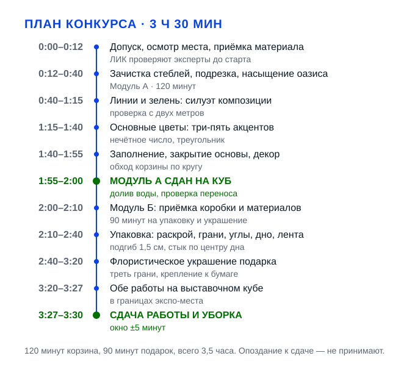
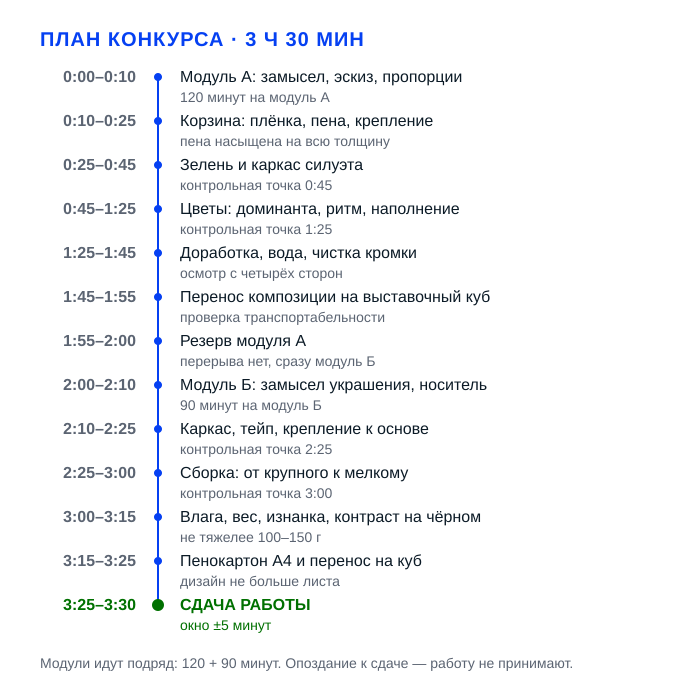
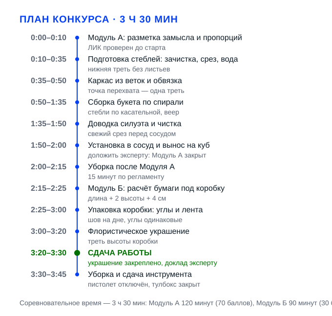

Флористика (Р)
Задания ниже — официальные файлы «Абилимпикс» (источник: abilympics-russia.ru), разложенные по категориям. Решения написаны по тексту задания, регламенту и критериям оценки; в них указано, что именно проверяет эксперт.
Школьник
14–16 лет, базовый уровень заданияВыдержка из официального конкурсного задания: страницы, относящиеся к категории «Школьник» (стр. 8–10 источника).
Пошаговое решение
Три с половиной часа, сто баллов и два разных ремесла в одном задании: сначала подарочная композиция из живых срезанных цветов в корзине на оазисе, потом упакованная коробка с флористическим украшением. Модуль А стоит 70 баллов и идёт 120 минут, модуль Б — 30 баллов и 90 минут, и они идут подряд, без перерыва на «подумать». Оценивают не только красоту: подбор материала по теории композиции и цвета, целесообразность техник, обработку растений, организацию стола, безопасность и расчёт времени. Плюс жёсткие условия, из которых не выйти: работу нельзя повредить при переносе, оазис должен держать цветы 48 часов, домашние заготовки запрещены, а накануне эксперты вносят 30 процентов изменений. Решение построено по порядку конкурсного задания: от приёмки площадки и материала до установки работ на выставочный куб.

Задача 1. Принять площадку, материал и инструментМодуль А · 70 баллов
До первого цветка в корзине проходит почти час, и эти шестьдесят минут решают, будет ли вам чем работать. По конкурсному заданию перед стартом даётся один-два часа на знакомство с площадкой и обработку материала, но заготовки и отдельные конструкции дизайна в это время делать нельзя, поэтому успеть надо ровно то, что разрешено: чистые стебли, проверенный инструмент и материалы, разложенные по зонам. Модуль А стоит 70 баллов из 100, и первые из них начисляются не за красоту, а за то, как вы вошли на площадку, что проверили и как организовали стол.
Действие 1.1. Пройти допуск и осмотреть рабочее место
Шаг 1.1.1
Приходим на площадку заранее и слушаем вводный инструктаж до конца: где аптечка и огнетушитель, как поднимать руку, если сломался инструмент, кому сдавать работу. После инструктажа ставим подпись в листе ознакомления — без неё к старту не допускают. Сразу выкладываем свой инструмент на стол для проверки: эксперты просматривают личный инструмент конкурсанта до начала работы, и всё, чего нет в перечне, изымают.
Проверка личного инструмента — не формальность: по особым указаниям конкурсного задания запрещённые предметы удаляются из набора, а если они найдутся уже в ходе работы, участника штрафуют или дисквалифицируют. Средства связи, включая телефон, на площадку проносить нельзя вообще. Одиннадцать минут, потраченные на инструктаж и раскладку, экономят весь модуль: потом искать секатор в коробке будет некогда.
В листе стоит ваша подпись, инструмент лежит на столе и назван эксперту, телефон сдан или оставлен вне рабочей зоны. Проверьте, что в наборе нет ничего лишнего: только то, что перечислено в перечне оборудования и инструментов.
Самая частая ошибка — прийти с телефоном в кармане фартука «на всякий случай»: обнаружение такого предмета в процессе работы грозит не замечанием, а дисквалификацией. Вторая ошибка — принести самодельные приспособления и каркасы, которые в перечне не значатся.
Эксперт смотрит на поведение в первые минуты: слушает ли участник, задаёт ли вопросы по делу, готов ли инструмент. Впечатление «организованный участник» формируется здесь и дальше только подтверждается.
Шаг 1.1.2
Обходим своё место и проверяем то, что нельзя исправить в спешке: устойчивость металлического стола, сухость пола, работу розетки для клеевого пистолета, освещение, наличие холодильной камеры и стеллажа. Смотрим на выставочный куб — по заданию работа демонстрируется на кубе, повреждать его нельзя, поэтому заранее оцените, где он стоит и как вы будете к нему подходить с полной корзиной. Если что-то шатается, не работает или мешает, зовём эксперта сейчас, а не в середине модуля.
Организация рабочего пространства и соблюдение правил безопасности — отдельные требования конкурсного задания, и они входят в оценку модуля А. Мокрый пол и качающийся стол — это не бытовые мелочи, а прямые риски: с секатором в руке падение заканчивается травмой и снятием с работы. Кроме того, розетка, до которой нужно тянуться через проход, всё равно вынудит вас бросить работу в самый неподходящий момент.
Стол не качается, если нажать на угол; пол сухой; розетка проверена включением пистолета на холостом ходу; свет падает на рабочую поверхность, а не в глаза. Куб стоит на своём месте и не мешает проходу шириной полтора метра.
Привычка «стерплю, потом разберусь» здесь дороже всего: обнаруженная на сороковой минуте неисправность розетки означает, что клеевой пистолет бесполезен, а декоративные элементы уже напилены под склейку. Вторая ошибка — передвинуть куб «чтобы удобнее»: оборудование трогать без разрешения нельзя.
Эксперт обходит площадку перед стартом и видит, кто осмотрел место, а кто сразу сел ждать первого цветка. Вопрос по делу здесь работает лучше молчания.
Шаг 1.1.3
Размечаем стол на три зоны и держим их до конца конкурса: слева ёмкости с водой и необработанный материал, в центре рабочая поверхность с оазисом и корзиной, справа инструмент и мелочь — тейп, проволока, шпажки, скотч. Обрезки складываем не на пол, а в отдельную плошку или пакет рядом с собой: по требованиям безопасности поверхность должна оставаться чистой, а мокрые листья на полу — скользкая ловушка. Вёдра ставим так, чтобы до них не надо было тянуться через рабочую зону.
Зонирование — часть критерия «эффективная организация рабочего пространства», и оно напрямую экономит время: за 120 минут модуля А вы берёте и ставите материал сотни раз, и каждый лишний поиск секатора — это секунды, которых в конце не хватит. Одновременно соблюдается требование о чистых сухих поверхностях: обрезки и брызги не попадают под оазис и не пачкают уже поставленные цветы.
Проверьте просто: протяните руку к инструменту, не вставая и не поворачиваясь корпусом — он должен оказаться под рукой. Обрезков на столе нет, вода не стоит в лужицах, проход к ведру свободен, а пакет для мусора открыт и стоит рядом.
Раскладывать всё в одну кучу «потом разберу» — классика: мокрая упаковочная бумага намокает от рядом стоящего ведра, тейп липнет к столу, а ножницы уезжают под коробку. Вторая ошибка — поставить ведро с водой на пол в проходе.
Эксперт оценивает организацию места по ходу всего модуля, а не один раз: чистота стола в середине работы говорит о ней больше, чем порядок на старте. Подойдя с вопросом, он смотрит, где лежит инструмент, куда складываются обрезки и не стоит ли ведро в проходе.
Действие 1.2. Проверить и разложить инструмент
Шаг 1.2.1
Первым делом берём секатор: проверяем, хорошо ли он заточен, цело ли стопорное кольцо или защёлка, не ослаблен ли винт крепления. Пробуем на ветке потолще — срез должен быть чистым, без размочаленных волокон. Флористический нож раскрываем и закрываем одной рукой, лезвие направляя от корпуса; смотрим, чтобы в закрытом виде оно не выступало за ручку. Кладём оба инструмента остриём от себя, секатор — закрытым, на правый край стола.
Исправность и заточка инструмента — требование раздела о подготовке к работе: тупой секатор рвёт проводящие сосуды стебля, и цветок в оазисе вянет вдвое быстрее, а по условиям задания жизнеобеспечение должно держаться 48 часов. Незакрытый секатор на столе — нарушение техники безопасности, а она входит в оценку модуля наравне с дизайном.
Срез на пробной ветке гладкий, стебель не раздавлен; лезвие ножа не люфтит; стопор секатора держит. Инструмент лежит ручкой к вам, остриём от вас, лезвия закрыты, и до него не надо тянуться через корзину.
Работать «чем дали» с затупленным секатором: срез мнётся, стебель в оазисе подгнивает, и к концу конкурса композиция теряет вид — а оценивают её в том числе за устойчивость. Вторая ошибка — открытый секатор, оставленный на столе между движениями.
Эксперт проверяет инструмент до старта и потом следит за тем, закрывают ли его на паузах. Замечание по безопасности фиксируется отдельно от эстетики, а тупой секатор он может попросить заменить на аналогичный из числа разрешённых.
Шаг 1.2.2
Проверяем вторую группу инструментов: ножницы должны быть остро заточены, крепление не ослаблено; у бокорезов и плоскогубцев осматриваем рабочие поверхности — не должно быть сколов, заусенцев и трещин на ручках; шило целое и острое; степлер заправлен скобами. Всё это раскладываем в один лоток или карман фартука так, чтобы брать не глядя, и сразу убираем туда же после каждого использования.
Кусачки и плоскогубцы понадобятся на проволоке и шпажках, шило — на отверстиях в основе, степлер — на креплении декора. Все они входят в перечень инструментов, который участник обязан иметь при себе, и отсутствие любой позиции означает, что часть техник вам недоступна. Ослабленные ножницы опаснее тупых: они выворачиваются в руке на плотном стебле.
Каждый инструмент назван вслух и лежит на своём месте; лезвия не имеют выбоин; степлер пробивает пробный лист и не зажёвывает скобу. Проверьте пальцем обушок ножниц — заусенец там означает мозоль к середине модуля.
Запихнуть всё в один карман фартука вместе с тейпом: скоба цепляется за ленту, а шило оказывается остриём вверх. Вторая ошибка — взять ножницы для бумаги на проволоку: кромки мнутся, и резать ими ленту потом невозможно.
Оценивается целесообразность применения инструмента: эксперт видит, тем ли инструментом сделан срез и не портит ли участник рабочие кромки. Ножницы, которыми резали проволоку, он отмечает как нарушение технологии.
Шаг 1.2.3
Готовим клеевой пистолет: осматриваем корпус и шнур на повреждения, убираем с сопла застывший клей, вставляем стержень и включаем в сеть. Ставим его на ровную устойчивую поверхность на подставку, под сопло подкладываем лист бумаги и фольгу, чтобы капли не приклеились к столу. Пока пистолет греется — а это занимает несколько минут, — не оставляем его без присмотра и не трогаем металлический носик.
Клеевой пистолет работает от 220 вольт и нагревается до температуры, которая оставляет настоящие ожоги; по правилам безопасности его включают только на ровной поверхности и с подложкой под сопло. Кроме того, горячий клей нельзя наносить на живой растительный материал — он его прожигает, и вместо украшения получается коричневое пятно.
Пистолет стоит устойчиво, шнур не пересекает рабочую зону ножом, под соплом бумага и фольга. На пробном кусочке бумаги клей выходит ровной каплей, без пузырей и потёков. Рядом лежит запасной стержень.
Включить пистолет и бросить его на бок «пусть греется»: клей вытекает на стол, а горячее сопло касается то бумаги, то руки. Вторая ошибка — тянуть шнур через рабочую поверхность: одно движение ножом, и провод перерезан.
Безопасность работы с электроинструментом и клеевым пистолетом — отдельный пункт требований. Эксперт может подойти в момент включения и посмотреть, куда поставлен прибор.
Шаг 1.2.4
Достаём мерный инструмент и мелочь: рулетку три метра или сантиметр, железную линейку до шестидесяти сантиметров, пинцет, дефолиатор для очистки стебля от шипов, цветовой круг. Цветовой круг кладём на видное место — по нему вы будете сверять палитру, а не вспоминать её по памяти. Рулетку сразу используем по делу: измеряем корзину и куб, чтобы знать габариты, в которые нужно попасть.
Правильный подбор растительных материалов в соответствии с теорией композиции и цвета — прямо названное требование задания, и цветовой круг здесь рабочий инструмент, а не украшение стола. Замер корзины нужен, чтобы определить пропорции: высота композиции обычно составляет полтора-два диаметра сосуда, и без цифры вы будете угадывать.
Три числа записаны на уголке бумаги: диаметр корзины, её высота и габарит куба. Пинцет и дефолиатор под рукой, линейка лежит сухой на краю стола, цветовой круг не завален мокрыми листьями. Проверьте, что рулетка сматывается, а не путается в ногах.
Мерить «на глаз» и потом обнаружить, что композиция визуально тяжелее корзины и вот-вот опрокинется: транспортабельность — обязательное условие, и заваливающаяся работа теряет баллы сразу. Вторая ошибка — оставить линейку в воде.
Эксперт смотрит, есть ли у участника внятные пропорции: соразмерность работы сосуду оценивается глазом, но видно её только тогда, когда она есть. Он же проверяет, пользуются ли цветовым кругом или подбирают палитру наугад.
Действие 1.3. Принять растительный материал
Шаг 1.3.1
Получаем материал и сверяем его с инфраструктурным листом: наименование, сорт, цвет, количество. Пересчитываем не «на глаз», а поштучно или пучками, раскладывая на столе по сортам. Расхождения фиксируем сразу — чего не хватает, что пришло другого оттенка, у чего надломлена ветка. Сверка занимает минут десять и делается до старта, пока время не пошло.
Материал выдаётся в соответствии с инфраструктурным листом, и замены по сорту возможны только аналогом по цветовому тону. Если позиции не хватает, вопрос решается до старта через эксперта, а не в середине сборки, когда вы уже поставили три цветка и поняли, что четвёртого нет. Кроме того, реальное количество задаёт масштаб композиции: обещать себе «добавлю ещё» нельзя.
Все позиции пересчитаны и разложены по сортам, расхождения названы эксперту до старта. Сомневаетесь в количестве — считайте повторно, пока материал не намок и не смешался в общую кучу. Не стесняйтесь пересчитать дважды: время до старта в конкурсные часы не входит.
Начать работать, не пересчитав: к финалу выясняется, что акцентных цветов хватает только на половину задуманного, и композиция получается перекошенной. Вторая ошибка — молча принять материал с надломленными стеблями.
Эксперт фиксирует факт приёмки и претензии по ней: позже жалоба на нехватку материала выглядит как попытка оправдаться. Если расхождение подтвердится, он вправе разрешить замену аналогом по цветовому тону.
Шаг 1.3.2
Разбираем материал по группам: линейные — высокие ветки и зелень, задающие каркас; основные — крупные цветы-акценты; заполняющие — мелкие цветы и бутоны; декоративные — сухоцветы, веточки, ленты. Одновременно отбраковываем: вялые головки, пожелтевшие листья, сломанные стебли, следы гнили на срезе откладываем отдельно, а не выбрасываем — их можно использовать в нижнем ярусе или в мини-букете для подарка.
Деление на группы — основа композиции: без линейных материалов работа получается плоской, без заполняющих — рыхлой, без акцента — безликой. Понимание того, что именно вы держите в руках, оценивается как правильный подбор материалов. Отбраковка на берегу не даёт гнили попасть в оазис, где она за сутки испортит воду и соседние стебли.
Группы лежат отдельно, и в каждой понятно, сколько штук. Вялые и повреждённые стебли отложены, а не подмешаны к рабочим, и вы можете назвать, сколько у вас линейных веток и сколько акцентов. Если группа получилась вдвое меньше задуманной, масштаб композиции придётся менять сразу.
Сваливать всё в одну охапку: при разборе ломаются самые хрупкие стебли, а время уходит на повторную сортировку. Вторая ошибка — выбросить «некрасивый» цветок, который был нужен для нижнего яруса. Третья — разложить материал по сортам и тут же смешать, освобождая стол.
Эксперт видит, как участник обращается с материалом: аккуратность разбора читается как профессиональная привычка. Отдельно он отмечает, отложены ли повреждённые стебли или пущены в работу как есть.
Шаг 1.3.3
Ставим материал в воду сразу, как получили: вёдра наливаем на треть-половину, стебли погружаем срезами вниз, головки не мочим. Воду берём прохладную, не ледяную. Если стебли длинные, подрезаем их наискось хотя бы на сантиметр, чтобы открыть проводящие сосуды — это разрешённая обработка, а не заготовка. Вёдра с готовым к работе материалом держим в тени, подальше от радиатора и сквозняка.
Знание правил обработки и ухода за растительным материалом — отдельное требование задания. Цветок, простоявший час без воды, теряет тургор, и поставить его в оазис можно, но держаться он будет хуже: заявленные 48 часов жизнеобеспечения обеспечиваются в том числе правильным стартом. Подрезка наискось увеличивает площадь всасывания в полтора-два раза.
Срезы в воде, листья не плавают в ведре, вода чистая. Через десять минут после постановки головки упругие, лепестки не висят, вода не помутнела и в ней нет обломков стеблей. Если головки всё равно висят, материал пришёл старым — скажите об этом эксперту.
Оставить материал на столе «пока разберусь с корзиной»: за полчаса без воды тонкостебельные цветы теряют вид безвозвратно, а восстановить их в оазисе уже не получится. Вторая ошибка — налить воду по самые головки, чтобы «лучше напились»: от этого лепестки мокнут и покрываются пятнами.
Эксперт проходит по площадке и смотрит, стоит ли материал в воде: это один из самых быстрых внешних признаков профессиональной подготовки. Сухие вёдра и цветы, лежащие на столе, он отмечает в оценочном листе.
Задача 2. Подготовить материал и основу композицииМодуль А · 70 баллов
Вторая задача — превратить привезённый материал в рабочий: зачистить стебли на ту высоту, которая уйдёт в основу, подрезать их под углом и рассортировать по ярусам, а затем посадить в корзину насыщенный водой оазис. Именно здесь закладываются 48 часов жизнеобеспечения, о которых прямо говорит конкурсное задание: всё, что сделано на этом этапе неправильно, проявится не сразу, а на второй день, когда работа уже сдана, и обернётся потерянными баллами за сохранность материала.
Действие 2.1. Зачистить и подрезать стебли
Шаг 2.1.1
Берём каждый стебель и снимаем с него листья и шипы на высоту, которая уйдёт в оазис, плюс два-три сантиметра запаса. Шипы убираем дефолиатором или перчаткой для очистки стебля, движением от головки вниз, чтобы не содрать кору выше линии среза. Розы обрабатываем в первую очередь: их шипы опаснее всего и для рук, и для соседних стеблей в композиции.
Лист, погружённый в оазис, начинает гнить через сутки и портит воду всей композиции — а жизнеобеспечение должно держаться 48 часов. Шипы, оставленные на нижней части, при постановке цепляются за соседние стебли и рвут кожицу, через которую идёт заражение. Зачистка на высоту погружения — базовая гигиена работы с материалом.
Нижняя часть стебля голая на длину, равную глубине посадки плюс два-три сантиметра; кора целая, без содранных полос; шипов на нижней трети нет. Проведите пальцем вверх по стеблю — зацепов быть не должно.
Очистить стебель целиком «для красоты»: оголённая верхняя часть выглядит как палка, и композиция теряет объём. Вторая ошибка — срезать листья ножом против роста, сдирая кору полосой до самой головки: на второй день такая полоса темнеет.
Эксперт проверяет зачистку у нескольких стеблей и смотрит, нет ли листвы, уходящей в основу. Это вопрос и эстетики, и сохранности: листья в оазисе начинают гнить раньше, чем закончится второй день выставки.
Шаг 2.1.2
Подрезаем стебли секатором под углом примерно сорок пять градусов, одним уверенным движением, не сминая волокна. Длину задаём по ярусам: линейным материалам оставляем максимальную, основным цветам — так, чтобы головка выходила над зеленью на треть, заполняющим — короче всех. Срез делаем в последний момент перед постановкой, а не за час до неё. Отрезанные концы сразу ставим в воду.
Косой срез даёт в полтора-два раза большую площадь соприкосновения с влагой, чем прямой, и стебель не упирается срезом в дно прокола. Разная длина по ярусам — это и есть композиция: если все стебли одной длины, получится не букет в корзине, а веник. Свежий срез обязателен потому, что на воздухе проводящие сосуды быстро затягиваются.
Срез блестящий, ровный, без мочала; угол виден глазом; стебель не раздавлен у линии среза. Разложите подрезанные стебли на три кучки — короткие, средние, длинные — и проверьте, что кучек действительно три.
Резать тупыми концами секатора или «дожёвывать» толстый стебель в два приёма: волокна размочаливаются, и цветок вянет за сутки. Вторая ошибка — подрезать всё под одну длину, а потом пытаться вытянуть форму высотой постановки.
Эксперт смотрит на срез и на то, держит ли участник стебель ниже линии реза: второе — прямое требование безопасности. Размочаленный срез он считает технической ошибкой, а не мелочью оформления.
Шаг 2.1.3
Раскладываем подрезанный материал по ярусам и помечаем для себя, что куда пойдёт: линейные — на каркас, основные — в фокусные точки, заполняющие — в промежутки. Слабые, тонкие и полые стебли усиливаем: обматываем тейп-лентой или вставляем в более толстый стебель, а тяжёлые головки сажаем на проволоку. Делаем это до постановки, потому что в оазисе усилить стебель уже не получится.
Целесообразность и правильное выполнение техник — отдельное требование задания. Тонкий стебель в пористой основе провисает под весом головки и выворачивается из прокола, а композиция теряет форму к моменту оценки. Усиление до постановки — это нормальная флористическая техника, а не ухищрение.
Слабый стебель не гнётся под собственной головкой; тейп лежит плотно, без складок; проволока не торчит из головки. Возьмите стебель за нижний конец и поднимите — головка должна смотреть вверх, а не вниз.
Усиливать уже поставленный цветок: приходится вынимать его из оазиса, прокол расширяется, и стебель начинает болтаться. Вторая ошибка — слишком тугая обмотка тейпом, которая пережимает сосуды и не даёт стеблю пить.
Эксперт отмечает техники, которые участник применяет осознанно: обмотка тейпом, сделанная на глазах, читается как навык. Проволоку, торчащую из головки цветка, он тоже увидит при осмотре.
Шаг 2.1.4
Отдельно готовим зелень: у веток удаляем нижние листья, у крупных листьев подрезаем черешки, чтобы они не топорщились. Если лист нужен для закрытия основы, оставляем его на коротком черешке и ставим в оазис отдельно. Всю зелень держим в воде до момента постановки и берём по одной ветке, а не охапкой. Оборванные и подсохшие листья в работу не идут. Стебель держим у основания.
Зелень — самый массовый материал в композиции, и именно она держит объём и закрывает просветы. Неподрезанные черешки упираются друг в друга, ветка не садится на нужную глубину и торчит выше задуманного. Кроме того, листья, взятые охапкой, ломаются, и половина материала уходит в отход.
Ветка садится в основу на нужную глубину без сопротивления; листья не помяты; в ведре не плавают оборванные листья. Проверьте одну ветку на пробном проколе — она должна держаться сама, без поддержки. Если ветка выпадает, значит, прокол слишком широкий.
Дёргать зелень из ведра за верхушки: стебли ломаются у основания, и в композицию идёт обрезанный огрызок. Вторая ошибка — оставить на ветке листья, которые потом окажутся в воде поддона и начнут гнить за сутки.
Эксперт смотрит, как участник берёт материал: аккуратно по ветке или вытряхивает ведро на стол. Он же проверяет, подрезаны ли черешки, — по этому признаку видно, работал ли участник с зеленью раньше.
Действие 2.2. Подготовить корзину и посадить оазис
Шаг 2.2.1
Осматриваем корзину: проверяем плетение, дно, ручку, отсутствие трещин и заусенцев. По условиям задания повреждать сосуд нельзя, поэтому все доработки делаем аккуратно, без силы. Если корзина плетёная с просветами, выстилаем её изнутри плёнкой или плотным пакетом так, чтобы вода не протекала, а края плёнки не выглядывали над бортом. Ручку пока отводим в сторону и фиксируем, чтобы она не мешала ставить материал.
Протекающая корзина — это мокрый выставочный куб и лужа на экспо-месте, а работа должна быть транспортабельной и стоять на кубе двое суток. Плёнка одновременно защищает плетение от воды: натуральный материал от постоянной влаги темнеет и разбухает. Ручка, зафиксированная в сторону, освобождает доступ к центру.
Плёнка лежит ровно, без складок в центре, и не выглядывает за борт; корзина стоит на столе устойчиво, не качается; ручка не падает на рабочую зону. Налейте немного воды и подождите минуту — снизу сухо.
Выстелить корзину наспех, оставив складку на дне: оазис встанет криво, и вся композиция будет завалена в одну сторону. Вторая ошибка — обрезать плёнку по борту, а потом обнаружить, что вода уходит через плетение.
Эксперт проверяет, не повреждён ли сосуд, и смотрит на аккуратность подготовки: протекающая основа видна по мокрому кубу. Он может заглянуть внутрь корзины, чтобы увидеть, как выстелено дно.
Шаг 2.2.2
Насыщаем оазис: кладём его в широкую ёмкость с водой срезом вниз и даём погрузиться самому, не притапливая руками. Держим в воде двадцать-тридцать минут, пока он не станет тяжёлым и не перестанут выходить пузырьки воздуха. Достаём, даём стечь лишней воде над раковиной и только потом несём к корзине. Резать и прокалывать сухой оазис нельзя. Воду в ёмкости не подогреваем.
Оазис — неорганическая основа для срезанных растений, и работает она только насыщенной водой: сухой блок вытягивает влагу из стебля и убивает цветок за несколько часов. Принудительное погружение руками загоняет воздух внутрь, в порах остаются сухие полости, и вода до части стеблей просто не доходит — а задание требует жизнеобеспечения 48 часов.
Блок заметно потяжелел, пузырьки больше не выходят, на срезе видно тёмную влажную поверхность. Разрежьте остаток — внутри не должно быть светлых сухих участков, а вода из блока при нажатии выступает каплями.
Бросить блок в воду и через две минуты вынуть: сверху он мокрый, внутри сухой, и цветы стоят в сухости. Вторая ошибка — топить руками, продавливая блок ко дну: воздух остаётся внутри, и вода доходит не до всех стеблей.
Умение обращаться с неорганической основой — базовый навык компетенции, и эксперт смотрит на него в самом начале модуля. По весу блока и по влажным срезам он сразу понимает, насыщен ли оазис.
Шаг 2.2.3
Вырезаем из насыщенного блока кусок по форме корзины: он должен входить плотно, но без излишнего давления на стенки, а его верхняя плоскость — быть на один-два сантиметра ниже края борта. Кладём блок в корзину и фиксируем: прокалываем насквозь двумя-тремя шпажками или прикручиваем проволокой к ручке, если она жёсткая. Проверяем пальцем, не шатается ли основа.
Основа выше борта выглядит как торчащий кусок пенопласта и не даёт поставить стебли под углом к краю. Незафиксированный блок при переноске на куб провернётся, и вся композиция съедет набок — а транспортабельность входит в обязательные условия. Шпажки и проволока входят в перечень технических материалов и разрешены.
Блок сидит плотно, его верх ниже края на сантиметр-два; при нажатии пальцем основа не проворачивается; шпажки не выходят наружу через дно. Наклоните корзину на двадцать градусов — блок должен остаться на месте.
Запихивать блок силой: стенки плетения трескаются, и сосуд повреждён — это прямое нарушение условий задания. Вторая ошибка — поставить блок выше борта и потом пытаться скрыть его мхом: трещина по плетению всё равно видна снаружи.
Эксперт проверяет устойчивость основы и то, не повреждена ли корзина: эти два пункта фиксируются до начала сборки. Треснувшее плетение он связывает с силой, с которой вставляли блок.
Шаг 2.2.4
Проверяем влагоёмкость будущей работы: наливаем в корзину немного воды, чтобы она стояла на дне под блоком, и отмечаем, сколько вошло. Заранее решаем, как будете доливать воду перед сдачей — через край, шприцем или трубочкой в углу. Убираем со стола лишнюю воду и мокрые обрезки. Воду наливаем тонкой струёй у стенки, чтобы не размывать край блока. Капли сразу вытираем.
Запас воды под блоком — это те самые сутки, на которые рассчитана работа после конкурса. Если основа стоит на сухом дне, оазис отдаёт воду цветам и не получает её обратно. Продуманный способ долива экономит время в конце, когда каждый шаг уже расписан.
Вода стоит в корзине ровным слоем, не вытекает; на столе сухо; вы знаете, сколько миллилитров войдёт при доливе. Поставьте корзину на лист бумаги на минуту — бумага должна остаться сухой. Проверьте также, что дно корзины не намокло снаружи.
Налить воду поверх блока: она стекает по стенкам, вымывает крошку и пачкает плетение. Вторая ошибка — доливать уже собранную композицию сверху, заливая цветы и мох: вода уносит с блока крошку, и та оседает бурым налётом.
Эксперт обращает внимание на сухость куба и стола: протечки проявляются сразу после переноса работы. Если под корзиной остаётся мокрое пятно, вопрос к подготовке основы решён не в вашу пользу.
Задача 3. Собрать подарочную композицию в корзинеМодуль А · 70 баллов
Сердце модуля А: на подготовленную основу нужно поставить материал так, чтобы работа читалась как подарок, а не как охапка цветов в корзине. Порядок здесь жёсткий и не зависит от темы: сначала линейные материалы задают силуэт, потом основные цветы ставят акценты, потом заполняющие закрывают пустоты, и только в конце открытая основа прячется под мхом или листом. Нарушите порядок — и придётся переставлять всё заново, а 120 минут модуля уже идут.
Действие 3.1. Задать форму: линии и зелень
Шаг 3.1.1
Прежде чем брать первый стебель, размечаем габариты: высота композиции — примерно полтора диаметра корзины, ширина — не больше двух диаметров. Мысленно делим площадь основы на трети и решаем, где будет главный акцент, а где — поддерживающая масса. Если тема задана, проговариваем её для себя одним словом — праздник, осень, весна — и проверяем, что задуманный силуэт этому слову соответствует.
Соразмерность сосуду и читаемая композиционная схема — то, что эксперт видит с первого взгляда, и то, за что дают баллы по критерию подбора материалов и теории композиции. Без разметки работа получается «во все стороны», а центр тяжести уезжает вбок, из-за чего корзина кажется неустойчивой — а транспортабельность обязательна.
Три числа записаны или отмечены шпажкой: высота, ширина, положение акцента. Отойдите на два метра и посмотрите на пустую корзину — вы должны представлять, куда придёт вершина силуэта и где встанет главный цветок.
Начинать сразу с цветов «по вдохновению»: через полчаса выясняется, что акцент оказался в геометрическом центре, работа стала плоской, и переставлять уже нечего — стебли проколоты, дырки расширены, а переделка каркаса съедает двадцать минут.
Эксперт оценивает композицию целиком, но её каркас виден сразу: пропорции и точка равновесия — первое, что бросается в глаза. Работа выше двух диаметров корзины читается как перегруженная.
Шаг 3.1.2
Ставим линейный материал: три-пять высоких веток, задающих направление. Первую — почти вертикально с небольшим наклоном, вторую — в сторону, третью — короче и ниже, чтобы получилась несимметричная, но уравновешенная схема. Вводим стебель в основу под углом, повторяющим его естественный рост, на глубину два-три сантиметра, и не расшатываем в проколе.
Линейные материалы держат силуэт: без них корзина выглядит приплюснутой. Асимметрия с уравновешенной массой — приём, который в теории композиции ценится выше симметричного «шара», и именно за него дают баллы по критерию творческого решения. Глубина посадки в два-три сантиметра обеспечивает и устойчивость, и доступ к влаге.
Отойдите на два метра и прищурьтесь: силуэт читается как треугольник или овал, а не как прямоугольник. Ветки не качаются от лёгкого касания, проколы вокруг стебля не рваные, основа не крошится. Если ветки качаются, их надо посадить глубже.
Втыкать ветки строго вертикально рядком: получается частокол, а не композиция. Вторая ошибка — расшатывать стебель в проколе, чтобы «подправить угол»: отверстие расширяется, и ветка начинает вываливаться.
Эксперт смотрит на постановку линий в первую очередь: направление, наклон, отсутствие рваных проколов. Ветки, воткнутые строго вертикальным рядком, он отмечает как отсутствие композиционной схемы.
Шаг 3.1.3
Заполняем объём зеленью по ярусам: сначала средний ярус, потом нижний, окаймляющий борт корзины, и только потом отдельные ветки в верхней части. Каждую ветку ставим так, чтобы она выходила из основы под своим углом и не перекрывала центр. Следим за плотностью: основа должна угадываться, но не просвечивать насквозь. Ветку вводим под углом к поверхности, а не сверху вниз.
Зелень задаёт массу и цветовой фон, на котором читаются цветы. Равномерная плотность по ярусам — это и есть та самая «правильная теория композиции»: пустоты в нижнем ярусе выдают спешку, а перегрузка верха делает работу визуально тяжёлой и опрокидывает её на бок при переноске.
Посмотрите на композицию сверху и сбоку: просветов до основы нет, но и «зелёного шара» не получилось — видны ярусы. Потрясите корзину легонько: ничего не выпадает и не сдвигается. Если просветы остались, добавьте две-три ветки в нижний ярус.
Набивать зелень до состояния плотного куста: цветам потом некуда встать, а основа перестаёт держать стебли — они идут между ветками, а не в оазис, и вянут к утру второго дня. Плотная зелень к тому же не даёт долить воду.
Эксперт проверяет, держится ли материал в основе или просто вставлен между ветками: второе — грубая техническая ошибка. Он смотрит на работу сверху, где пустоты видны лучше всего.
Действие 3.2. Поставить основные цветы
Шаг 3.2.1
Выбираем акцентные цветы: обычно это три или пять штук, нечётное число, разных по размеру, но одной цветовой группы. Определяем для них точки по схеме треугольника — одна выше и левее центра, две ниже и правее, — чтобы взгляд шёл по работе, а не упирался в середину. Самый крупный цветок ставим в главную точку, остальные подчиняем ему по размеру. Точки отмечаем шпажкой.
Нечётное число акцентов и треугольная схема — классика композиции, которая не даёт работе выглядеть «парно» и симметрично. Подчинение по размеру создаёт иерархию: у работы появляется главное и второстепенное, и это прямо относится к критерию творческого, осмысленного решения, а не механической расстановки.
Три точки видны и не выстраиваются в линию; главный цветок заметен сразу, с двух метров. Если прищуриться и посмотреть на размытые пятна, композиция всё равно читается и не рассыпается. Если главный цветок не находится взглядом за секунду, акцента нет.
Поставить акценты ровным рядком по борту: работа становится плоской, как витрина. Вторая ошибка — четыре одинаковых цветка: чётное число читается как «пара» и убивает динамику, иерархия пропадает. Акценты, поставленные в линию, читаются как бордюр.
Эксперт ищет в работе главный акцент и проверяет, есть ли движение взгляда: отсутствие иерархии снижает оценку за композицию. Чётное число одинаковых цветов он читает как случайный набор.
Шаг 3.2.2
Вводим цветок в основу строго вертикально или под нужным углом, на глубину два-три сантиметра, одним движением, без проворачивания. Держим стебель близко к точке входа, чтобы не сломать его под весом головки. Если головка тяжёлая, придерживаем её второй рукой и сажаем цветок глубже — до четырёх сантиметров. Вынимать и переставлять цветок можно не больше одного раза.
Глубина посадки определяет, дойдёт ли влага: два-три сантиметра — рабочий минимум для сочного стебля, для одревесневшего нужно больше. Проворачивание и повторные перестановки расширяют прокол, стебель начинает болтаться, и цветок выпадает при переноске — а транспортабельность работы входит в обязательные условия задания.
Цветок сидит плотно, при лёгком подтягивании вверх не выходит из основы; головка смотрит туда, куда вы её направили; вокруг стебля нет крошки. Покачайте стебель у самой основы — он должен пружинить, а не ходить ходуном.
Проткнуть основу насквозь: стебель выходит снизу, вода не поднимается, цветок вянет за день. Вторая ошибка — ставить цветок на один сантиметр «чтобы повыше»: он держится только за счёт трения и выпадает при первом же переносе.
Эксперт проверяет несколько цветов на устойчивость — иногда прямо пальцем. Это самый быстрый способ отличить работу от видимости работы, и он пользуется им на каждой площадке.
Шаг 3.2.3
Распределяем цвет по массе: тёплые и насыщенные оттенки ближе к акценту, холодные и светлые — по краям, чтобы работа не «кричала» с одной стороны. Сверяемся с цветовым кругом: берём не больше трёх основных цветов плюс зелень и белый, иначе композиция рассыпается на части. Если тема требует контраста, добавляем его точечно — одним-двумя цветками, а не половиной материала.
Правильный подбор материалов в соответствии с теорией цвета — прямо названное требование конкурсного задания. Три цвета плюс нейтральный — рабочий предел, за которым глаз перестаёт видеть композицию. Цветовое равновесие проверяется на расстоянии: работа не должна казаться перекошенной по тяжести.
Прищурьтесь: тёмные и яркие пятна распределены по площади, а не собраны в углу. Посмотрите на работу в чёрно-белом режиме на телефоне — так видно распределение тона и перекос массы. Если тон собрался в одном углу, переставьте один цветок.
Собрать «радугу» из всего, что выдали: каждый цветок по отдельности красив, вместе — базар. Вторая ошибка — поставить все яркие цветы в одну сторону, и работа визуально падает: палитра рассыпается, акцент перестаёт читаться.
Эксперт оценивает цветовое решение как отдельный критерий, и он весомее, чем точность отдельного стебля. Пять и больше цветов в работе он воспринимает как отсутствие палитры.
Шаг 3.2.4
Отходим на два метра и смотрим на работу целиком, не поправляя ничего руками. Проверяем три вещи: силуэт читается, акцент виден, масса уравновешена. Если что-то не так, переставляем один элемент, а не пять. Возвращаемся, поправляем и снова отходим — на это уходит две минуты, но именно они отделяют работу от набора цветов. Правку делаем, держа стебель у самой основы.
Оценка эксперта формируется с дистанции, а не с двадцати сантиметров, на которых вы работаете. Правки «на глаз свысока» почти всегда избыточны: участник начинает переставлять всё и разрушает то, что уже держалось. Один точный перенос решает задачу и не расширяет лишних проколов.
С двух метров видны вершина, акцент и нижний ярус; ничего не выпирает за габариты, которые вы наметили. Сделайте фото на телефон и посмотрите на экран — там ошибки видны резче, чем вживую. Если на фото работа кажется тяжелее слева, переставьте один цветок.
Крутить и переставлять всё подряд: к концу правок основа издырявлена, стебли болтаются, и работа теряет и форму, и устойчивость. Вторая ошибка — оценивать композицию, стоя над ней носом к цветам: каждая лишняя перестановка расширяет прокол.
Эксперт обходит работы и смотрит с дистанции — ровно так, как вы сейчас. Умение увидеть свою работу чужими глазами ценится как профессиональная зрелость.
Действие 3.3. Заполнить, закрыть основу и проверить работу
Шаг 3.3.1
Заполняем промежутки мелкими цветами и бутонами: по одному-два в каждую пустоту, на разной высоте, с наклоном в сторону роста соседей. Мелкий материал работает как связка между крупными акцентами: он не должен спорить с ними по размеру и яркости. Идём по кругу корзины, чтобы не пропустить сектор, который вы не видите со своего места. Мелкие цветы ставим чуть ниже крупных.
Заполняющие элементы убирают «дыры» и делают переход от акцента к зелени плавным. Если заполнение одинаковое по высоте, работа выглядит как сетка; если его нет — как редко расставленные цветы. Кроме того, обход по кругу обязателен: корзина стоит на кубе и её будут смотреть с четырёх сторон, а не с одной.
Обойдите корзину кругом и посмотрите на неё с каждой из четырёх сторон: пустот нет, высота заполнения разная. Ни один сектор не выглядит «недоделанным», и все стебли сидят в основе. Пустой сектор виден сразу, как только вы обошли корзину.
Заполнять только тот сектор, который перед вами: со стороны зрителя работа выглядит готовой, с обратной — голой. Это самая обидная потеря баллов, потому что материал был, а обход по кругу занимает всего минуту.
Эксперт обходит куб кругом — это стандартный порядок осмотра, и односторонняя композиция видна сразу. Он специально смотрит на ту сторону, которая была к участнику спиной.
Шаг 3.3.2
Закрываем открытую основу: мохом, крупным листом, сизалем или декоративной корой — тем, что есть в материале и подходит по цвету. Укладываем не сплошным слоем, а фрагментами, закрывая видимые проплешины между стеблями. Края корзины оставляем чистыми: ни мох, ни листья не должны свисать через борт на стол. Мох разрыхляем пальцами и кладём мелкими кусочками.
Открытый оазис — это зелёная или серая губка, которая видна в просветах и мгновенно удешевляет работу. Одновременно закрытие основы работает на сохранность: мох и лист снижают испарение с поверхности блока, и вода держится дольше — а 48 часов жизнеобеспечения заявлены в задании.
С расстояния метра основа не просматривается; закрывающий материал держится, не сползает при наклоне корзины; борт чистый. Наклоните корзину на двадцать градусов — мох должен остаться на месте. Просветы у самого борта закрываем в первую очередь.
Завалить основу толстым слоем мха: он впитывает воду и сам начинает гнить, а композиция выглядит как кочка. Вторая ошибка — оставить открытыми края у борта, там оазис виден особенно отчётливо, а мокрый мох к утру зеленеет.
Эксперт специально смотрит в просветы между цветами: это место, где видно, доведена ли работа до конца. Открытый оазис у борта он замечает первым, ещё до оценки силуэта.
Шаг 3.3.3
Добавляем декор: ленту, веточки, сухоцветы, небольшие акценты — ровно столько, чтобы поддержать тему. Ленту закрепляем так, чтобы она не перекрывала цветы и не свисала ниже дна; если корзина с ручкой, декор на ручке делаем лёгким и симметричным с двух сторон. Все крепления прячем: проволоку и тейп не должно быть видно ни с одной стороны. Сухоцветы крепим на проволоку или шпажку.
Декор — это то, что превращает композицию в подарочную, но именно на нём чаще всего теряют баллы: слишком много ленты, узел на виду, торчащая проволока. Аккуратность креплений оценивается как качество исполнения, а лента, перекрывающая акцент, разрушает построенную иерархию.
Обойдите работу и проверьте, не видно ли проволоки, тейпа, шпажек и следов клея. Лента не закрывает ни одного цветка; при переносе ничего не звенит, не болтается и не цепляется за зелень. Проверьте изнанку: там крепления видны лучше всего.
Приклеить декор горячим клеем прямо на лепесток: клей прожигает живую ткань, остаётся коричневое пятно, и цветок приходится выбрасывать — материал уже потрачен. Вторая ошибка — оставить проволоку и тейп на виду.
Эксперт осматривает крепления на просвет и с изнанки: торчащая проволока — типичная находка при осмотре. Ленту, закрывающую акцентный цветок, он отмечает как нарушение композиции.
Шаг 3.3.4
Проверяем работу по двум обязательным условиям: жизнеобеспечение и транспортабельность. Доливаем воду под основу, проверяем, что все стебли сидят плотно, и поднимаем корзину двумя руками за дно и борт, а не за ручку. Проносим её по своему месту на пару шагов, слегка наклоняя, и смотрим, не выпадает ли что-нибудь и не капает ли снизу. Сдвинувшееся поправляем сразу.
В конкурсном задании жизнеобеспечение растительного материала гарантируется на 48 часов, а работа должна быть транспортабельной — оба условия проверяются при оценке. Пробный перенос делается до выхода на экспо-место: уронить композицию у самого куба, на глазах у экспертов, — худший из возможных сценариев.
Корзина держится в руках без деформации, ничего не выпадает, снизу не капает; после переноса ни один цветок не сдвинулся. Вода в поддоне есть, стебли не ходят, ручка не выворачивается. Покачайте корзину в руках — она должна вести себя как одно целое.
Нести за ручку: плетёная ручка рассчитана на вес пустой корзины, и с мокрым оазисом она рвётся или выворачивается. Вторая ошибка — не проверить перенос и узнать о слабом креплении на полпути к кубу; проверка занимает полминуты.
Эксперт может попросить приподнять работу: транспортабельность проверяется буквально руками. Если при подъёме что-то выпадает, разговор о дизайне уже не имеет смысла.
Задача 4. Упаковать подарок и украсить его цветамиМодуль Б · 30 баллов
Модуль Б идёт сразу после корзины и длится 90 минут: упаковать коробку и сделать к ней флористическое украшение. Здесь другая логика — не объём, а точность: ровные углы, натянутая бумага, аккуратный стык на дне и украшение, соразмерное коробке. Тридцать баллов модуля даются за то, что видно с любого расстояния: за геометрию упаковки и за то, насколько украшение поддерживает тему и не спорит с корзиной, стоящей рядом на том же кубе.
Действие 4.1. Подготовить коробку и материалы
Шаг 4.1.1
Получаем коробку и осматриваем её: целые ли углы, не помяты ли грани, плотно ли сидит крышка, нет ли следов клея и надписей на лицевой стороне. Протираем поверхность насухо, если она запылена, — на гладком картоне пыль видна под бумагой. Коробку ставим на стол лицевой стороной вверх и запоминаем, где будет верх: если на крышке есть логотип или тиснение, он должен оказаться ровно по центру после упаковки.
Упаковка подарка оценивается как отдельный результат модуля, и мятая коробка под бумагой всё равно читается: вмятины проявляются на гранях. Пыль и следы клея под обёрточной бумагой дают бугры, а логотип, съехавший с центра, сразу выдаёт небрежность — это первое, что замечает эксперт.
Все четыре угла целые, крышка сидит без перекоса, поверхность чистая и сухая. Поставьте коробку на стол и посмотрите на неё сбоку: зазора между крышкой и корпусом быть не должно, а грани остаются ровными.
Упаковать коробку с вмятиной «бумага скроет»: скрывает она только мелкие царапины, а вмятина на грани становится ещё заметнее из-за блика. Вторая ошибка — не проверить, где верх, и упаковать логотипом вниз.
Эксперт осматривает упакованную коробку со всех сторон, включая дно: дно — излюбленное место для проверки аккуратности. Вмятину на грани под бумагой он заметит по неровному блику.
Шаг 4.1.2
Раскраиваем бумагу с запасом: к каждой грани прибавляем по два-три сантиметра на подгиб, а по высоте коробки — ещё по два сантиметра сверху и снизу. Считаем просто: ширина листа равна периметру коробки плюс четыре-шесть сантиметров, высота — высоте коробки плюс четыре-пять сантиметров. Отрезаем по линейке и железной линейкой же приглаживаем сгиб, чтобы край был ровным.
Бумаги «впритык» не хватает ровно на подгиб, и угол получается открытым — самая заметная ошибка в упаковке. Излишек в десять сантиметров тоже плох: его приходится подворачивать вдвое, и на грани появляется утолщение. Расчёт по периметру даёт ровно тот запас, который нужен для чистых углов.
Лист лежит вокруг коробки с равным запасом со всех сторон; край отрезан ровно, без зазубрин; при подъёме коробки бумага не натягивается в струну. Проверьте запас линейкой в двух местах — разница больше сантиметра уже видна.
Резать бумагу ножницами «по глазомеру»: линия уходит на сантиметр, и на грани появляется перекос, который не спрятать. Вторая ошибка — взять слишком большой лист и потом подрезать уже на коробке: перекос виден как светлая полоса.
Ровный раскрой виден по кромке: эксперт смотрит на линию реза и на равномерность запаса по сторонам. Неравный запас в два сантиметра с одной стороны выдаёт работу без расчёта.
Шаг 4.1.3
Готовим инструменты под упаковку: ножницы для бумаги, двусторонний и обычный скотч, степлер со скобами, линейку, дырокол, если нужна бирка, и ленту для банта. Скотч режем на полоски заранее и наклеиваем кончиками на край стола — так руки остаются свободны, а бумага не рвётся в момент, когда её надо держать. Всё это убираем с рабочей зоны цветов, чтобы не смешать материалы двух модулей.
Упаковка делается двумя руками: одна держит и натягивает бумагу, вторая клеит. Заранее нарезанные полоски скотча — приём, который экономит минуты и, главное, не даёт бумаге сморщиться, пока вы ищете рулон. Разделение зон нужно потому, что обрезки скотча, прилипшие к стеблю, уже не убрать.
Полоски скотча наклеены на край стола и не слиплись; ножницы режут бумагу, а не мнут; на рабочем месте нет обрезков скотча. Проверьте, что двусторонний скотч действительно двусторонний — на конкурсах попадаются рулоны с защитным слоем.
Клеить бумагу обычным скотчем поверх: полосы бликуют и видны на просвет, а снять их без разрыва уже нельзя. Вторая ошибка — работать одним рулоном, перекладывая его из руки в руку: скотч, прилипший к стеблю, снимается вместе с кожицей.
Аккуратность креплений оценивается: эксперт смотрит, есть ли видимые полосы скотча на лицевой стороне. Заранее нарезанные полоски он отмечает как признак продуманной организации.
Действие 4.2. Упаковать коробку
Шаг 4.2.1
Кладём лист бумаги лицевой стороной вниз, коробку ставим в центре вверх дном — так удобнее заворачивать, а дно окажется закрытым последним. Поднимаем одну длинную сторону бумаги, натягиваем её по грани, загибаем край на полтора сантиметра и приклеиваем двусторонним скотчем к торцу коробки. То же делаем со второй стороны, подтягивая бумагу так, чтобы она легла без морщин.
Натяжение — главный секрет ровной упаковки: слабо натянутая бумага даёт волну на грани, перетянутая — рвётся на углу. Подгиб в полтора сантиметра даёт ровную кромку и не создаёт утолщения, которое потом видно под лентой. Порядок «сначала длинные стороны» задан геометрией: короткие закрываются поверх и держат всё.
Бумага лежит по грани без пузырей и диагональных складок; кромка подогнута ровной полосой; при проведении ладонью по грани не чувствуется бугров. Углы пока открыты — это нормально на этом шаге. Если бумага пошла волной, лучше переклеить сразу.
Клеить без подгиба: срез бумаги остаётся открытым, край лохматится и виден на торце. Вторая ошибка — натянуть бумагу так, что на углу она лопается: начинать заново приходится на новом листе, а волна на грани не разглаживается.
Эксперт проводит рукой по граням: морщины и бугры чувствуются на ощупь, даже если не видны. Он же проверяет, подогнута ли кромка, — открытый срез бумаги виден на торце.
Шаг 4.2.2
Формируем углы «конвертом»: защипываем бумагу с торца, разводим её в стороны, прижимаем треугольник к торцу и загибаем вниз по грани, подгибая край на сантиметр. Получившийся треугольник приклеиваем двусторонним скотчем, прижимая большим пальцем от центра к краю. Так проходим все четыре угла, начиная с того, который ближе к вам. Кромку подгибаем всегда в одну сторону.
Угол — единственное место упаковки, где видно мастерство: небрежный угол топорщится, расходится и выдаёт всю работу. Аккуратно сложенный угол выглядит как заводской, и именно за него дают баллы по качеству исполнения. Прижимание от центра к краю выгоняет воздух и не даёт бумаге сморщиться под скотчем.
Угол плоский, без «ушек» и просветов, кромка подогнута, скотч не виден с лицевой стороны. Проведите пальцем по диагонали угла — ступеньки быть не должно, а бумага не должна расходиться. Проверьте все четыре угла, а не только тот, что перед вами.
Собирать угол «в комок» и заклеивать скотчем: получается узел, который виден с трёх метров. Вторая ошибка — подгибать край только на одном угле из четырёх: разница заметна сразу, ведь углы проверяют первыми.
Эксперт проверяет углы на всех четырёх сторонах и на дне: именно там чаще всего срезают угол «побыстрее». Один небрежный угол он считает ошибкой всей упаковки.
Шаг 4.2.3
Переворачиваем коробку и закрываем дно: подгибаем оставшиеся края, сводим их к центру и заклеиваем стык полосой двустороннего скотча, приглаживая линейкой. Стык должен прийтись на середину дна и лечь ровно, без нахлёста в два слоя. Если на дне остался лишний материал, подрезаем его, а не подворачиваем. Перед заклейкой проверяем, что бумага лежит без складок.
Дно проверяют всегда, потому что оно показывает, делалась ли работа осознанно или наспех. Нахлёст в два слоя даёт бугор, и коробка стоит на столе покачиваясь — а подарок должен стоять устойчиво рядом с корзиной на кубе. Ровный стык по центру выглядит как шов на фабричной упаковке.
Коробка стоит на столе без качания; стык ровный, по центру, шириной не больше сантиметра; лишней бумаги по краям нет. Наклоните коробку и посмотрите на дно под углом к свету — бугров не должно быть. Если коробка качается, значит, на дне остался нахлёст.
Заклеить дно внахлёст «чтобы держалось»: бугор на дне не даёт коробке стоять, и она заваливается на бок при первом же переносе. Вторая ошибка — оставить дно открытым, рассчитывая, что его не видно: дно смотрят всегда.
Эксперт поднимает коробку и смотрит на дно — это стандартный приём проверки, и качающаяся коробка фиксируется как дефект. Стык не по центру он тоже замечает сразу.
Шаг 4.2.4
Делаем ленту и бант: отмеряем ленту так, чтобы она обхватила коробку по двум направлениям с запасом на бант, ведём её по центру граней строго параллельно кромкам и закрепляем снизу. Бант собираем на пальцах или на картонке, стягиваем посередине проволокой и расправляем петли. Концы подрезаем наискось, одинаковой длины. Ленту держим натянутой, но не сдавливаем грань.
Лента, идущая наискось, мгновенно разрушает геометрию упаковки, а слишком тугой узел вминает грань. Бант — точка, которая собирает взгляд, и он должен быть соразмерен коробке: примерно треть ширины грани. Косой срез концов не осыпается и выглядит аккуратно — это мелочь, которую эксперт отмечает.
Лента параллельна кромкам на всех четырёх гранях, лежит без перекрутов; бант расправлен, петли одинаковые; концы одной длины. Переверните коробку — лента должна остаться на месте и не съехать. Если лента съехала, перевяжите её, не снимая бант.
Приклеить ленту только сверху, спрятав концы под бумагу: при переносе она съезжает, и бант оказывается сбоку. Вторая ошибка — гигантский бант, который закрывает половину крышки: параллельность ленты — самый простой признак аккуратной работы.
Эксперт смотрит на симметрию банта и на то, не съехала ли лента относительно центра. Концы разной длины он отмечает как небрежность, хотя на оценку композиции это не влияет.
Действие 4.3. Сделать флористическое украшение подарка
Шаг 4.3.1
Выбираем основу для украшения: небольшую портбукетницу, пробирку с водой в держателе или маленький кусок оазиса, обёрнутый плёнкой. Размер основы подбираем по коробке — украшение должно занимать примерно треть ширины верхней грани, не больше. Ставим основу на крышку и смотрим, не перевешивает ли она коробку. Пробирку берём не короче десяти сантиметров, чтобы вода держалась дольше.
Без источника воды цветы в украшении завянут за час, а работать они должны не меньше суток рядом с корзиной. Слишком крупное украшение превращает подарок в клумбу и перекрывает упаковку, за которую тоже дают баллы. Соразмерность — общий принцип композиции, и он действует здесь так же, как в модуле А.
Основа не больше трети грани, стоит устойчиво, вода в пробирке есть. Положите украшение на крышку и посмотрите сбоку: коробка не выглядит придавленной, бант и логотип не перекрыты. Если коробка кренится, основа слишком тяжёлая.
Взять полноразмерный оазис «чтобы влезло больше цветов»: коробка перевешивает, крышка прогибается, и работа перестаёт быть транспортабельной. Крышка под таким весом сминается, и подарок перестаёт быть подарком.
Эксперт оценивает соразмерность украшения и подарка — это первое, что видно с расстояния. Слишком крупная основа читается как попытка закрыть площадь, а не украсить подарок.
Шаг 4.3.2
Собираем мини-букет: три-пять элементов разной высоты, один главный цветок, два-три поддерживающих — веточка зелени, бутон, сухоцвет. Стебли подрезаем коротко, слабые обматываем тейпом, тяжёлые при необходимости сажаем на проволоку. Собираем в руке, а не в основе: так видно форму, и её можно поправить. Каждый следующий элемент ставим на треть ниже предыдущего.
Мини-букет — это та же композиция в масштабе: главное, второстепенное, зелень. Сборка в руке позволяет увидеть силуэт до того, как стебли проткнули основу, и избежать лишних дырок. Тейп и проволока входят в перечень материалов, и их применение оценивается как владение техникой.
В букете читается главный цветок, силуэт не плоский, стебли не перекрещиваются в одну точку. Поднимите букет на уровень глаз — форма должна читаться на фоне стены, а не рассыпаться на отдельные цветы.
Собирать сразу в пробирке: стебли встают как попало, а вынуть и переставить в узком сосуде почти невозможно. Вторая ошибка — набрать восемь элементов на площадь в пять сантиметров: миниатюра такого размера держит не больше пяти.
Эксперт смотрит на миниатюру вблизи: мелкий масштаб не прощает небрежности, и работа с тейпом здесь особенно заметна. Перекрещенные в одну точку стебли он видит сразу.
Шаг 4.3.3
Крепим украшение к коробке: основу ставим на крышку так, чтобы она не закрывала бант и логотип, и фиксируем двусторонним скотчем или каплей горячего клея — только на бумагу, не на живые цветы. Пробирку дополнительно приматываем тонкой лентой к коробке крест-накрест, чтобы она не выпала при переносе. Проверяем, что украшение не касается ленты и не свисает за край.
Горячий клей прожигает живую ткань растения, поэтому наносить его можно только на упаковку — это прямо оговорено в правилах безопасности. Крест-накрест зафиксированная пробирка держится при переносе, а работа должна быть транспортабельной по условиям задания. Незакрытый бант и логотип — часть подарочной ценности, их нельзя перекрывать.
Возьмите коробку двумя руками, поднимите и слегка наклоните: украшение не сдвигается, вода не выливается, бант целый. На крышке нет потёков клея, а пробирка не болтается в креплении. Если украшение шатается, добавьте вторую точку крепления.
Приклеить цветок прямо к бумаге горячим клеем: лепесток прожигается, остаётся бурое пятно, и заменить цветок уже нечем. Вторая ошибка — поставить украшение поверх банта: клей на живой ткани не снимается, пятно остаётся до конца конкурса.
Эксперт проверяет крепление руками и смотрит, нет ли следов клея на упаковке. Пробирку, примотанную крест-накрест, он отмечает как грамотное решение для транспортировки.
Шаг 4.3.4
Проверяем пару «корзина — подарок» как единое целое: одинаковая цветовая гамма, перекликающиеся материалы, соразмерный масштаб. Если в корзине главный акцент красный, в украшении достаточно одного красного бутона, а не второго букета. Ставим коробку и корзину рядом на столе и отходим на два метра. Если палитры не совпадают, меняем один элемент в украшении.
Обе работы стоят на одном выставочном кубе и оцениваются вместе, поэтому несогласованность читается как отсутствие замысла. Единая тема — требование задания, а не пожелание: композиция и подарок должны выглядеть как один заказ. Проверка с дистанции показывает, не спорит ли украшение с корзиной по масштабу.
С двух метров видно, что работы из одной серии: совпадает палитра, повторяются один-два материала, украшение не крупнее трети коробки. Ни одна из работ не выглядит лишней или чужой. Если украшение спорит с корзиной, уберите из него один элемент.
Сделать украшение в другой гамме «чтобы выделялось»: рядом с корзиной оно выглядит чужеродно, и обе работы теряют в оценке. Согласованность двух работ считается единым решением, и разная палитра читается как два разных заказа.
Эксперт осматривает экспо-место целиком: согласованность двух работ — прямой критерий, который невозможно набрать по отдельности. Разная гамма читается как два чужих заказа.
Задача 5. Разместить работы, убрать место и представить результатМодули А–Б · до 100 баллов
Финальная часть: перенести корзину и подарок на выставочный куб в границах экспо-места, убрать рабочее место и коротко объяснить эксперту, что и почему сделано. Здесь уже нечего исправлять в дизайне — зато можно потерять баллы на спешке: уронить работу у куба, оставить обрезки на столе, не суметь назвать технику. Порядок действий простой, и именно он даёт те баллы, которые кажутся бесплатными.
Действие 5.1. Перенести работы на выставочный куб
Шаг 5.1.1
Перед переносом ещё раз доливаем воду под основу и проверяем, что все стебли сидят плотно. Берём корзину двумя руками: одна рука под дном, вторая придерживает борт, ручка остаётся свободной. Идём медленно, не поднимая работу выше уровня груди, и не разворачиваемся корпусом на ходу. Подарок несём отдельно, вторым рейсом; проход освобождаем заранее. Дверь держим открытой.
Плетёная ручка не рассчитана на вес мокрого оазиса и полной корзины — она выворачивается именно в момент переноса, когда исправить уже ничего нельзя. Работа должна быть транспортабельной по условиям задания, и проверка этого свойства происходит здесь, на глазах у экспертов. Раздельный перенос снижает риск уронить обе работы сразу.
Корзина в руках не деформируется, вода не выплёскивается, цветы не задевают одежду. На кубе после установки сухо. Пройдите маршрут до куба заранее без работы — так видно, где узкий проход. Если на маршруте есть порог, его надо обойти.
Нести корзину за ручку на вытянутой руке: центр тяжести уходит вбок, и работа наклоняется. Вторая ошибка — нести обе работы одновременно, прижимая коробку к корзине: украшение сминается, а второй рейс занимает всего двадцать секунд.
Эксперт наблюдает за переносом: это единственный момент, когда видно, понимает ли участник, из чего сделана его работа. Корзину за ручку он замечает сразу и делает вывод о транспортабельности.
Шаг 5.1.2
Ставим корзину на выставочный куб — по заданию работа демонстрируется на кубе, и повреждать его нельзя. Выбираем место в границах экспо-места так, чтобы композиция была видна с прохода и не упиралась в стену или соседнюю работу. Ставим ровно по центру своей зоны, проверяя, что дно не свисает с края. Поверхность куба перед установкой протираем насухо.
Экспо-место — это границы, за которые выходить нельзя: работа, выставленная наполовину за пределами зоны, оценивается хуже, а повреждение куба вообще недопустимо. Мокрая поверхность под плетёным дном оставляет разводы, и куб приходится вытирать в спешке. Позиция по центру даёт обзор с четырёх сторон — именно так работу и будут осматривать.
Корзина стоит устойчиво, дно полностью на поверхности, края куба чистые и сухие. Отойдите к проходу: работа видна целиком, её не перекрывает ручка или соседняя композиция. Если работа смотрится мелко, куб слишком велик для неё.
Поставить работу на угол куба «чтобы было видно»: дно свисает, и при малейшем касании работа опрокидывается. Вторая ошибка — поставить корзину на мокрый куб и оставить разводы: куб должен остаться чистым.
Эксперт обходит куб и оценивает работу с четырёх сторон, а также проверяет, не повреждено ли оборудование. Работа, свисающая с края, вызывает вопрос о безопасности экспозиции.
Шаг 5.1.3
Размещаем подарок рядом с корзиной: на том же кубе, на расстоянии пяти-десяти сантиметров, чуть впереди или сбоку, чтобы украшение было видно и не перекрывалось. Следим, чтобы обе работы стояли в одной зоне обзора и не касались друг друга. Если по плану застройки предусмотрены бирки с номером участника, кладём бирку на видное место, не приклеивая её к работе.
Обе работы — один результат, и их взаимное расположение тоже часть подачи: подарок, спрятанный за корзиной, просто не увидят. Касание опасно тем, что украшение цепляется за зелень и деформируется. Бирка нужна для идентификации работы при оценке — без неё эксперт может перепутать места.
Обе работы видны с прохода, между ними есть воздух, ничего не касается. Пройдите по маршруту зрителя и проверьте, что взгляд охватывает обе вещи, а бирка читается и не мешает композиции. Если бирка закрывает цветы, переставьте её на край.
Поставить подарок вплотную к корзине: украшение мнётся о зелень, а на фото работы сливаются в одно пятно. Вторая ошибка — спрятать подарок за корзиной, где его не видно с прохода: обе работы оцениваются вместе, и вторая просто выпадает из кадра.
Эксперт оценивает экспо-место целиком, включая расстановку и наличие бирки. Подарок, стоящий вплотную к корзине, он считает ошибкой подачи, даже если обе работы хороши.
Действие 5.2. Убрать рабочее место
Шаг 5.2.1
Собираем весь мусор: обрезки стеблей, листья, крошку оазиса, обрезки бумаги и скотча. Складываем в отведённые контейнеры раздельно, если они есть, а не в одну кучу. Отдельно собираем крошку оазиса — она липнет к полу и к обуви и разносится по всей площадке. Вёдра с оставшимся материалом освобождаем и ставим туда, где они стояли. Полотенца складываем отдельно.
Уборка рабочего места прямо входит в последовательность выполнения работы: последний пункт задания в обоих модулях — убрать рабочее место. Крошка оазиса на полу — это ещё и риск падения, то есть нарушение требований безопасности, которые учитываются при оценивании. Раздельный сбор мусора — часть общей культуры работы на площадке.
Стол свободен от обрезков, пол под столом чистый, контейнеры закрыты. Проведите ладонью по столу — на руке не должно остаться крошки и влаги, а под ведром не должно быть лужицы. Если крошка осталась, соберите её влажной салфеткой.
Смахнуть обрезки на пол «там уберут»: пол в рабочей зоне относится к вашему месту, и эксперт видит его, когда подходит к кубу. Вторая ошибка — выбросить вместе с мусором остатки материала, который нужно сдать по описи.
Порядок на месте оценивается визуально и без предупреждения: эксперт может подойти в любой момент уборки. Крошку оазиса на полу он связывает с риском падения и отмечает отдельно.
Шаг 5.2.2
Убираем инструмент: секатор закрываем и кладём в коробку, нож складываем, ножницы смыкаем лезвиями, шило и кусачки — на свои места. Клеевой пистолет выключаем из сети, даём остыть и только потом убираем, предварительно сняв застывший клей с сопла. Коробку с инструментом закрываем и ставим туда, где она стояла. Стержень вынимаем после остывания. Стержень вынимаем после остывания.
По правилам после окончания работ инструмент убирают в отведённое место, а оборудование отключают от сети — это прямая норма раздела о действиях после окончания работы. Горячий пистолет, убранный в коробку сразу после выключения, плавит стержень и оставляет клей на всём, что рядом. Закрытый секатор — требование безопасности на паузах.
Инструмент на местах и в закрытом виде, пистолет отключён от розетки, шнур смотан. В коробке нет посторонних предметов, стержни лежат отдельно, сопло очищено от застывшего клея. Проверьте, что шнур не лежит на полу под ногами.
Оставить пистолет включённым «пусть остынет сам»: он остаётся под напряжением, а это уже нарушение требований охраны труда, которое фиксируется. Вторая ошибка — убрать горячий пистолет в коробку и залить клеем инструмент.
Эксперт проверяет отключение оборудования после сдачи работы — это пункт чек-листа, а не вежливость. Инструмент, оставленный раскрытым, фиксируется как нарушение требований.
Шаг 5.2.3
Протираем стол насухо, убираем воду из-под ведра и с подноса, проверяем, что полотенца и салфетки не остались на столе. Сдаём рабочее место: показываем эксперту, что стол чист, инструмент убран, мусор вынесен. Если что-то сломалось или испортилось в процессе работы, говорим об этом сразу, а не после ухода. Вёдра возвращаем на место. Вёдра и поднос возвращаем на место.
Санитарное состояние места и сохранность оборудования входят в оценку организации работы, а честный доклад о поломке — часть профессионального поведения: сломанный инструмент, обнаруженный после вас, всё равно свяжут с вашим модулем, но объясняться будет сложнее.
Стол сухой и пустой, пол сухой, инструмент в коробке, мусор вынесен. Пройдите по своему месту глазами эксперта: что бы вы отметили сами, если бы осматривали его впервые? Если осталась вода в подносе, вытрите и его.
Оставить мокрый стол «досохнет»: вода соберётся в лужицу у края, и это увидят. Вторая ошибка — промолчать о сломанной игле или треснувшей пробирке: поломку всё равно обнаружат, но вопрос будет уже к вам.
Эксперт проходит по площадке после сдачи: чистое место читается как завершённая работа, а не как брошенная. О поломке, о которой вы сказали сами, он делает пометку в протоколе.
Действие 5.3. Представить работу эксперту
Шаг 5.3.1
Готовим короткое объяснение на три фразы: тема и назначение работы, какие материалы и почему выбраны, какая техника применена. Проговариваем про себя, пока убираем стол, — так формулировки укладываются в голове. Говорим спокойно и по делу, без заученного текста: две-три фразы лучше, чем минута пересказа. Начинаем с назначения: кому и по какому поводу этот подарок.
Правильный расчёт времени на презентацию готовой работы прямо назван в задании как то, что участник должен продемонстрировать. Эксперт оценивает не красноречие, а понимание: может ли участник объяснить, почему работа выглядит именно так. Три фразы, сказанные уверенно, звучат профессиональнее длинного оправдания.
Вы можете, не подглядывая, назвать три вещи: тему, два-три материала и одну технику. Проверьте на слушателе — наставнике или волонтёре: понятно ли ему с первого раза, что вы сделали и почему. Если сбились, начните с назначения подарка.
Молчать и жать плечами: работа может быть отличной, но без объяснения теряется часть баллов за осмысленность решения. Вторая ошибка — пересказывать всю хронологию, начиная с инструктажа: эксперт ждёт три фразы по существу.
Эксперт задаёт вопрос по работе в момент осмотра куба, и ответ «я просто ставил цветы» снижает оценку за творческое решение. Уверенная короткая формулировка работает лучше длинной речи.
Шаг 5.3.2
Отвечаем на вопросы эксперта конкретно: почему выбран этот цветок на акцент, почему основа закрыта именно так, чем крепилось украшение. Если вопрос про технику — называем её правильно: посадка в оазис под углом, тейпирование стебля, крепление на двусторонний скотч. Если чего-то не успели — говорим прямо, что именно и на каком этапе остановились. Говорим короткими фразами.
Эксперт проверяет знание технологий и понимание собственного решения: это отдельная часть оценки, которая не выводится из внешнего вида. Точные названия техник показывают, что работа сделана осознанно, а не случайно. Честный ответ про незавершённый элемент звучит лучше, чем попытка выдать его за задумку.
Ответы по существу, без пауз на поиск слов; термины употреблены верно; на уточняющий вопрос вы можете показать рукой на конкретный элемент работы и объяснить его крепление. Если вопросов нет, коротко назовите технику сами.
Спорить с экспертом или оправдываться: оценка уже не изменится, а впечатление испортится. Вторая ошибка — приписывать работе то, чего в ней нет: на уточняющий вопрос придётся показать рукой, и несоответствие станет очевидным.
Эксперт фиксирует ответы в оценочном листе: уверенность и точность терминов здесь работают на вас. Ошибку в названии техники он отмечает как пробел в знании материала.
Шаг 5.3.3
Помним про 30 процентов изменения: накануне соревновательного дня эксперты могут изменить тему, ввести обязательный материал или технику. Если такое изменение было, в презентации обязательно проговариваем, как вы его учли — какой материал взяли по требованию и где он стоит. Это последняя проверка на внимательность, и она делается за минуту. Название материала произносим точно.
По конкурсному заданию тридцать процентов изменений вносится накануне и доводится до участников в день ознакомления с площадкой; изменения могут касаться техник, обязательного растительного, декоративного или технического материала. Если участник проигнорировал введённое условие, работа формально не соответствует заданию, и это стоит баллов во всех модулях.
Вы можете назвать введённое условие и показать, где оно выполнено в работе. Проверьте это до сдачи: одно предложение про обязательный материал стоит дороже, чем ещё один цветок в корзине. Если изменение было, а вы его не учли, скажите об этом прямо.
Узнать об изменении после старта: переделывать композицию в последние минуты означает испортить то, что уже держалось. Вторая ошибка — знать про изменение, но не сказать о нём в презентации: эксперт сверяет работу с протоколом.
Эксперт сверяет работу с протоколом изменений — это делается при оценке каждого участника, и несоответствие видно сразу. Упоминание обязательного материала он проверяет по факту.
Студент
учащиеся колледжей и техникумовВыдержка из официального конкурсного задания: страницы, относящиеся к категории «Студент» (стр. 8–11 источника).
Пошаговое решение
Задание для категории «Студенты» состоит из двух модулей и идёт без перерыва: 120 минут на подарочную композицию в корзине и 90 минут на флористическое украшение для волос, всего 3 часа 30 минут. Композиция собирается из живых срезанных цветов под конкретный сосуд на неорганической основе, то есть на флористической пене, должна сохранять жизнеобеспечение до 48 часов и выдерживать перенос на выставочный куб. Украшение для волос собирается на каркасе, укладывается в лист чёрного пенокартона формата А4 и выставляется вместе с ним. До старта даётся от одного до двух часов на знакомство с площадкой и обработку материала, но заготовки и готовые конструкции в это время запрещены. Дальше решение идёт по порядку: сначала площадка, материал и рабочая зона, затем первый модуль от замысла до установки на куб, потом второй модуль от каркаса до пенокартона, и в конце — сдача с уборкой и короткой презентацией. Внимание стоит держать на трёх вещах: пропорции считаются от реального сосуда, пена должна быть насыщена на всю толщину, а время расписано по контрольным точкам, потому что второй модуль начинается сразу после первого.

Задача 1. Прочитать площадку, обработать материал и собрать рабочую зонуПодготовка · 1–2 часа вне конкурсного времени
До старта по конкурсному заданию даётся от одного до двух часов: за это время участник знакомится с рабочим местом и обрабатывает растительный материал, но заготовки и отдельные конструкции, входящие в дизайн, делать нельзя. Значит, вся задача сводится к тому, чтобы к первой минуте конкурса знать габариты сосуда и куба, иметь зачищенные и напитанные водой стебли, разложенный по зонам инструмент и расписанный по минутам план. Эти полтора часа не оцениваются напрямую, но именно они решают, уложитесь вы в 120 и 90 минут или будете догонять график.
Действие 1.1. Осмотреть площадку и сверить инфраструктурный лист
Шаг 1.1.1
Приходим на площадку в первый же разрешённый час и обходим рабочее место по кругу, не трогая материал: где стоит стол, где выставочный куб, где проходят границы экспо-места, куда подведена вода и где розетка. Высоту стола и полки куба проверяем рукой, а не глазом, потому что корзину придётся поднимать и ставить на уровень груди. Всё, что расходится с ожиданием — шатающаяся ножка, куб на проходе, отсутствие раковины рядом — записываем на карточку сразу, пока не начали работать.
Знакомство с площадкой по конкурсному заданию разрешено и оплачено временем: от одного до двух часов, и это единственный момент, когда работа видна в реальном свете и на реальном фоне. Критерий «эффективная организация рабочего пространства» начинает работать уже здесь: участник, который знает, где вода и куда выносить обрезки, не теряет минуты из 120 и 90 конкурсных.
В карточке появились четыре числа: высота стола, высота полки куба, ширина полки и путь от стола до куба в шагах. Проверка простая — покажите рукой, где куб, не поворачивая головы; если не получается, площадка ещё не прочитана.
Частая ошибка — войти, бросить сумку и сразу перебирать цветы. Потом оказывается, что куб слева, а не справа, полка ниже корзины, и работу приходится переставлять в самый момент сдачи, теряя и минуты, и целостность композиции.
Эксперт в это время обходит площадку и отмечает, кто осматривается, а кто суетится: на прямую оценку это не влияет, но задаёт ему представление о том, насколько участник владеет ситуацией.
Шаг 1.1.2
Берём инфраструктурный лист и идём по нему сверху вниз, отмечая карандашом каждую строку: цветы по видам и количеству, зелень, корзина, флористическая пена, проволока, тейп-лента, чёрный пенокартон, крепёж. Считаем не «на глаз», а поштучно и по пучкам, потому что расхождение в три розы ломает эскиз, который вы нарисовали в голове. Чего не хватает или что пришло мятым — фиксируем письменно и сразу идём к эксперту, не откладывая на потом.
Материал выдаётся по инфраструктурному листу, и после старта замену получить практически невозможно: считается, что участник согласился с набором. Критерий «правильный подбор растительных, технических и декоративных материалов» оценивается по факту работы, но подобрать что-то из воздуха нельзя — выбирать приходится из того, что лежит на столе.
Все строки листа отмечены, количество по каждому виду записано цифрой, спорные позиции отложены в отдельную сторону. Если сомневаетесь в количестве — пересчитайте дважды, это две минуты против двадцати минут переделки.
Ошибка новичка — просмотреть лист глазами и решить, что «всё примерно есть». На середине сборки выясняется, что зелени хватает только на половину контура, и приходится растягивать её, оголяя пену. Замена после старта не предусмотрена, поэтому молчание здесь стоит дороже любой другой ошибки приёмки.
Эксперт подходит к столу во время приёмки и смотрит, сверяется ли участник с перечнем; работа по списку читается сразу по тому, как разложен материал.
Шаг 1.1.3
Измеряем сосуд и куб линейкой, а не на глаз: высоту корзины от дна до кромки, диаметр по кромке, глубину, ширину и глубину полки куба, а также зону, куда ляжет лист пенокартона формата А4 — 210 на 297 миллиметров. Записываем на карточку пропорции, которые из этого следуют: высота композиции в 1,5–2 высоты корзины и ширина примерно в 1,5 диаметра. Сразу прикидываем, влезет ли такая работа на полку, не свисая краем.
Композиция по заданию создаётся под определённый сосуд, и это прямо влияет на оценку: слишком большая работа «съедает» корзину, слишком маленькая теряется в ней. Габарит, посчитанный от реальных размеров, — это и есть тот самый профессиональный расчёт, за который дают баллы в критерии композиции и пропорций.
На карточке есть высота и диаметр корзины, высота и ширина полки. Проверьте себя так: умножьте высоту корзины на полтора и на два — обе цифры должны быть в пределах, куда вы сможете поставить цветы, не вставая на цыпочки.
Если мерить «примерно», композиция получается на десять сантиметров выше расчётной и на сдаче упирается в верхнюю полку. Исправлять это в конце нельзя: перестановка доминанты разрушает уже собранный силуэт.
Эксперт при осмотре работы прикидывает пропорции сосуда и композиции; несоразмерность видна с трёх метров и стоит баллов в критерии композиционного решения.
Шаг 1.1.4
Уточняем у главного эксперта две вещи, которые в задании сформулированы общо: как звучит тема и где граница «домашней заготовки». Спрашиваем прямо, можно ли заранее нарезать тейп-ленту, согнуть каркас для украшения для волос, скрутить проволочные петли. Ответ записываем своими словами, чтобы потом не спорить. Если тема объявляется в день соревнований, сразу выбираем универсальную палитру, которая работает и в «празднике», и в «природе».
Заготовки и отдельные конструкции, входящие в дизайн, во время знакомства с площадкой запрещены, и нарушение этого правила может стоить работы целиком, а не нескольких баллов. При этом обработка материала разрешена, и граница между «зачистил стебель» и «собрал каркас» проходит именно там, где вам её обозначит эксперт.
После разговора у вас есть короткая запись: что разрешено, что нет, как звучит тема. Проверка — перескажите ответ эксперту своими словами и услышьте «да», а не «ну, в общем». Если эксперт отвечает уклончиво, переспросите и запишите формулировку дословно — потом это ваша защита.
Самая дорогая ошибка — дособрать дома половину украшения и принести его как «полуфабрикат». Это прямая дисквалификация модуля, независимо от качества работы. Восстановить право на работу потом невозможно: апелляция по заготовкам не рассматривается, и модуль просто не оценивают.
Эксперт фиксирует факт разговора и потом сверяет с ним ваши действия: открытая карточка с записью темы выглядит убедительнее, чем уверения, что «я так понял».
Действие 1.2. Обработать и напитать растительный материал
Шаг 1.2.1
Разбираем материал по видам и раскладываем на столе группами: розы, хризантемы, герберы, зелень, ветки. Внутри каждого вида сортируем по высоте и степени раскрытия бутона, отдельно откладываем сломанные, пятнистые, вялые и кривые стебли. Считаем, сколько получилось рабочих единиц каждого вида, и сверяем с эскизом, оставляя запас примерно в десятые доли — три-четыре стебля на случайную поломку.
Сортировка задаёт ритм всей композиции: если ставить в работу стебли разной степени раскрытия вперемешку, работа выглядит неаккуратной, даже когда техника верна. Критерий «знание правил обработки и ухода за растительными материалами» оценивается по тому, как материал подготовлен, а не только по тому, как он стоит в корзине.
На столе лежат группы одинаковой высоты, брак в отдельном ведре, количество записано. Проверьте себя: возьмите три розы наугад — они должны быть похожи по размеру бутона и жёсткости стебля. Стебли внутри группы должны быть одной длины, иначе ритм в композиции не сложится, сколько ни поправляй.
Ошибка — тащить в работу всё подряд, включая кривые стебли, «потому что жалко». Кривой стебель не встанет по заданному углу, и его придётся вынимать из пены уже после того, как вокруг поставлены соседи.
Эксперт смотрит на подготовительный стол в начале конкурса: разделённый по видам материал и отдельный брак читаются как профессиональная привычка. Отдельно отмечает, есть ли под рукой ёмкость под брак: сваленные в общую кучу сломанные стебли он видит сразу.
Шаг 1.2.2
Зачищаем стебли на ту высоту, которая окажется внутри пены, плюс три-пять сантиметров: снимаем нижние листья, боковые побеги, у роз — шипы и, если нужно, самый наружный лепесток. Двигаемся снизу вверх, держа стебель у бутона, чтобы не сломать головку. Не оголяем стебель выше уровня пены: там листья работают на силуэт, и без них композиция становится «голой».
Лист, погружённый в воду или в пену, быстро загнивает, и вода в корзине портится за несколько часов — а работа по заданию должна сохранять жизнеобеспечение до 48 часов. Именно этот критерий проверяют на следующий день, когда композиции стоят на кубах: у кого-то бутоны открылись, а у кого-то поникли.
Стебель в нижней части чистый, узлы и черешки удалены под самое основание, срез не размочален. Проведите пальцем вверх по стеблю: до высоты пены поверхность должна быть гладкой. Если от черешка остался пенёк, срежьте его ножом, а не тяните пальцами — иначе ткань рвётся и в воде начинается гниение.
Типичная ошибка — обрывать листья, а не срезать: на стебле остаются рваные черешки, которые в воде начинают гнить первыми. Вторая — зачистить слишком высоко, и в корзине торчат голые палки с одинокими бутонами.
Эксперт проверяет зачистку на уже собранной работе: вытаскивает один стебель или смотрит у кромки пены, есть ли под ней листья. Листья под кромкой пены он считает верным признаком того, что материал не зачищали, а просто воткнули как пришёл.
Шаг 1.2.3
Режем стебли острым секатором под углом примерно 45 градусов, одним уверенным движением, не разминая ткани. Ножницы и тупой секатор передавливают сосуды, и стебель перестаёт пить воду. Одревесневшие ветки дополнительно надсекаем крест-накрест на два-три сантиметра или делаем продольную подсечку ножом. Срезанный стебель сразу опускаем в воду, не оставляя его лежать на столе.
Косой срез увеличивает площадь всасывания почти вдвое, а прямой срез стебля, лежащего на воздухе, затягивается воздушной пробкой за минуту-две. Критерий «знание правил обработки» проверяется по деталям: по углу среза и по тому, лежит ли материал на столе или стоит в ведре.
Срез светлый, ровный, без «мочалки» волокон, угол виден глазом. Опустите стебель в воду — через десять минут бутон должен смотреть вверх, а не в сторону. Проверьте срез на двух-трёх стеблях подряд: если на одном волокна размочалены, секатор пора менять, а не подрезать сильнее.
Ошибка — резать заранее, за час до старта, и оставлять стебли сушиться на столе: к началу работы они уже не пьют, и в корзине такая роза стоит два часа вместо двух суток. За час до старта такие цветы уже не восстановятся: сосуды забиты, и вода в стебель просто не поднимается.
Эксперт может подойти и посмотреть на срез в момент, когда вы берёте цветок из ведра; размочаленный срез виден сразу. Часто просит показать срез на стебле, только что взятом из ведра, — именно там видно, режут или рвут.
Шаг 1.2.4
Ставим материал на напитывание: ведро с чистой водой, слой пять-семь сантиметров, прохладное место без прямого солнца и сквозняка, два-четыре часа. Ведро не набиваем битком — стеблям нужно стоять свободно, иначе они сдавливают друг друга и гнутся. Держим подальше от фруктов и овощей: выделяемый ими этилен ускоряет раскрытие и опадение лепестков. Вода должна быть комнатной температуры, ледяная только закупоривает срез и замедляет напитывание.
Напитанный стебель держит тургор и в пене стоит ровно, а не провисает под собственной тяжестью. Это прямо связано с особым условием задания о гарантированном жизнеобеспечении на 48 часов: сухой материал, поставленный в пену, за это время не доживёт. То же правило действует и во втором модуле, где стебли идут в мини-капсулу.
Через два часа бутоны упругие, листья не вялые, стебли стоят вертикально без подвязки. Проверьте ногтем у основания бутона: ткань должна быть плотной, а не мягкой. Если у среза начали желтеть листья, воду меняем и подрезаем стебли заново, иначе материал тихо портится.
Спешка — поставить цветы в воду за десять минут до старта. Стебель не успевает напиться, и в композиции цветок «садится» уже к концу модуля. Вторая ошибка того же рода — поставить цветы в грязное ведро: бактерии забивают срез быстрее, чем сохнет воздух, и материал вянет за час.
Эксперт осматривает вёдра с материалом до старта: чистая ли вода, не плавают ли листья на поверхности. Отдельно смотрит, не стоят ли вёдра на солнце: нагретая вода губит материал быстрее, чем сухой воздух.
Шаг 1.2.5
Зелень и ветки обрабатываем отдельно от цветов: удаляем нижние побеги, у одревесневших подрезаем кору у среза, жёсткие ветки для каркаса ставим в воду на всю длину, а не на пятачок. Ветки, из которых будет собираться контур, отбираем по гибкости: пробуем согнуть — должна пружинить, а не хрустеть. Мягкую зелень держим в отдельном ведре, чтобы не помять при перекладывании.
Зелень задаёт каркас и объём, и от её состояния зависит, простоит ли композиция двое суток. Хрупкая ветка, сломанная при сгибании, — это потерянный элемент контура, а контур в оценке композиции весит больше, чем отдельный цветок. Пружинящая ветка держит форму без проволоки, а хрупкая ломается в момент постановки, когда исправить уже нечем.
Ветка гнётся в дугу и возвращается, листья не осыпаются при встряхивании, срез свежий. Отложите две-три ветки в запас — они почти всегда нужны на финале. Сожмите лист в кулаке и отпустите: он должен расправиться, а не остаться мятым, иначе зелень не переживёт перенос.
Ошибка — брать для каркаса первую попавшуюся ветку и обнаруживать хрупкость уже в момент постановки, когда половина композиции собрана. Вторая ошибка — держать зелень в одном ведре с цветами: тяжёлые стебли придавливают нежные бутоны, и те ломаются при перекладывании.
Эксперт смотрит, как зелень распределена по объёму: если её видно только по краю, значит, материал не готовили, а втыкали. Смотрит также, не поломана ли зелень при перекладывании: мятые листья в композиции уже не расправятся.
Действие 1.3. Собрать личный инструмент и разложить рабочую зону
Шаг 1.3.1
Раскладываем личный инструмент по правую руку, в порядке частоты: секатор ближе всех, за ним флористический нож, кусачки по проволоке, шило, клеевой пистолет с подставкой, линейка и карандаш. Ничего не держим в карманах и на коленях — в спешке инструмент ищут руками, а не глазами. Проволоку и тейп-ленту ставим отдельно, чтобы не путались под локтем.
Организация рабочего пространства — отдельный критерий задания, и он оценивается не по красоте стола, а по потерянному времени: каждое движение за инструментом, который лежит не на месте, отнимает секунды, а в сумме за 120 минут это десятки минут. Время здесь дороже аккуратности: секунды, потраченные на поиск, собираются в десятки минут за модуль.
Секатор возвращается на одно и то же место автоматически, рука находит его не глядя. Проверьте: закройте глаза и возьмите секатор — если приходится шарить, переложите. Повторите проверку через час работы: привычка возвращать инструмент на место либо формируется сразу, либо не формируется вовсе.
Инструмент, разбросанный по столу, цепляется за стебли и падает; упавший секатор с разведёнными лезвиями — это ещё и травма, а техника безопасности входит в число оцениваемых требований. Падение секатора на пол ещё и портит лезвие, а тупой инструмент потом рвёт стебли всю оставшуюся работу.
Эксперт проходит вдоль столов в первые минуты и отмечает, у кого рабочая зона организована по принципу «взял — положил», а у кого инструмент живёт в общей куче.
Шаг 1.3.2
Проверяем каждый инструмент до старта: секатор должен резать бумагу без зажёвывания, нож — оставлять ровный срез на стебле, кусачки — брать проволоку 0,8 миллиметра без замятия, клеевой пистолет — выходить на рабочую температуру за три-четыре минуты. Отдельно уточняем, какие инструменты разрешены на площадке: перечень личного инструмента конкурсанта ограничен, и спорный предмет лучше показать эксперту заранее.
Тупой секатор рвёт сосуды стебля, и цветок вянет в течение часа — при этом внешне работа выглядит целой, и ошибку замечают только на следующий день. Техника безопасности при работе с разрешённым инструментом — отдельный пункт требований задания, и он проверяется по факту использования.
Каждый инструмент оставляет на пробном стебле чистый срез, клеевой пистолет даёт ровную каплю без нитей. Спорный инструмент согласован с экспертом до старта, а не в середине модуля. Проверку делайте на черенке зелени, который всё равно уйдёт в обрезки, а не на цветке из основного набора.
Работа тупым или неразрешённым инструментом — двойной риск: испорченный материал и замечание по технике безопасности, которое переносится в итоговый протокол. Отдельно рискуют те, кто приносит инструмент «на всякий случай»: часть такого набора в перечне ЛИК не значится и снимается экспертом.
Эксперт обращает внимание на то, чем участник режет: работа ножницами или канцелярским ножом вместо флористического читается как отсутствие профессиональной подготовки.
Шаг 1.3.3
Размечаем стол на зоны: слева вёдра с материалом, в центре свободная рабочая плоскость примерно шестьдесят на сорок сантиметров, справа инструмент, под столом или у ножки — ведро для обрезков. Стол застилаем плёнкой или плотной клеёнкой, край подворачиваем, чтобы вода не текла на пол. Рядом ставим тряпку и небольшую ёмкость с чистой водой для долива.
Свободная рабочая плоскость нужна для того, чтобы класть корзину и собранное украшение, не сдвигая материал. Критерий организации пространства оценивается вместе с аккуратностью рабочего места, а мокрый пол — это ещё и нарушение техники безопасности на площадке.
На столе остаётся свободный прямоугольник, вёдра стоят так, что до них можно дотянуться, не вставая, пол под столом сухой. Проверьте через час работы: если плоскость завалена обрезками, зона развалилась.
Ошибка — занять весь стол материалом «чтобы всё было под рукой». В итоге корзину некуда поставить, её держат на весу, и пена ломается под весом стеблей. Вторая ошибка — поставить ведро с водой под стол: его опрокидывают коленом в первые полчаса, и вода уходит под ноги.
Эксперт смотрит на рабочее место в середине конкурса, а не только в начале: порядок в процессе ценится выше стартовой картинки. Мокрый пол под столом отмечается как нарушение техники безопасности, а не как мелкая небрежность.
Шаг 1.3.4
Расписываем время на карточке и вешаем её на край стола: на модуль А отводим 120 минут, на модуль Б — 90, между ними перерыва нет. Внутри первого модуля ставим контрольные точки — к 0:45 зелень и контур должны стоять, к 1:25 основные цветы, к 1:55 работа на кубе. Внутри второго — каркас к 2:25, сборка к 3:00, лист пенокартона к 3:25. Карточку крепим скотчем к краю стола, чтобы не сдвигалась, когда вы двигаете вёдра.
Правильный расчёт времени — прямо названное в задании требование, и оно проверяется по факту сдачи: работа, не выставленная к кубу вовремя, не оценивается вовсе. Контрольные точки нужны не для отчёта, а чтобы поймать отставание в середине, когда его ещё можно исправить перестановкой усилий.
Карточка висит на виду, три-четыре отметки времени записаны. Проверка — в 0:45 посмотрите на часы и на стол: если контур не стоит, план нужно сокращать, а не надеяться на рывок. Если отставание больше десяти минут, сокращайте количество элементов, а не темп: спешка в флористике видна на силуэте.
Самая частая ошибка — планировать «в голове» и увлечься первым модулем так, что на второй остаётся сорок минут вместо девяноста. Украшение для волос в спешке получается тяжёлым и неаккуратным с изнанки.
Эксперт отмечает, смотрит ли участник на часы и укладывается ли в контрольные точки; на презентации это видно по тому, насколько спокойно человек говорит о своей работе.
Задача 2. Модуль А: подарочная композиция в корзинеМодуль А · 120 минут
Модуль А длится 120 минут, и за это время нужно получить законченную композицию из живых срезанных цветов под конкретный сосуд на неорганической основе, то есть на флористической пене. Работа должна стоять на выставочном кубе в границах экспо-места, быть транспортабельной и сохранять жизнеобеспечение до 48 часов. Порядок здесь жёсткий: сначала замысел и пропорции, потом пена и корзина, потом зелень как каркас, и только после этого цветы — от доминанты к наполнению. Любая попытка начать с цветов почти всегда заканчивается переделкой.
Действие 2.1. Сформулировать замысел и посчитать пропорции
Шаг 2.1.1
Прежде чем взять в руки секатор, формулируем идею одним предложением: «подарок к такому-то событию для такого-то человека, настроение такое-то». Записываем это на карточке рядом с планом времени. Дальше проверяем идею на материале: подходит ли она к заданной теме и хватает ли выданных цветов, чтобы её выразить, не прибегая к подстановкам. Если для идеи не хватает двух-трёх ключевых цветов, идею меняем сейчас, а не пытаемся добрать зеленью и бутонами.
Соответствие заданной теме — прямое требование задания, и эксперт на презентации первым делом спрашивает, что участник хотел сказать. Идея, сформулированная до сборки, держит все дальнейшие решения: выбор типа композиции, цвета, плотности, — а идея, придуманная после, всегда подгонка под уже сделанное.
Идея записана и укладывается в одну фразу, в ней есть событие и адресат. Проверка — расскажите её вслух за пятнадцать секунд, не подглядывая в карточку. Если во фразе появляются два «и», значит, идей две, и одну из них придётся убрать до начала сборки.
Ошибка — начать с «сделаю красиво, а потом придумаю название». На защите такая работа рассыпается: участник не может объяснить, почему выбрал именно эти цветы, и теряет баллы за творческую составляющую.
Эксперт слушает формулировку на презентации и сверяет её с тем, что видит; расхождение между словом и работой заметно сразу. Расхождение между словом и работой он замечает сразу и отмечает как отсутствие цельного замысла.
Шаг 2.1.2
Выбираем тип композиции и записываем обоснование: для низкой широкой корзины логичен асимметричный треугольник, для высокой и узкой — вертикальная линейная постановка, для плоской — вегетативная с горизонтальным развитием. Отмечаем, где будет доминанта, где противовес, где пауза. Техника по заданию свободная, поэтому выбор нужно уметь объяснить, а не просто «так захотелось».
Целесообразность и правильное выполнение применяемых техник — отдельный критерий оценки. Асимметричный треугольник с чётким противовесом читается с любого расстояния и прощает небольшие огрехи плотности, а симметричный «шарик» требует идеального повтора и любой сбой в нём виден.
Тип композиции назван, у него есть доминанта и противовес, силуэт можно нарисовать одной линией. Проверьте на пальцах: покажите контур в воздухе — если линия рваная, тип выбран неверно для этого сосуда.
Ошибка — выбрать сложную технику, которую не отрабатывали: каркас из веток без опыта разваливается на середине, и время уходит на борьбу с конструкцией вместо цветов. Вторая ошибка — выбрать тип композиции, который не помещается на полку куба по высоте, и узнать об этом на переносе.
Эксперт оценивает целесообразность техники: сложность ради сложности не добавляет баллов, а небрежно выполненная сложная техника снимает их. Он смотрит, держится ли конструкция сама: если вся работа стоит на подпорках и клее, технику он считает неотработанной.
Шаг 2.1.3
Собираем палитру из двух основных цветов и одного акцента, соблюдая примерное соотношение 60 на 30 и 10 процентов по площади. Раскладываем цветы и зелень на столе в этой пропорции и смотрим при дневном свете, а не под лампой: у окна оттенки читаются честнее. Если в наборе есть пёстрый или тёмный материал, акцентом делаем его, а не добавляем четвёртый цвет.
Правильный подбор материалов в соответствии с теорией композиции и цвета — первый по значимости критерий задания. Три цвета держат работу, четыре и больше превращают её в пестроту, где глаз не находит главного, и эксперт фиксирует отсутствие цветового единства.
На столе лежат три группы, и одна из них по площади заметно меньше двух других. Проверка — прищурьтесь: работа должна читаться как два пятна и одна искра. Сфотографируйте раскладку в чёрно-белом режиме: если группы сливаются в одинаковый серый, цвета подобраны по светлоте неудачно.
Частая ошибка — взять все выданные цвета «чтобы было богаче». Получается рыночный букет, в котором доминанта не читается, и баллы за цветовое решение падают. Второй вариант той же ошибки — добавить белый «для свежести» к уже собранной гамме: он перетягивает внимание и разрушает акцент.
Эксперт смотрит на работу издалека и вблизи: на расстоянии должно читаться цветовое пятно, вблизи — гармония оттенков. Он также отмечает, работает ли акцент как точка, а не как второе равноправное пятно рядом с основными.
Шаг 2.1.4
Рисуем эскиз в масштабе на листе бумаги: контур сосуда, габарит композиции, точки доминанты, противовеса и акцента. Считаем габарит от измеренной корзины — высота в 1,5–2 высоты сосуда, ширина около 1,5 диаметра — и проверяем, что работа влезает на полку куба, не свисая краем. На эскизе же отмечаем, сколько стеблей каждого вида уйдёт на каждую зону.
Эскиз — это инструмент контроля времени и материала: по нему видно, что зелень закончится раньше цветов, и это можно исправить до начала сборки. Композиционное решение оценивается по пропорциям и равновесию, а равновесие на бумаге считается за минуту, в корзине — за двадцать.
На эскизе есть контур сосуда и контур работы, они соразмерны, отмечены три-четыре точки. Проверка — приложите эскиз к корзине: пропорции должны совпадать, а не расходиться на треть. Отметьте на эскизе высоту полки куба: линия не должна пересекать контур работы ни в одной точке.
Ошибка — рисовать эскиз «для себя» и не сверяться с ним в процессе. Тогда к середине сборки работа уходит в сторону от замысла, и участник не понимает, почему результат не нравится. Вторая ошибка — рисовать эскиз уже после сборки, «под результат»: тогда он ничего не контролирует и на защите выглядит как оправдание.
Эксперт может попросить показать эскиз на презентации; аккуратный лист с пропорциями работает как доказательство профессионального подхода. Отдельно он смотрит, совпадает ли нарисованное с собранным: расхождение читается как потеря контроля над работой.
Действие 2.2. Подготовить корзину и флористическую пену
Шаг 2.2.1
Подбираем флористическую пену для свежих цветов нужного объёма: блок должен заполнить корзину с небольшим запасом, а не болтаться в ней. Замачиваем плашмя в широкой ёмкости, полностью погрузив, на одну-две минуты, и ждём, пока блок сам опустится на дно и потемнеет. Топить руками и придавливать нельзя — внутри остаются воздушные полости, и стебель в такое место не пьёт.
Пена — неорганическая основа, прямо названная в задании, и от её насыщения зависит, доживут ли цветы до оценки на следующий день: по условиям работы жизнеобеспечение должно сохраняться 48 часов. Сухая внутри пена не добирает воду потом: долив сверху в уже насыщенный блок уходит по краям, а не в середину.
Блок тёмный по всей толщине — разрежьте пробный кусок: срез должен быть равномерно влажным, без светлых сухих пятен в центре. Блок опустился сам, без вашего участия. Взвесьте блок до и после замачивания: прирост веса примерно в десять раз и есть признак полного насыщения.
Классическая ошибка — держать пену под струёй и топить её рукой: снаружи мокрая, внутри сухая, и половина цветов вянет к вечеру, хотя внешне всё выглядит нормально. Вторая ошибка — замачивать блок в узком ведре, где он стоит на ребре: нижняя часть насыщается, верхняя остаётся сухой.
Эксперт проверяет основу на ощупь и по весу: правильно насыщенный блок заметно тяжелее и прохладнее на ощупь. Он также смотрит, не осталось ли на блоке следов пальцев и вмятин: смятая пена хуже держит стебель.
Шаг 2.2.2
Вырезаем блок по внутреннему контуру корзины длинным ножом, без пиления: сначала обрезаем по диаметру, потом по высоте, оставляя над кромкой один-два сантиметра. Стенки делаем вертикальными, а не конусом, иначе блок провалится вниз под весом стеблей. Крошки пены не выбрасываем в корзину — они мешают посадке блока и портят воду. Режем длинным ножом от себя, одной линией, а не пилим туда-сюда: пиление крошит кромку и оставляет рваный край.
Выступающая над кромкой пена нужна для того, чтобы ставить стебли под углом вниз и в стороны: без этого запаса горизонтальные элементы приходится втыкать в край, и он крошится. Пропорции и техника постановки оцениваются вместе, и «плоская» пена сразу ограничивает силуэт.
Блок сидит плотно, вынимается с усилием, над кромкой ровная полоса пены без сколов. Проверка — надавите ладонью: блок не должен проседать и крошиться по краю. Загляните в зазор между пеной и стенкой: щели шире двух миллиметров при доливе превращаются в течь.
Ошибка — вырезать блок «на глаз», с зазором в сантиметр. Под весом цветов он оседает, и к концу модуля композиция просаживается в корзину, открывая пустые края. Вторая ошибка — резать пену пилой или ножовкой: края получаются рваными, и в них не держится ни один стебель.
Эксперт заглядывает в корзину до начала постановки: ровная кромка пены и отсутствие крошек читаются как аккуратность. Он отмечает и высоту пены над кромкой: слишком высокий блок потом виден между цветами серой шапкой.
Шаг 2.2.3
Выстилаем корзину изнутри тонкой плёнкой или пакетом, подворачивая края под пену, чтобы вода при доливе не пропитывала лозу и не текла на выставочный куб. Плёнка не должна подниматься выше кромки, иначе её будет видно между цветами. Если корзина плетёная с крупными щелями, плёнку прокладываем в два слоя. У плетёной корзины отдельно проверяем дно: там щели крупнее, и именно через них вода уходит на куб.
Повреждение сосуда и выставочного куба прямо запрещено условиями задания, а промокшая лоза не только портит вид, но и оставляет следы на белой поверхности куба. Аккуратность и соблюдение условий площадки входят в общую оценку профессионализма. Кроме того, вода, вытекшая из корзины, портит соседнюю работу, и претензия приходит от другого участника, а не от эксперта.
Плёнка лежит ровно, не выглядывает над кромкой, при наклоне корзины вода не сочится через плетение. Проверка — капните воды на пену и наклоните корзину на пятнадцать градусов. Проверьте ещё и ручку: у плетёных моделей она намокает первой и потом отдаёт воду на пальцы при переносе.
Ошибка — поставить пену прямо в плетёную корзину: через час лоза темнеет, а на кубе остаются мокрые разводы, которые эксперт фиксирует как повреждение оборудования. Вторая ошибка — оставить плёнку выше кромки: между цветами видна блестящая полоса, и работа выглядит недоделанной.
Эксперт осматривает дно и стенки корзины на просвет, особенно у плетёных моделей. Он также проверяет, не выглядывает ли плёнка между цветами у кромки, — это считается дефектом оформления.
Шаг 2.2.4
Закрепляем пену в корзине так, чтобы она не двигалась: крест-накрест тейп-лентой по кромке, проволокой через борт с двух сторон или точечно клеевым пистолетом по внутренней стенке. Клей наносим на стенку, а не на срез пены, и даём ему схватиться полностью. Если корзина с ручкой, крепление делаем с учётом того, что ручка смещает центр тяжести. Клей наносим на стенку, а не на срез пены, и даём ему схватиться полностью, иначе блок «поедет» при первом же наклоне.
Подвижная пена — это подвижная композиция: при переносе на куб стебли наклоняются, а иногда блок выходит из корзины целиком. Требование транспортабельности в задании не формальное, работу действительно переносят через площадку. Крепление занимает минуту, а его отсутствие стоит всего модуля, если блок выйдет из сосуда на глазах у экспертов.
Корзину можно наклонить и встряхнуть — блок остаётся на месте, тейп не отклеился, клей не тянется нитями. Проверьте до начала постановки, а не после. Отдельно проверьте крепление после постановки первых пяти стеблей: нагрузка меняет посадку блока.
Ошибка — понадеяться на плотную посадку и не крепить вовсе. На переносе блок с готовой композицией весом в несколько килограммов выходит из корзины, и работа рассыпается. Вторая ошибка — крепить тейп к лакированной кромке: он отходит при первом касании, и крепление исчезает бесшумно.
Эксперт проверяет крепление, приподнимая корзину за ручку: люфт чувствуется рукой. Он смотрит и на аккуратность: тейп, намотанный поверх лозы вкривь, читается как спешка.
Шаг 2.2.5
Проверяем устойчивость и центр тяжести: ставим корзину на ровную поверхность и наклоняем на пятнадцать-двадцать градусов — она должна возвращаться, а не падать. Если дно узкое или ручка тянет в сторону, утяжеляем низ: кладём под пену небольшой груз, завёрнутый в плёнку, или подбираем более широкую опору. Пустую корзину проверяем до того, как в неё встанет полтора килограмма цветов.
Работа должна стоять на выставочном кубе самостоятельно, без подпорок, и не опрокидываться от случайного касания посетителя. Падение на кубе — это и разбитая композиция, и повреждение оборудования, за которое баллы снимают отдельно. Работа стоит на выставочном кубе без подпорок, и её задевают посетители, поэтому устойчивость проверяется с запасом, а не «на глаз».
Корзина возвращается в вертикаль после наклона, не скользит по поверхности, дно не перевешивает. Проверка с нагрузкой: положите в корзину свёрнутое полотенце весом с будущую композицию и повторите наклон.
Ошибка — высокая узкая корзина с тяжёлой шапкой цветов: любое движение воздуха на площадке её качает, а на сдаче она падает набок прямо на кубе. Вторая ошибка — утяжелять корзину камнями без плёнки: на дне собирается конденсат, и через сутки работа пахнет сыростью.
Эксперт трогает работу на кубе рукой — устойчивость проверяется именно так, и это одна из причин, по которым композиции не разрешают подпирать. Он также смотрит на дно: если под корзиной подложен посторонний предмет, это фиксируется как нарушение.
Действие 2.3. Поставить зелень и цветы по замыслу
Шаг 2.3.1
Начинаем с зелени, которая задаёт каркас: сначала ставим три-четыре ветки, определяющие габарит и направление, затем заполняем контур, оставляя внутри пустоту для цветов. Зелень сидит на два-четыре сантиметра ниже уровня будущих цветов, чтобы не перекрывать бутоны. Ветки вводим под углом, повторяя линии эскиза, а не вертикально вниз. На каждую ветку оставляем по два-три сантиметра запаса по высоте: потом их можно подтянуть вверх, не переставляя.
Зелень держит силуэт и создаёт глубину: без неё цветы висят в воздухе и композиция выглядит рыхлой. Критерий композиционного решения оценивает именно каркас — читается ли форма, прежде чем глаз находит отдельный цветок. Плотная зелень к тому же прикрывает кромку пены, и её не приходится закрывать отдельно в самом конце.
Контур читается одной линией, из корзины не торчит ни одного голого стебля, зелень не закрывает место под доминанту. Отойдите на три шага: форма должна быть понятна без цветов. Отойдите на три шага: форма должна быть понятна без цветов, а линия контура — читаться одним движением глаза.
Ошибка — воткнуть зелень по всей площади равномерно, как газон. Тогда цветам не остаётся места, и их приходится ставить поверх, разрывая уже сложившийся рисунок. Вторая ошибка — забить зеленью весь объём «для пышности»: цветы потом некуда ставить, и они ложатся поверх готового рисунка.
Эксперт смотрит на этап постановки зелени: у профессионала она ложится за десять-пятнадцать минут и сразу задаёт объём. Он отмечает, сколько зелени уходит в нижний ярус: если её видно только по краю, каркас не построен.
Шаг 2.3.2
Ставим доминанту — три-пять самых крупных цветов: первый в точку примерно на трети высоты и на трети ширины от края, остальные с понижением и в сторону противовеса, но не в геометрический центр. Каждый цветок вводим на разную глубину, чтобы головки не выстраивались в линию. Сразу проверяем, читается ли доминанта с трёх метров. Первый цветок ставим не выше линии, намеченной на эскизе: если он сядет выше, всю композицию придётся опускать.
Доминанта — это то, что зритель видит первым, и именно она держит композиционное равновесие. Цветок, поставленный строго по центру, делит работу на две симметричные половины и убивает движение, за которое в критерии композиции дают баллы. Кроме того, доминанта задаёт масштаб: по ней зритель понимает размер всей работы, и ошибка в ней искажает восприятие остального.
С трёх метров видно, какой цветок главный, и взгляд не спотыкается о центр. Проверка — сфотографируйте работу на телефон и посмотрите на маленьком экране: доминанта должна читаться и там. Посмотрите на работу через экран телефона в перевёрнутом виде: перевёрнутое изображение показывает, держится ли равновесие.
Ошибка — поставить все крупные цветы на одну высоту и на равном расстоянии. Получается частокол, в котором нет ни главного, ни второстепенного. Вторая ошибка — сделать доминантой самый тёмный цветок: он проваливается в тень и не держит композицию, хотя по размеру подходит.
Эксперт отходит от работы на расстояние и оценивает читаемость центра; это делается в середине модуля, когда работу ещё можно поправить. Он смотрит и на масштаб доминанты относительно сосуда: слишком мелкий главный цветок теряется в зелени.
Шаг 2.3.3
Заполняем средний и мелкий план: поддерживающие цветы ставятся с повтором через один-два элемента, создавая ритм, а мелкие — группами по три, а не по одному. Следим за промежутками: расстояние между соседними головками не должно превышать ладони, иначе в массе появляются провалы. Пустоты заполняем не цветами, а зеленью и бутонами. Ставим группами по три, а не по одному: одиночный мелкий цветок в массе читается как случайность.
Ритм и повтор — то, что отличает профессиональную работу от набора воткнутых цветов. Критерий композиции проверяет равновесие масс: если одна сторона плотная, а другая пустая, работа «падает» в сторону пустоты. Повторяющийся элемент задаёт темп взгляду, и работа воспринимается быстрее, чем та же масса без повторов.
Повторы читаются, промежутки ровные, ни одна зона не выглядит гуще другой. Проверка — закройте ладонью половину работы и посмотрите на вторую: она должна держать форму самостоятельно. Пройдитесь по работе взглядом по кругу: глаз не должен останавливаться на одном месте дольше, чем на остальных.
Ошибка — заполнять пустоты мелкими цветами в случайном порядке. Работа становится «рябью», доминанта теряется, а время уходит на бесконечные перестановки. Второй вариант — забить пустоты зеленью: работа становится плотной, но плоской, и глубина исчезает.
Эксперт оценивает плотность и ритм на расстоянии вытянутой руки, а также на фото — на снимке провалы видны отчётливее. Он отмечает, держится ли ритм по всей площади или только в лицевой зоне, обращённой к зрителю.
Шаг 2.3.4
Каждый стебель перед постановкой подрезаем под углом и вводим в пену на глубину два-три сантиметра, вертикально, без раскачивания из стороны в сторону: так пена не рвётся и держит стебель плотно. Если цветок нужно переставить, вынимаем его, делаем новый срез и ставим в другое место, а не в старое отверстие. Толстые стебли предварительно прокалываем шилом.
Разрыв пены вокруг стебля — это канал, по которому уходит вода, и цветок вянет за несколько часов. Глубина в два-три сантиметра даёт устойчивость, а более глубокое погружение просто расходует объём блока и мешает соседям. Кроме того, аккуратная постановка экономит время: в плотную пену стебель входит с одного движения, а в разорванную — с третьего.
Стебель сидит плотно, при лёгком подёргивании не ходит, вокруг нет крошек и разрывов. Проверьте через полчаса: цветок не наклонился в сторону. Толстые стебли проверяйте отдельно: у них отверстие расширяется быстрее, и они начинают клониться первыми.
Ошибка — вставлять стебель с усилием и раскачивать его, расширяя отверстие. К концу модуля такие цветы начинают клониться, и вся геометрия работы съезжает. Вторая ошибка — ставить цветок в уже расширенное отверстие: он держится до первого касания, а потом выпадает на полку куба.
Эксперт смотрит на основание стеблей у кромки пены: разрывы и крошки видны сразу. Он также оценивает угол наклона стеблей: если все стоят вертикально, постановка считается плоской.
Шаг 2.3.5
Обходим работу по кругу и смотрим с четырёх сторон, а также сверху, приседая до уровня полки куба. Ищем три вещи: провалы в массе, торчащие вверх голые стебли и «пробку» в центре, где стебли стоят слишком плотно. Найденное исправляем сразу — переставить один цветок дешевле, чем переделывать половину работы за десять минут до сдачи. Смотрим и на просвет между цветами: там, где видно пену, не хватает зелени, а не цветов.
Работа демонстрируется на выставочном кубе, и посетители видят её с разных сторон, а не только с фронта. Композиция, собранная «в одну сторону», на кубе выглядит незаконченной, и это снимает баллы за целостность. Кроме того, осмотр с четырёх сторон ловит ошибки, которые не видны с рабочего места: у стола вы всегда стоите в одной точке.
С любой из четырёх сторон силуэт читается, пустых зон нет, центр не выглядит спрессованным. Проверка — обойдите стол, не меняя расстояния, и отметьте, с какой стороны работа слабее. Сделайте четыре снимка по сторонам и сравните: разница в плотности между ними должна быть небольшой.
Ошибка — собирать только фронтальную сторону, потому что так удобнее стоять. На кубе работа разворачивается к зрителю изнанкой, и половина усилий пропадает. Второй вариант — поправить работу «на глаз» с одной стороны и развалить уже выстроенный контур с другой.
Эксперт обходит куб вокруг — это стандартный приём осмотра, и он сразу выявляет односторонние работы. Он обращает внимание и на вид сверху: в этом ракурсе видно, равномерно ли распределены стебли по площади пены.
Действие 2.4. Довести работу, проверить транспортабельность и выставить
Шаг 2.4.1
Доливаем воду в корзину до уровня, при котором пена влажная, но вода не стоит над поверхностью: примерно половина сантиметра у края. Проверяем, что вода не вытекает через плетение и не касается листьев, лежащих на кромке. Если пена подсохла сверху, доливаем небольшими порциями и ждём впитывания, а не заливаем сразу. Лить лучше из небольшой ёмкости, а не из ведра: так проще остановиться на половине сантиметра.
Жизнеобеспечение растительного материала на 48 часов — особое условие задания, и оно проверяется на следующий день, когда работы стоят на кубах. Вода выше уровня пены застаивается и вызывает загнивание стеблей, а сухая пена не отдаёт влагу вообще. Пена отдаёт воду медленно, поэтому доливать лучше дважды — сразу после сборки и перед уходом с площадки.
Вода видна у кромки, но не переливается через край, листья на кромке сухие. Проверка — наклоните корзину: вода не должна выступить на внешнюю стенку. Через час после долива проверьте уровень ещё раз: если он заметно упал, значит, вода уходит через щели.
Ошибка — залить корзину «до краёв, чтобы точно хватило». Вода вытекает на куб, стебли загнивают, и к утру работа пахнет и теряет вид. Вторая ошибка — доливать воду из ведра, где уже стояли цветы: вместе с водой в корзину попадают бактерии, и стебли портятся за сутки.
Эксперт проверяет воду на следующий день: у правильно собранной работы пена влажная, а под корзиной сухо. Он также смотрит, нет ли в воде лепестков и листьев: они гниют первыми и портят запах.
Шаг 2.4.2
Чистим работу: срезаем торчащие над пеной обрезки стеблей, убираем листья, случайно попавшие между цветами, снимаем следы клея и пальцев с корзины, протираем ручку. Проверяем кромку пены — она не должна быть видна между растениями, при необходимости прикрываем её зеленью или мхом. Мусор сразу убираем со стола в ведро, а не сдвигаем в сторону. Мусор убираем в ведро сразу, а не сдвигаем в сторону: сдвинутая кучка обрезков к сдаче оказывается на полу.
Аккуратность — то, что эксперт видит первым, ещё до того как оценит композицию: видимая пена и обрезки на кромке читаются как незаконченная работа. Критерий профессионализма включает в себя именно эти мелочи, а не только общий вид. Аккуратность он видит первой, ещё до оценки композиции, и видимая серая полоса сразу говорит о незаконченной работе.
Кромка закрыта, обрезков не видно, корзина чистая и сухая снаружи. Проверка — сфотографируйте крупным планом кромку: на снимке всё лишнее проявляется. Проверьте ручку и дно: именно там остаются следы пальцев и капли воды, которые видны на кубе.
Ошибка — оставить видимую полосу пены и надеяться, что её закроют свисающие листья. Через час листья подсохнут и поднимутся, обнажив серую полосу. Вторая ошибка — оставить обрезки стеблей, торчащие из пены между цветами: они буреют за час и выглядят как мусор в работе.
Эксперт осматривает кромку и стыки вблизи, часто с фонариком телефона. Он отмечает и состояние корзины снаружи: брызги от воды на лозе читаются как неаккуратность.
Шаг 2.4.3
Проверяем транспортабельность так, как её проверит реальность: берём корзину двумя руками за дно и борт, приподнимаем на десять сантиметров, наклоняем на пятнадцать-двадцать градусов и слегка встряхиваем. Ни один стебель не должен выпасть, пена не должна сдвинуться, тяжёлые головки не должны перевесить корзину. Если что-то шатается — укрепляем до переноса.
Работа должна быть транспортабельной по прямому требованию задания: её переносят от стола к кубу через площадку, и падение по дороге означает потерю модуля целиком. Проверка с нагрузкой занимает минуту и спасает час переделки. Кроме того, работу потом переставляют организаторы, и конструкция, которая держится только на столе, развалится в чужих руках.
После наклона и встряхивания все элементы на месте, центр тяжести не сместился, ручка не отходит. Проверка повторяется уже у куба, после переноса. Отдельно проверьте, не выходит ли пена из корзины при наклоне на двадцать градусов: это первый признак слабого крепления.
Ошибка — нести работу, не проверив крепление: на полпути пена выходит из корзины, и вся композиция оказывается на полу перед экспертами. Вторая ошибка — нести работу одной рукой за ручку: корзина наклоняется сильнее, чем при проверке, и тяжёлые бутоны выходят из пены.
Эксперт наблюдает за переносом: то, как участник берёт работу, показывает, думал ли он о транспортабельности заранее. Он отмечает и то, ставит ли участник работу на стол перед переносом, чтобы перехватить её удобнее.
Шаг 2.4.4
Переносим композицию на выставочный куб двумя руками, держа за дно и борт, ставим точно в границах экспо-места, лицевой стороной к зрителю, не задевая стенки куба. Ставим так, чтобы работа не свисала с полки и не упиралась в верхнюю плоскость. После установки ещё раз проверяем устойчивость и поправляем положение на пару сантиметров, если нужно. Перед постановкой протираем полку сухой тряпкой: пыль и капли воды под корзиной заметны на белом.
Готовая работа размещается в пространстве экспо-места на выставочном кубе, и повреждение куба запрещено: царапины и мокрые следы фиксируются как нарушение условий. Правильная постановка также влияет на восприятие — работа, стоящая на самом краю, выглядит неуверенно.
Работа стоит по центру отведённой зоны, ничего не свисает, куб сухой и чистый, до соседних работ достаточно расстояния. Проверка — отойдите на три метра: работа должна быть видна целиком, без обрезания краем полки.
Ошибка — поставить корзину на край и задеть куб при развороте: остаётся полоса на поверхности, а композиция теряет равновесие. Вторая ошибка — ставить корзину вплотную к соседней работе: композиции сливаются, и обе теряют читаемость на общем плане.
Эксперт фиксирует время выставления и состояние куба; работа, выставленная с нарушением границ, оценивается с понижением. Он смотрит и на соседние работы: если композиции стоят вплотную, обе теряют читаемость, и это отмечается.
Задача 3. Модуль Б: флористическое украшение для волосМодуль Б · 90 минут
Второй модуль — украшение для волос, и его главные ограничения заданы жёстко: дизайн размещается на чёрном листе пенокартона, не выходит за его размер, а сам лист вместе с украшением ставится на выставочный куб в границах экспо-места. Техника свободная, тема задаётся организаторами, заготовки запрещены, работа должна быть транспортабельной. Девяносто минут хватает только в том случае, если конструкция придумана заранее и собрана от каркаса к мелочи, а не наоборот. Украшение должно быть лёгким: его носят на голове, и вес здесь — не эстетика, а вопрос пригодности.
Действие 3.1. Придумать конструкцию и выбрать носитель
Шаг 3.1.1
Выбираем, на чём держится украшение: металлический ободок, заколка-автомат, гребень или пара шпилек. Ободок берём для сборки с объёмом и весом до полутора сотен граммов, автомат — для компактной работы сбоку, гребень — для высокой постановки у пучка. Проверяем носитель руками: пружина должна держать, зубцы не гнуться, покрытие не липнуть. Если носителя нет в наборе, каркас делаем из проволоки 0,8 миллиметра и тейпируем.
Украшение должно быть пригодным к использованию, а не только красивым на листе пенокартона: эксперт оценивает целесообразность конструкции. Тяжёлая работа на слабой заколке разваливается при первом же движении, и вся техника сборки оказывается бессмысленной.
Носитель держит вес пробной связки из трёх-четырёх стеблей, пружина возвращается, крепление не прокручивается. Проверка — зажмите носитель и потрясите: ничего не должно дребезжать. Проверьте на себе: приложите носитель к голове, повернитесь — украшение не должно сползать на глаза.
Ошибка — взять первый попавшийся ободок и нагрузить его тяжёлыми бутонами: к концу сборки он разгибается, и украшение сползает с листа. Вторая ошибка — взять ободок без резиновых зубчиков: на гладких волосах он скользит, и украшение разворачивается лицом вверх.
Эксперт проверяет носитель на презентации, беря работу в руки: шаткая конструкция чувствуется сразу. Шаткая конструкция чувствуется сразу, и он отмечает её как несоответствие назначению изделия.
Шаг 3.1.2
Считаем габарит и вес заранее: украшение должно полностью укладываться в лист А4, то есть в 210 на 297 миллиметров, и весить в пределах 100–150 граммов. Прикидываем на весу: пять-шесть средних цветов, немного зелени и каркас как раз дают такой вес. Если по замыслу нужно больше объёма, добираем его зеленью и воздушными элементами, а не тяжёлыми бутонами.
Дизайн не должен быть больше презентационного листа — это прямое условие задания, и работа, выходящая за край, оценивается с нарушением параметров. Вес определяет, будет ли украшение носибельным, а значит, соответствует ли оно назначению. Габарит считается от листа, а не от замысла: сначала рамка, потом форма внутри неё.
Габарит укладывается в лист с отступом от края, вес на весу ощущается как небольшая заколка, а не как корзина. Проверка — приложите заготовку к листу: до края должно оставаться два-три сантиметра. Поставьте работу на кухонные весы, если они есть на площадке: сто пятьдесят граммов — это уже предел для ободка.
Ошибка — собирать «на глаз» и обнаружить на финале, что украшение шире листа. Обрезать готовую работу нельзя, придётся разбирать. Вторая ошибка — компенсировать нехватку объёма тяжёлыми бутонами: работа влезает в лист, но на голове не держится.
Эксперт прикладывает линейку к листу: выход за формат фиксируется в протоколе как нарушение параметров размещения. Он также прикидывает вес на руке: тяжёлое украшение он считает непригодным, даже если оно вписано в лист.
Шаг 3.1.3
Готовим каркас: из проволоки 0,6–0,8 миллиметра делаем ось с петлёй на конце и «ножкой», которой каркас крепится к носителю, и обматываем тейп-лентой в тон зелени или лепестков. Все концы проволоки загибаем в петлю и прячем под тейп — открытый кончик у головы недопустим. Каркас примеряем к носителю и проверяем, что он не прокручивается вокруг оси. Петлю на конце делаем круглогубцами, а не пальцами: неровная петля цепляется за волосы и тянет их.
Каркас — то, что превращает набор цветов в изделие: без него украшение держится на клее и рассыпается при первом касании. Техника выполнения и безопасность оцениваются вместе, и спрятанные концы проволоки — половина этой оценки. Без каркаса украшение держится на клее и рассыпается при первом касании, а клей на живом материале не держит вовсе.
Каркас жёсткий, не гнётся под весом цветов, петля затянута, тейп лежит без складок и не раскручивается. Проверка — потяните за конец: тейп должен держать, а не сползать. Прогните каркас пальцем: он должен возвращаться в исходную форму, а не оставаться изогнутым.
Ошибка — оставить кончик проволоки торчать на изнанке. На демонстрации это выглядит как брак, а по технике безопасности это травмоопасно. Вторая ошибка — делать каркас из тонкой проволоки 0,3 миллиметра: он гнётся под весом цветов, и форма оседает к концу сборки.
Эксперт проводит пальцем по изнанке — это стандартная проверка на скрытые острые элементы. Он также смотрит на равномерность обмотки: бугры тейпа на каркасе читаются как небрежность.
Действие 3.2. Собрать украшение от крупного к мелкому
Шаг 3.2.1
Решаем, откуда украшение берёт влагу: небольшой кусок пены, влажный ватный диск в капсуле из тейпа или аквагель в мини-контейнере. Капсулу прячем под цветами, крепим к каркасу и проверяем, что она не касается волос и не вытекает. Для сухоцветов и стабилизированного материала влага не нужна, и это допустимый вариант, если тема позволяет. Ватный диск отжимаем между пальцами: он должен быть влажным, но не отдавать воду при нажатии.
Живой цветок без влаги держится два-три часа и к моменту оценки уже выглядит увядшим, а работа стоит на кубе весь день. При этом капсула не должна мочить волосы: назначение изделия важнее плотности сборки. Для сухоцветов капсула не нужна, и это экономит вес, но тогда и стебли должны быть полностью высушены.
Капсула закреплена, не протекает при наклоне, при встряхивании не выпадает. Проверка — переверните украшение на десять секунд над салфеткой: пятен быть не должно. Проверьте капсулу через полчаса: если тейп потемнел, влага всё-таки проступает наружу.
Ошибка — замочить вату «от души»: вода выступает через тейп, и на листе пенокартона остаётся мокрое пятно, которое сразу видно на чёрном фоне. Вторая ошибка — замотать влажную вату одним слоем тейпа: вода проступает через обмотку и оставляет на чёрном листе мокрое пятно.
Эксперт проверяет лист пенокартона на следы влаги — это один из первых признаков небрежной сборки. Он также смотрит, не касается ли капсула лепестков: мокрый лепесток к утру покрывается пятнами.
Шаг 3.2.2
Собираем в порядке укрупнения: сначала один главный цветок или бутон, задающий центр, затем два-три поддерживающих с понижением, потом зелень, которая связывает их в единое пятно, и в конце мелкий акцент. Направление элементов задаём по линии роста волос или по линии пробора, чтобы украшение «ложилось» на голову, а не торчало вверх. Каждый элемент крепим сразу, не откладывая на потом.
Порядок от крупного к мелкому не даёт работе расползтись: мелкие детали, поставленные первыми, занимают место главного и заставляют его сдвигать. Композиционное решение оценивается по читаемости центра и по тому, насколько форма следует назначению. Кроме того, такой порядок позволяет остановиться в любой момент: даже недоделанная работа сохраняет форму.
Центр читается, поддерживающие элементы ему подчинены, зелень не перекрывает бутоны, украшение лежит на ладони как единая форма. Проверка — посмотрите на него на расстоянии вытянутой руки, прищурившись.
Ошибка — начать с зелени и мелких цветов: главный цветок потом некуда поставить, и он либо выпадает из формы, либо его приходится крепить поверх, грубо. Вторая ошибка — собирать сразу на носителе, без каркаса: ободок мешает обмотке, и тейп ложится неровно.
Эксперт смотрит на этап сборки в середине модуля и отмечает, есть ли у участника система, а не хаотичное нанизывание. Он обращает внимание и на направление элементов: у хорошей работы они подчинены одной линии роста.
Шаг 3.2.3
Крепим элементы к каркасу тейпированием: стебель прикладываем к проволоке и обматываем тейп-лентой от основания к бутону, растягивая её, чтобы она прилипала. Клей-пистолет используем точечно и только там, где тейп не держит, следя, чтобы капля не выступила на лицевую сторону. Тяжёлые бутоны дополнительно прошиваем проволокой 0,4 миллиметра через чашелистик.
Тейпирование даёт подвижность и лёгкость, а клей — жёсткость и риск белых следов. Правильное выполнение техники оценивается отдельно, и разница между аккуратной обмоткой и каплей клея на лепестке видна невооружённым глазом. Обмотка к тому же защищает стебель от высыхания, и цветок в украшении стоит заметно дольше.
Обмотка ровная, без складок и просветов, клей не виден, элементы не прокручиваются. Проверка — потяните за лепесток: он должен пружинить, а не отрываться с куском тейпа. Проведите ногтем по обмотке: она должна быть плотной, без воздушных карманов под тейпом.
Ошибка — сажать всё на клей: работа становится хрупкой, а на чёрном фоне белые следы и нити выглядят как грязь. Вторая ошибка — растягивать тейп слишком сильно: он рвётся, и на стыке остаётся светлый разрыв, который на чёрном фоне виден как царапина.
Эксперт осматривает стыки и изнанку: качество обмотки — самый наглядный признак владения техникой. Он также проверяет, не блестит ли клей на лепестках: на фотографии это выглядит как капли.
Шаг 3.2.4
Проверяем лицевую и изнаночную сторону: лицевая должна читаться как самостоятельная композиция, изнанка — быть аккуратной, без торчащих стеблей, узлов и капель клея. Смотрим на украшение на расстоянии одного метра и вблизи, а также в зеркале, чтобы увидеть, как оно будет выглядеть на голове. Если силуэт разваливается на отдельные цветы, добавляем связующую зелень.
Украшение для волос видно и спереди, и сзади, и в профиль, поэтому оценивается не одна проекция. Целостность формы — часть критерия композиции, а небрежная изнанка читается как работа, сделанная наспех. Кроме того, при переносе на куб работу берут за лист, и изнанка оказывается в поле зрения того, кто её поправляет.
На метровом расстоянии видно единое пятно, изнанка чистая, в зеркале форма ложится по голове. Проверка — сфотографируйте украшение на светлом фоне: на снимке видны все просветы. Проверьте вид сверху: в этом ракурсе видно, не расходится ли форма в стороны, как два отдельных цветка.
Ошибка — доводить только лицевую сторону, забыв, что при переносе на куб работа разворачивается и изнанкой. Эксперт обходит куб, и это замечается. Вторая ошибка — прятать стыки под листьями: листья подсыхают и поднимаются, обнажая проволоку и узлы на изнанке.
Эксперт обходит куб вокруг и оценивает работу с нескольких точек, включая вид сверху. Он отдельно смотрит на изнанку: аккуратная обратная сторона считается признаком профессиональной сборки.
Действие 3.3. Разместить работу на пенокартоне и выставить
Шаг 3.3.1
Берём чёрный лист пенокартона формата А4 и размечаем карандашом лёгкими линиями: центр, границы украшения с отступом два-три сантиметра от края, ось симметрии или линию движения. Разметку делаем на изнанке или едва заметно, чтобы она не читалась на чёрном фоне. Прикладываем готовое украшение и проверяем, что оно не выходит за размеченную рамку. Лист кладём на ровную поверхность и не сгибаем: залом на пенокартоне не расправляется и виден на свету.
Дизайн размещается на чёрном листе пенокартона и не должен быть больше листа — это единственное жёсткое ограничение по размеру во всём задании, и оно проверяется линейкой. Аккуратная разметка заранее исключает выход за край. Ровная разметка экономит и время: крепление по намеченным точкам занимает две минуты вместо десяти.
Украшение лежит внутри рамки, отступы ровные со всех сторон, лист не погнут. Проверка — переверните лист: разметка не должна быть видна с лицевой стороны. Измерьте линейкой оба отступа по горизонтали и вертикали: разница больше пяти миллиметров видна глазом.
Ошибка — крепить работу без разметки и обнаружить перекос в два сантиметра уже после того, как клей схватился. Вторая ошибка — размечать шариковой ручкой: на чёрном пенокартоне остаётся вдавленный след, который виден на просвет и не убирается.
Эксперт прикладывает линейку к краю листа и к границе работы; перекос виден и без линейки. Он также смотрит, не продавлен ли лист под каркасом: вмятины на пенокартоне читаются как небрежность.
Шаг 3.3.2
Крепим украшение к листу так, чтобы его можно было снять без повреждений: двусторонний скотч небольшими квадратами под каркас, булавки в пенокартон или тонкая проволока, продетая в лист. Клей на лицевую сторону листа не наносим — останется пятно на чёрном, которое невозможно убрать. Прижимаем аккуратно, держа за каркас, а не за лепестки. Скотч приклеиваем сначала к каркасу, потом к листу: так он не соберётся в комок и не порвёт пенокартон.
Работа должна быть транспортабельной: лист с украшением переносят через площадку и ставят на куб, и плохое крепление означает, что украшение съедет или упадёт. Съёмное крепление ценится ещё и потому, что изделие остаётся пригодным к использованию. Крепление должно выдерживать и обратный путь: после оценки работы иногда переносят на общий стол.
Украшение держится при подъёме листа за угол, не смещается при лёгком толчке, следов клея на листе нет. Проверка — поднимите лист вертикально и посмотрите на просвет. Проверьте крепление после переноса: дорога через площадку и есть настоящая проверка на прочность.
Ошибка — посадить каркас на клей-пистолет прямо к листу: при переносе он отрывается вместе с куском пенокартона, и на чёрном остаётся рваное светлое пятно. Вторая ошибка — прижать украшение ладонью: лепестки мнутся, и на работе остаются вмятины, которые уже не расправить.
Эксперт проверяет крепление, приподнимая лист; отслоение видно по тени под каркасом. Он также смотрит, не выступает ли скотч из-под каркаса: белые полоски на чёрном читаются сразу.
Шаг 3.3.3
Оцениваем контраст на чёрном: светлые цветы, зелень и серебристые листья читаются, тёмно-бордовые и фиолетовые проваливаются в фон. Если акцент потерялся, добавляем светлый элемент — бутон, ягоду, светлую зелень — или смещаем тёмный цветок на освещённую часть композиции. Проверяем при том освещении, которое будет на площадке, а не у окна. Проверяем работу, отойдя на два метра и присев до уровня полки: с этого расстояния её будет видеть эксперт.
Чёрный лист — это фон, который работает как рамка: он усиливает светлое и гасит тёмное. Подбор материалов в соответствии с теорией цвета оценивается именно на этом контрасте, и работа, сливающаяся с фоном, теряет читаемость. Кроме того, чёрный фон убирает тени, и работа без светлого акцента кажется плоской, даже если объём в ней есть.
На листе видно все элементы, ни один не исчезает в фоне, акцент заметен с двух метров. Проверка — прищурьтесь: тёмные элементы не должны превращаться в чёрное пятно. Сфотографируйте работу без вспышки: на снимке провалившиеся элементы видны отчётливее, чем глазом.
Ошибка — собрать украшение в тёмной гамме, которая на столе выглядела благородно, а на чёрном листе превратилась в силуэт. Вторая ошибка — проверять контраст под своей настольной лампой: на площадке свет другой, и работа выглядит темнее, чем на столе.
Эксперт смотрит работу на листе при рабочем освещении площадки, а не под лампой участника. Он отмечает равномерность светлых пятен: если всё светлое собрано в одном углу, композиция кажется перекошенной.
Шаг 3.3.4
Переносим лист на выставочный куб двумя руками, держа за края, не наклоняя, и ставим в границах экспо-места лицевой стороной к зрителю. Проверяем, что лист лежит ровно, не свисает с полки и не упирается в стенку куба, а украшение не выходит за край листа. После установки поправляем положение на пару сантиметров, если работа стоит косо относительно зрителя.
Условие задания прямо говорит: лист вместе с украшением размещается на выставочном кубе в границах экспо-места в соответствии с планом застройки. Косо поставленный лист читается как небрежность, даже если сама работа безупречна. Кроме того, лист на полке — это рамка для работы: ровный край собирает внимание, а косой разваливает композицию.
Лист лежит параллельно краю полки, работа видна целиком, границы экспо-места не нарушены. Проверка — отойдите на три шага и посмотрите на линию края листа относительно полки. Проверьте, не свисает ли угол листа: на пенокартоне это заметно по тени, падающей на полку.
Ошибка — поставить лист наклонно, «чтобы лучше было видно»: он сползает, а на кубе остаётся след от пенокартона. Второй вариант — поставить лист на ребро и подпереть: подпорка не предусмотрена планом застройки и снимается.
Эксперт фиксирует положение работы на кубе и время выставления; нарушение границ экспо-места отмечается отдельно. Он также смотрит, не задевает ли лист соседнюю работу: контакт между экспонатами фиксируется как нарушение.
Задача 4. Сдать работу, убрать место и объяснить замыселСдача · 3:25–3:30
Финальная часть занимает последние десять-пятнадцать минут и решает не меньше, чем сборка: нужно успеть осмотреть обе работы, убрать стол, сдать остатки материала и коротко объяснить эксперту замысел. Сдача идёт в окне 3:25–3:30, и опоздание означает, что работу не принимают. Презентация по заданию входит в расчёт времени, поэтому её текст лучше продумать заранее, а не сочинять у куба с секатором в руке.
Действие 4.1. Проверить, убрать и представить работу
Шаг 4.1.1
За десять минут до сдачи проходим по чек-листу из пяти пунктов: обе работы на кубе в границах экспо, вода в корзине на уровне, кромка пены закрыта, лист пенокартона с украшением лежит ровно, на кубе и полу нет обрезков и капель. Каждый пункт отмечаем про себя, а не «на глаз», потому что на финале внимание уже рассеяно. Найденное исправляем сразу, начиная с того, что видно издалека.
Финальный осмотр — это те баллы, которые уже набраны и которые легко потерять в последнюю минуту: съехавший лист или сухая пена сводят на нет всю предыдущую работу. Расчёт времени и презентация в задании названы отдельно, и сдача — их прямая проверка.
Все пять пунктов выполнены, обе работы стоят ровно, куб чистый. Проверка — отойдите к входу в экспо-зону и посмотрите на работы глазами посетителя. Пройдите чек-лист в обратном порядке: так замечается то, что глаз пропустил при первом проходе.
Ошибка — потратить последние минуты на доработку одного цветка и не заметить, что лист с украшением стоит косо, а под корзиной лужа. Вторая ошибка — править одну работу и не заметить, что вторая съехала: на сдаче смотрят обе, и оценка идёт по обеим.
Эксперт обходит работы в момент сдачи и фиксирует состояние куба и размещение; мелочи он видит именно сейчас. Он обращает внимание и на то, стоит ли участник рядом с работой: его отсутствие читается как незаинтересованность.
Шаг 4.1.2
Убираем рабочее место: обрезки и крошки пены в мешок, вода из ведра вылита, стол протёрт насухо, инструмент вымыт и убран, пол под столом сухой. Вёдра с остатками материала ставим туда, откуда их забирают, и не смешиваем с чужими. Тряпку и плёнку снимаем в последнюю очередь, когда всё остальное уже убрано. Крошки пены собираем влажной тряпкой, а не сметаем рукой: они прилипают к ладони и разлетаются по площадке.
Уборка входит в критерий организации рабочего пространства и в требования техники безопасности: мокрый пол на площадке — риск падения для следующего участника и для посетителей. Кроме того, чистое место читается как работа, доведённая до конца. Кроме того, на соседнем столе может работать другой участник, и ваши обрезки в его зоне — это чужая проблема из-за вас.
Стол пустой, пол сухой, инструмент на месте, мусор в контейнере. Проверка — проведите ладонью по столу: пыли от пены и влаги быть не должно. Проверьте пространство под столом: там чаще всего остаются листья и обрезки, которых не видно сверху.
Ошибка — оставить обрезки на столе «пусть уберут». За это снимают баллы за организацию, а если рядом работает другой участник, ваши обрезки могут попасть в его зону. Вторая ошибка — вылить воду из ведра в раковину с цветами: стебли забивают слив, и воду приходится уносить вручную.
Эксперт проходит по площадке после сдачи и отмечает состояние столов — это фиксируется в общем протоколе. Он смотрит и на вёдра: вода с плавающими листьями читается как незаконченная уборка.
Шаг 4.1.3
Готовим короткую презентацию на две-три минуты: тема и идея, из чего собрана работа, какая техника применена и почему выбрана именно она, как обеспечено жизнеобеспечение. Говорим по делу, без оправданий и без пересказа процесса: «хотел показать», «взял такую технику, потому что», «влага держится за счёт». Держим руки свободными и стоим рядом с работой, а не за ней.
Презентация готовой флористической работы прямо названа в задании как часть того, что должен продемонстрировать конкурсант. Творчество и профессионализм оцениваются в том числе по тому, может ли участник объяснить свои решения — молчащая работа теряет часть баллов.
Рассказ укладывается в три минуты, в нём есть тема, материалы, техника и уход. Проверка — проговорите его вслух на телефоне с таймером до сдачи, а не на защите. Уберите из рассказа всё, что начинается со слова «просто»: за ним обычно скрывается решение, которое нечем объяснить.
Ошибка — начать оправдываться: «не хватило времени», «материал плохой». Эксперт слышит это как отсутствие результата, даже если работа объективно хороша. Вторая ошибка — рассказывать процесс вместо результата: эксперту не нужна хронология, ему нужны решения и их причины.
Эксперт задаёт один-два вопроса по технике: почему выбрана именно эта постановка и как обеспечивается влага. Он оценивает и уверенность речи: ответ по существу без пауз ценится выше длинного, но путаного.
Шаг 4.1.4
Сдаём остатки материала и инструмент по описи: называем, что осталось, что сломалось, что закончилось. Если сломали ножницы или пролили воду на оборудование — говорим сразу и на месте, а не после ухода с площадки. Неиспользованный материал складываем так, как он был выдан, чтобы его можно было пересчитать. Считаем вслух вместе с принимающим: так расхождение обнаруживается на месте, а не после вашего ухода.
Точный и честный счёт — часть оценки организации и коммуникации: участник, который может назвать остатки, показывает, что контролировал расход, а не работал наугад. Скрытая поломка оборудования всё равно обнаружится и будет выглядеть хуже, чем сказанное вовремя.
Остатки посчитаны и названы, опись закрыта, о проблемах сказано вслух. Проверка — после разговора у вас не осталось вопросов, которые могут возникнуть к вам позже. Сверьте количество вёдер и мешков: забытое ведро с водой ищут потом по всей площадке.
Ошибка — уйти молча, оставив сломанный инструмент или испорченный материал: это фиксируется и переносится в итоговый протокол. Вторая ошибка — сказать «всё нормально» вместо точного перечня остатков: расхождение по описи спишут на участника.
Эксперт принимает остатки и отмечает, насколько точно участник владеет информацией о своём расходе. Он фиксирует и поломки: испорченный инструмент из общего набора влияет на следующего участника.
Шаг 4.1.5
Следим за часами: сдача в окне 3:25–3:30, и после сигнала ничего не дорабатываем. Если к 3:20 что-то не готово, выбираем не «доделать всё», а «привести в порядок то, что есть»: убрать лишнее, поправить положение, закрыть кромку. Стоять у куба после сигнала с секатором в руке нельзя — это фиксируется как работа после времени. Часы держим на столе лицом к себе, а не в телефоне в кармане: взгляд на них не должен стоить минуты.
Правильный расчёт времени — прямое требование задания, и опоздание к сдаче означает, что работу не принимают. Умение вовремя остановиться и привести работу в порядок ценится выше, чем попытка добавить ещё один цветок в последние секунды. Остановка по плану — это тоже профессиональный навык, и он виден в том, как спокойно участник сдаёт работу.
В 3:25 обе работы стоят на кубе, инструмент убран, вы стоите рядом без материала в руках. Проверка — сверьтесь с карточкой контрольных точек: последняя должна совпасть с реальностью. Проверьте, что секатор лежит на столе, а не в руке: с инструментом у экспоната вы выглядите как продолжающий работу.
Ошибка — дорабатывать после сигнала и на глазах эксперта втыкать последний цветок: это нарушение процедуры, и оно перевешивает любую доработку. Вторая ошибка — начать уборку в 3:28 и не успеть выставить лист ровно: порядок на столе не стоит потерянного размещения.
Эксперт фиксирует время сдачи по часам площадки; работа, к которой прикасаются после сигнала, оценивается с пометкой. Он также отмечает, убран ли стол к моменту сдачи: порядок на финале входит в общую оценку.
Специалист
работающие профессионалыВыдержка из официального конкурсного задания: страницы, относящиеся к категории «Специалист» (стр. 8–13 источника).
Пошаговое решение
Задание категории «Специалисты» состоит из двух модулей, и оба проверяют ремесло, а не «красивость». Модуль А — букет из срезанных растений на собственных стеблях с радиальной постановкой, то есть по спирали: 120 минут и 70 баллов из 100. Модуль Б — упаковка подарка с флористическим украшением: 90 минут и 30 баллов. Всего 3,5 часа соревновательного времени и по 15 минут на уборку после каждого модуля. Перед стартом даётся от одного до двух часов на знакомство с площадкой и подготовку материала, причём заготовки и отдельные конструкции, являющиеся частью дизайна, в это время делать запрещено — а зачистить стебли, обновить срез и поставить растения в воду не только можно, но и нужно. В Модуль А накануне вносят 30% изменения: чаще всего это обязательный вид растения из инфраструктурного листа или дополнительное условие, поэтому тему читаем на площадке заново.

Задача 1. Пройти день знакомства и подготовить материал к работеПодготовка · 1–2 часа вне зачётного времени
До старта нужно сделать три вещи, которые потом уже не переделать: добиться допуска с проверенным личным инструментом, принять рабочее место и растительный материал и привести этот материал в рабочее состояние. Ошибка новичка — считать подготовку отдыхом перед конкурсом и потратить её на рассматривание площадки. На самом деле именно здесь выигрывается половина Модуля А: пока другие на старте распаковывают коробки и ищут дефолиатор, вы уже держите в руках готовые к сборке стебли и знаете, сколько их и какого они качества.
Действие 1.1. Пройти проверку личного инструмента (ЛИК)
Шаг 1.1.1
Раскладываем на столе весь личный инструмент и сверяем его с перечнем из раздела 3 конкурсного задания: флористический нож, ножницы, секатор для одревесневших стеблей, бокорезы, плоскогубцы, шило, степлер со скобами, рулетка на 3 метра или сантиметр, железная линейка не длиннее 60 сантиметров, пинцет, дефолиатор для шипов и клеевой пистолет с подставкой. Всё это укладываем в коробку размером не более 250 на 600 на 250 миллиметров — бокс крупнее на площадку не пропустят. Отдельно кладём цветовой круг на бумажной основе и упаковку клеевых стержней: круг понадобится при подборе схемы, а стержни заканчиваются в самый неподходящий момент.
Проверка ЛИК — первая процедура конкурсного дня, и от неё зависит допуск: участник допускается на площадку только при наличии инструмента из перечня. Дальше работает жёсткое правило: предметы, которых нет в списке, изымают, а если запрещённое найдут уже во время работы, участника штрафуют или дисквалифицируют. Кроме того, собранный тулбокс — часть критерия «эффективная организация рабочего пространства», который оценивают в общих 100 баллах.
Сверяем по списку каждую позицию и отмечаем галочкой на бумаге, а не в голове. В боксе не должно остаться ничего, что не относится к флористике: ни запасного телефона, ни лекарств в свободной упаковке, ни еды. Крышка закрывается, замок держит, ручка не отрывается при подъёме — коробку придётся носить по площадке.
Самая частая ошибка — взять «на всякий случай» лишнее: второй нож не по перечню, зажигалку, складную отвёртку. На проверке это выглядит как попытка пронести неразрешённое, и доверие эксперта к участнику падает с первых минут. Вторая ошибка — приехать без степлера или шила, рассчитывая «одолжить у соседа»: общий стол с материалами на площадке запрещён.
Эксперт осматривает содержимое бокса целиком, а не выборочно, и фиксирует соответствие перечню до старта. Дальше он следит, появляется ли на столе что-то, чего в ЛИК не было.
Шаг 1.1.2
Проверяем каждый инструмент на исправность так, как это описано в требованиях охраны труда. У секатора смотрим заточку и стопорное кольцо или защёлку: крепление не должно быть ослаблено, лезвия смыкаются без зазора, пружина возвращает рукоятку. У ножниц проверяем остроту, винт крепления и отсутствие сколов на режущей кромке. У флористического ножа — люфт в шарнире и то, что в закрытом виде лезвие не выступает за контур ручки. У клеевого пистолета осматриваем корпус и шнур, снимаем с сопла застывший клей и ставим его на подставку горизонтально, подложив лист бумаги и фольгу под сопло.
Тупо заточенный секатор не режет, а давит стебель: проводящие сосуды сминаются, и растение перестаёт пить воду — за четыре часа конкурса такой цветок вянет первым. Инструмент с ослабленным креплением или треснувшей ручкой — это прямая угроза травмы, а неисправным инструментом работать запрещено: при обнаружении неполадки участник обязан сообщить эксперту и не приступать к заданию до устранения.
Проверяем на деле, а не на глаз: отрезаем секатором веточку зелени — срез должен быть чистым, без «мочалки» по краю; ножом режем стебель под углом — лезвие идёт легко, без рывка. Пистолет включаем на две-три минуты и смотрим, идёт ли клей ровной струёй и не капает ли с сопла на стол.
Работать «как есть», потому что инструмент проверен дома: заточка садится при перевозке, а винт ножниц ослабевает от вибрации. Вторая ошибка — включить пистолет и оставить его лежать на боку: горячий клей вытекает на столешницу, а сопло забивается застывшей пробкой.
Эксперт смотрит на подготовку инструмента в первые минуты работы: режет ли участник стебли ножом, а не «грызёт» ножницами, и стоит ли пистолет на подставке.
Шаг 1.1.3
Проходим процедуру проверки ЛИК у главного эксперта или его заместителя: открываем коробку, показываем инструмент, отвечаем на вопросы. Если что-то изъяли — не спорим и не пытаемся вернуть, а спокойно уточняем, чем можно заменить позицию из инфраструктурного листа. Сразу после проверки убираем коробку в свою рабочую зону и больше не носим её по площадке: материалы и инструмент должны находиться именно в рабочей зоне участника.
Спокойное прохождение проверки — это и допуск, и первое впечатление. Эксперт, который видит, что участник понимает правила, дальше оценивает работу, а не поведение. И наоборот, спор на входе почти всегда заканчивается тем, что участник теряет время и нервные силы, а они на конкурсе расходуются быстрее, чем кажется.
Коробка стоит в рабочей зоне, инструмент разложен и доступен, изъятых позиций нет. Если вам обещали замену из инфраструктурного листа — уточните, когда её принесут, и запомните, к кому обращаться. Если замену не принесли до старта, работаем тем, что есть, и не тратим на это время модуля.
Оставить тулбокс в проходе или на общем столе: по правилам это нарушение, а на практике — ещё и риск, что инструмент унесут или он упадёт. Вторая ошибка — начать спор из-за изъятого предмета и потратить на него полчаса знакомства с площадкой.
Эксперт отмечает, как участник реагирует на замечания: спокойно и по делу или эмоционально. Это учитывается при оценке дисциплины и безопасности. Отдельно он смотрит, лежит ли тулбокс в рабочей зоне, а не в проходе.
Действие 1.2. Принять рабочее место и растительный материал
Шаг 1.2.1
Осматриваем рабочее место по описи: металлический стол, стеллаж, презентационный куб 60 на 60 на 60 или 50 на 50 на 50 сантиметров, холодильная камера для хранения материала. Проверяем, что стол стоит устойчиво и не качается, поверхность сухая и очищена от мусора и частей растений, освещение достаточное, а розетка для пистолета исправна и находится рядом, а не через всю площадку. Отдельно смотрим границы экспо-места: куда именно ставится готовая работа и сколько места вокруг неё остаётся для переноса.
Работа демонстрируется на выставочном кубе и размещается в границах экспо-места, а повреждать сосуд и куб запрещено. Если куб шатается или стол качается, каждая сборка букета будет сопровождаться борьбой с мебелью, а на выставлении работа может упасть — и это уже не баллы, а испорченная вещь. Организация пространства входит в перечень того, что демонстрирует участник, и оценивается наряду с техникой.
Проверяем практикой: кладём ладонь на стол и слегка нажимаем — не должно быть качания; смотрим на куб сверху и сбоку — нет ли сколов и следов клея от предыдущих участников. Если что-то не так, зовём эксперта до старта, а не после.
Молча принять качающийся стол: подкладывать бумажки под ножку во время работы запрещено правилами безопасности, а без подкладки букет собирать неудобно. Вторая ошибка — не посмотреть на куб заранее и обнаружить на нём чужой скотч в момент выставления.
Эксперт обходит рабочие места до старта и отмечает, у кого поверхность подготовлена, а у кого на столе лежат коробки и упаковка. Если участник сам заметил неисправность стола и позвал эксперта до старта, это засчитывается как понимание правил.
Шаг 1.2.2
Разбиваем стол на три зоны и держим их до конца конкурса. Ближняя к себе треть — рабочая: там лежит нож, секатор, обвязка и стоят подготовленные стебли. Правая сторона — зона материала: ведро с водой, коробка с зеленью, запас цветов. Левая или дальняя — зона отходов: обрезки стеблей, листья, бумага идут в отдельный пакет, а не на пол и не в общую кучу. Мусорный пакет крепим к столу так, чтобы он не съезжал и не мешал локтю.
Порядок в зонах — это скорость. Когда обрезки лежат под рукой в одном месте, вы не тратите по десять секунд на поиск свободного пятачка под срез, а эксперт видит работающую систему, а не хаос. Кроме того, влажный пол и разбросанные части растений прямо названы в требованиях охраны труда как опасные факторы: на мокром полу с ножом в руке падают чаще всего.
Проверяем через пять минут работы: на столе есть свободный участок размером хотя бы с лист А4, обрезки не лежат в рабочей зоне, вода не натекла на пол. Если натекло — вытираем сразу насухо, а не «досохнет».
Свалить всё в одну кучу: цветы, обрезки, упаковка и инструмент вперемешку. Тогда каждый следующий стебель приходится вытаскивать из мусора, а нож теряется в листьях. Вторая ошибка — пакет с отходами на полу: его задевают ногой, и обрезки разлетаются.
Эксперт оценивает организацию рабочего пространства в течение всего конкурса, а не по финальной картинке: чистая зона и разделённые отходы видны сразу.
Шаг 1.2.3
Принимаем растительный материал по инфраструктурному листу: пересчитываем стебли по видам, проверяем, что сорт совпадает с заявленным, и оцениваем качество. У роз смотрим на бутон — он должен быть плотным, без потемневших краёв и «бумажного» лепестка; у зелени — на упругость листа и отсутствие жёлтых и скользких участков; у веток — на свежесть среза и отсутствие плесени у основания. Сразу откладываем в сторону всё, что вызывает сомнение, и показываем эксперту до старта.
Материал выдаётся один раз, и замена после старта идёт только через главного эксперта, если он сочтёт причину уважительной. Замена растительного материала по сорту допускается лишь при наличии аналога по цветовому тону — то есть «поменять на другой оттенок» не получится. Один подгнивший стебель, поставленный в букет, за четыре часа даст запах и слизь в воде, а жизнеобеспечение материала до окончания конкурса — прямое условие задания.
Считаем стебли и записываем количество по видам на листке: так видно, хватает ли материала на задуманный объём. Проверяем срез на одном стебле — если он тёмный и затянутый, весь пучок придётся пересрезать, и это нормально, но лучше знать заранее.
Начать работу с материала, не пересчитав его: в середине сборки выясняется, что доминанты хватает только на половину букета, и композиция получается перекошенной. Вторая ошибка — постесняться показать подгнивший стебель и «спрятать» его в глубину букета: он испортит воду всему букету.
Эксперт может подойти к приёмке материала и отметить, отсортировал ли участник брак. На оценку влияет и то, как материал выглядит в готовой работе. Отсортированный брак он видит по отдельной ёмкости на краю стола.
Действие 1.3. Обработать растительный материал
Шаг 1.3.1
Снимаем упаковку и разбираем материал по видам: отдельно розы или хризантемы, отдельно зелень, отдельно ветки и сухоцветы, отдельно декор. Каждый вид ставим в свою ёмкость или раскладываем на столе пучком, подписывая количество на бумажке. Резинки и стяжки снимаем полностью: под ними стебли преют и ломаются. Если материал пришёл в прозрачной плёнке, снимаем её сразу — под плёнкой скапливается конденсат, и на лепестках появляются тёмные пятна.
Разбор по видам экономит время на сборке: когда доминанта лежит отдельно от наполнения, рука сама тянется к нужному пучку, и спираль не рассыпается, пока вы ищете следующий стебель. Сортировка — это и есть та самая правильная обработка растительного материала, знание правил которой заявлено в задании отдельным умением.
Проверяем, что каждый вид лежит отдельно и его количество совпадает с записями при приёмке. Ни один стебель не остался в плёнке или под резинкой. Если каких-то видов больше, чем нужно для замысла, лишнее убираем в холод или в ведро с водой, но не оставляем на столе.
Оставить материал в общей куче «разберу по ходу»: в куче стебли перепутываются, ломаются и мнутся, а на разбор в середине модуля уходит по десять минут. Вторая ошибка — оставить резинки: под ними за четыре часа появляются вмятины и тёмные следы.
Эксперт смотрит на рабочую зону во время сборки: если материал разложен по видам, видно, что участник работает системно. Разложенные по видам пучки он отмечает как признак продуманной подготовки.
Шаг 1.3.2
Зачищаем стебли снизу: снимаем листья и боковые побеги на высоте, которая окажется под водой и в зоне перехвата — примерно нижняя треть стебля плюс ещё пять сантиметров выше будущей обвязки. У роз срезаем шипы дефолиатором: инструмент ставим у основания шипа и ведём вниз, а не вверх, чтобы не рвать кожицу. Работаем в перчатке для очистки стеблей от шипов — она входит в средства индивидуальной защиты по заданию.
Листья, оставленные под водой, за сутки загнивают и превращают воду в мутную слизь, после чего вянут все цветы в букете, а не только один. Шипы в зоне перехвата мешают плотно уложить стебли в спираль и травмируют руку, которой вы держите букет несколько десятков минут. Зачистка — это и есть «знание правил обработки и ухода за растительным материалом», отдельный пункт того, что демонстрирует участник.
Проверяем на просвет: на нижней трети стебля не должно остаться ни листа, ни черешка, ни шипа. Кожица не порвана, срез чистый. Если на стебле остался «пенёк» черешка, его надо снять ножом, иначе он сгниёт первым.
Снять только крупные листья, оставив мелкие черешки: именно они дают гниль. Вторая ошибка — срезать шипы ножом «под корень» и содрать кожицу: такой стебель теряет влагу быстрее и вянет. Мелкий черешок снимаем ножом, а не ногтем.
Эксперт проверяет зачистку у готового букета, раздвигая стебли у точки связывания: чистота нижней части видна без вопросов. Если листья остались под водой, он покажет на это при осмотре сосуда.
Шаг 1.3.3
Подрезаем стебли флористическим ножом под углом примерно 45 градусов, а не перпендикулярно и не ножницами. Нож держим так, чтобы лезвие шло от себя, а вторая рука не находилась на линии движения. Срезаем два-три сантиметра — этого достаточно, чтобы убрать затянувшийся срез и открыть проводящие сосуды. Сразу после среза ставим стебли в воду с препаратом для продления жизни цветов, налитую на 5–7 сантиметров, и держим их там до сборки.
Косой срез даёт большую площадь впитывания и не упирается в дно сосуда, поэтому цветок пьёт воду даже тогда, когда стебель стоит плотно. Нож режет сосуды, а ножницы и секатор сминают их, и раздавленный стебель не восстанавливается — именно поэтому в перечне инструмента нож стоит отдельной позицией. Препарат в воде замедляет размножение бактерий, а гарантированное жизнеобеспечение материала до окончания конкурса — условие модуля.
Смотрим на срез: он светлый, ровный, без «мочалки» и тёмной каймы. Стебель, поставленный в воду, не всплывает и не оседает набок. Через десять минут проверяем упругость листа — он должен держать форму, а не обвисать.
Резать ножницами «чтобы быстрее»: срез получается сдавленным, и к середине модуля часть цветов уже стоит с поникшими головками. Вторая ошибка — налить воду на два сантиметра: стебли упираются в дно и не пьют.
Эксперт может обратить внимание на инструмент в руке в момент срезки: нож или секатор вместо ножниц — это видимый признак профессиональной техники. При выставлении работы он поднимает букет и смотрит на срезы снизу.
Шаг 1.3.4
Отдельно готовим зелень и ветки. У зелени снимаем нижние листья и подрезаем концы ножом; у веток зачищаем кору в нижней части, а толстые концы дополнительно расщепляем или подрезаем секатором наискось, чтобы увеличить площадь впитывания. Если ветки будут работать как каркас, сразу отбираем самые ровные и упругие экземпляры и откладываем их отдельно — они пойдут в основание, а не в наполнение. Сухоцветы и декоративные элементы в воду не ставим, а держим сухими на стеллаже.
Ветки в букете на собственных стеблях — это и объём, и каркас, который держит спираль. Плохо подготовленная ветка с зачищенной корой пьёт воду хуже, и через час листья на ней обвисают, обнажая пустоту внутри букета. Сухоцвет, случайно попавший в воду, размокает и теряет форму, а выглядит это как небрежность.
Проверяем ветку на изгиб: она пружинит и не ломается с первого движения. Кора в нижней части снята на 5–7 сантиметров, срез светлый. Зелень стоит в воде ровно, листья не касаются воды. Ветку с трещиной у основания откладываем: она сломается при переносе.
Поставить в воду всё подряд, включая сухоцветы и декор на проволоке: проволока ржавеет, сухоцвет размокает, вода мутнеет. Вторая ошибка — не расщепить толстый конец ветки: она стоит в сосуде, но не пьёт.
Эксперт оценивает, как выглядит зелень к моменту выставления: упругая зелень — признак правильной обработки. Он обращает внимание и на то, стоит ли зелень в воде к моменту выставления.
Действие 1.4. Спланировать работу и распределить время
Шаг 1.4.1
Читаем задание и дополнения к нему на площадке — включая те 30% изменений, которые эксперты внесли накануне. Выписываем на листок три вещи: тему работы, обязательные материалы и особые условия модуля. Затем формулируем замысел одним предложением, например: «букет в тёплой осенней гамме, вертикальный силуэт, доминанта — хризантема, поддержка — ветки, акцент — ягоды». Это предложение и станет фильтром для всех дальнейших решений.
Работа должна соответствовать заданной теме — это прямое условие модуля А, и проверяется оно раньше, чем красота: несоответствие теме обнуляет смысл всей композиции, какой бы аккуратной она ни была. Письменная формулировка нужна ещё и потому, что через час работы глаз «замыливается», и участник начинает добавлять всё подряд — а бумажка с одним предложением возвращает к замыслу.
Замысел укладывается в одно предложение и содержит тему, гамму, силуэт и материал. Если получается два предложения с «и ещё, может быть» — значит, решения нет, и его надо принять сейчас, а не в середине сборки.
Начать собирать «как пойдёт»: к середине букета выясняется, что половина материала не подходит по цвету, а переделать уже связанное сложно. Вторая ошибка — проигнорировать дополнение к заданию: обязательный вид растения, не использованный в работе, стоит части баллов модуля.
Эксперт сверяет работу с темой и с внесёнными изменениями: соответствие видно по первому взгляду на готовый букет. При расхождении с темой вопрос задаётся сразу, и ответ влияет на оценку.
Шаг 1.4.2
Считаем пропорции под конкретный сосуд, который выдал оргкомитет. Измеряем его высоту и диаметр рулеткой, затем определяем высоту букета: она должна быть примерно в 1,5–2 раза больше высоты сосуда, а ширина — около двух третей высоты. Записываем полученные числа и держим их в голове при сборке. Отдельно прикидываем количество стеблей на такой объём: для букета диаметром 25–30 сантиметров обычно нужно 25–35 стеблей плюс зелень.
Букет, который не соотносится с сосудом, выглядит либо жалко, либо неустойчиво: маленький тонет в вазе, огромный её опрокидывает. Пропорции — часть критерия «правильный подбор материалов в соответствии с теорией композиции», и они проверяются измеримо, линейкой, а не на вкус. Кроме того, работа должна быть транспортабельной, а перегруженный букет при переносе на куб теряет форму.
Высота и ширина записаны в сантиметрах, и они согласуются с сосудом. Проверяем арифметикой: если сосуд 20 сантиметров, букет — 30–40 сантиметров, а не 60. Количество стеблей посчитано, а не прикинуто «на глаз».
Собирать «на глаз», ориентируясь на красоту в руке: на кубе такой букет оказывается непропорциональным. Вторая ошибка — сделать букет шире, чем сосуд: стебли ложатся на край, и букет перекашивается набок.
Эксперт при выставлении смотрит на соотношение букета и сосуда целиком, с расстояния двух метров. Пропорции фиксируются на фото протокола вместе с работой на кубе.
Шаг 1.4.3
Расписываем время по этапам на том же листке и вешаем его на край стола. Для Модуля А: 10 минут на разметку и пробную раскладку, 25 минут на подготовку стеблей и каркаса, 45 минут на сборку спирали, 15 минут на доводку формы, 15 минут на установку в сосуд и выставление, остальное — резерв. Для Модуля Б: 10 минут на расчёт упаковки, 35 минут на упаковку коробки, 20 минут на украшение, 10 минут на крепление и выставление. Резерв в 10–15 минут — обязательная строка, а не роскошь.
Расчёт времени — отдельный пункт того, что демонстрирует участник, и он проверяется по факту: сдал работу в срок или нет. Резерв нужен потому, что всегда находится что-то непредвиденное — порвалась лента, треснула основа, не хватило стебля. Участник, у которого есть план, в этой ситуации просто сдвигает этап, а участник без плана бросает работу недоделанной.
Листок с таймингом висит на виду, и вы сверяетесь с ним хотя бы дважды за модуль — после сборки основы и перед доводкой. Если отставание больше десяти минут, упрощаем декор, а не ускоряем сборку. Время на листке написано крупно, чтобы его было видно с рабочего места.
Держать план в голове: под давлением конкурса время ощущается иначе, и «ещё десять минут» превращаются в сорок. Вторая ошибка — не заложить резерв и сдавать работу в последнюю минуту, когда любая мелочь становится катастрофой.
Эксперт фиксирует время выставления работы: досрочная сдача с недоработками и сдача в последнюю секунду оцениваются по-разному, а опоздание вообще не принимается.
Задача 2. Модуль А — собрать букет на собственных стеблях по спиралиМодуль А · 70 баллов · 120 минут
Модуль А — это 120 минут и 70 баллов из 100, то есть основная часть оценки. Требуется букет на собственных стеблях с радиальной постановкой, проще говоря — спиралью: стебли ложатся веером в одну сторону, а точка связывания остаётся на одном уровне. Внутри модуля есть и каркас, который нужно изготовить, и установка готовой работы в сосуд, предоставленный оргкомитетом, и выставление на куб в границах экспо-места. Оценивают одновременно технику спирали, композицию и цвет, обработку материала, жизнеобеспечение, транспортабельность, организацию места и расчёт времени — провал любого пункта виден сразу.
Действие 2.1. Разметить замысел и распределить материал
Шаг 2.1.1
Раскладываем подготовленный материал на четыре группы. Доминанта — 5–7 самых крупных стеблей, которые задают ритм и первыми читаются зрителем. Акцент — 3–5 стеблей контрастного тона или необычной формы, их доля в букете не должна превышать 10–15 процентов. Наполнение — 10–12 стеблей среднего размера, которые связывают доминанту с фоном. Зелень — 7–10 веток, дающих объём и воздух. Группы кладём отдельными пучками, чтобы рука брала стебель из нужной кучи, а не из общей массы.
Такое деление — не формальность, а способ удержать цветовую схему: без групп акцент незаметно расползается по всему букету, и вместо композиции получается пёстрый сноп. Правильный подбор материалов по теории композиции и цвета — первый пункт в перечне того, что демонстрирует участник, и он напрямую влияет на 70 баллов модуля. Кроме того, готовые группы ускоряют сборку примерно на четверть.
В каждой группе стебли посчитаны и лежат отдельно, а на столе остаётся свободный пятачок для сборки. Проверяем цвет по кругу: два-три основных тона плюс один акцент, и ни одного случайного оттенка, который «просто попался».
Смешать всё в один пучок и брать «что нравится»: через десять минут букет начинает жить своей жизнью, и вернуть ему замысел уже нельзя. Вторая ошибка — взять акцента больше трети: он перестаёт быть акцентом и перебивает доминанту.
Эксперт смотрит на разложенный материал в начале модуля и по нему понимает, есть ли у участника цветовая идея или он работает наугад. Ещё он отмечает, не осталось ли на столе материала, который явно не пойдёт в работу: лишнее — признак того, что замысел не сформирован.
Шаг 2.1.2
Определяем геометрию букета от сосуда. Высота — 1,5–2 высоты сосуда, ширина — около двух третей высоты, точка перехвата (место, где стебли связываются) — на одной трети длины стеблей от нижнего среза. Ниже перехвата оставляем «ноги» длиной 8–10 сантиметров: этого хватает, чтобы букет стоял в воде и не упирался в дно. Стебли, которые пойдут в наружный слой, отбираем самые длинные, для внутреннего слоя — короткие, разница между слоями обычно 3–5 сантиметров.
Спираль держится именно на разнице длин и единой точке перехвата: если стебли разной длины свалены в одну точку, букет получается рыхлым комом, а не радиальной конструкцией. Пропорции и постановка стеблей — это и есть та техника, которую оценивают в модуле отдельно от красоты. Кроме того, букет должен быть транспортабельным, а «ноги» нужной длины — условие устойчивости в сосуде.
Проверяем рулеткой: высота, ширина и положение перехвата записаны в сантиметрах и совпадают с расчётом. Стебли разложены по длине на два-три слоя, и разница видна глазом. Если разница длин больше пяти сантиметров, наружный слой провиснет.
Сделать все стебли одной длины: наружный слой не сможет лечь веером, и спираль превратится в пучок. Вторая ошибка — слишком короткие «ноги»: букет стоит в сосуде неустойчиво и заваливается набок при первом касании.
Эксперт при выставлении измеряет пропорции букета относительно сосуда и смотрит, на какой высоте связаны стебли. Расхождение в пропорциях больше двух сантиметров он трактует как ошибку, а не как авторское решение.
Шаг 2.1.3
Делаем пробную раскладку на столе, без обвязки: выкладываем стебли веером в том порядке, в котором собираемся их ставить, и смотрим силуэт сверху. Если силуэт читается как овал или мягкий треугольник, а доминанта видна сразу — замысел работает. Если глаз «спотыкается», меняем два-три стебля местами здесь, на столе, пока это стоит секунды. Фотографировать нельзя: средства связи на площадке запрещены, поэтому план запоминаем или зарисовываем от руки на листке.
Пробная раскладка — самый дешёвый способ найти ошибку: на столе перестановка занимает минуту, в связанном букете — десять, а после установки в сосуд — уже невозможна. Композиция и цвет оцениваются целиком, и один выбивающийся стебель снижает впечатление от всей работы. Зарисовка же помогает не потерять решение, когда через сорок минут сборки глаз устанет.
Силуэт читается с расстояния двух метров и без пояснений: видно, где доминанта, где акцент, где воздух. Набросок сделан, порядок стеблей запомнен. Если силуэт «спорит» сам с собой, меняем местами две группы, а не отдельные стебли.
Пропустить раскладку и начать сразу вязать: ошибки композиции обнаруживаются на этапе доводки, когда разбирать букет уже дорого по времени. Вторая ошибка — пытаться сфотографировать раскладку телефоном: это прямое нарушение правил.
Эксперт может заметить набросок на столе и оценить, планировал ли участник композицию или импровизировал. Набросок, лежащий рядом с рабочей зоной, он тоже считает частью организации места.
Действие 2.2. Подготовить стебли и изготовить каркас
Шаг 2.2.1
Перед сборкой обновляем срезы второй раз: стебли уже постояли в воде, и на кончике образовалась пробка из застывшего сока. Срезаем ножом 1–2 сантиметра под углом 45 градусов, лезвие ведём от себя, вторую руку держим ниже линии реза. Одновременно снимаем листья и боковые побеги в зоне будущего перехвата — там, где будет лежать обвязка и рука, стебель должен быть гладким. Воду в ведре меняем, если она помутнела.
Свежий срез — единственная гарантия, что цветок будет пить воду весь конкурс, а жизнеобеспечение растительного материала до окончания работы — условие модуля. Листья в зоне перехвата мешают плотной укладке: из-за них стебли не ложатся в спираль, а пружинят, и точка связывания «гуляет». Мутная вода — признак размножения бактерий, которые забивают сосуды.
Срез светлый и влажный, без тёмной каймы. В зоне перехвата на ощупь нет ни листа, ни черешка. Стебель, опущенный в воду, не выделяет пузырьков и не всплывает. Проверяем и то, что срез сделан под углом, а не поперёк: поперечный упирается в дно.
Собирать на срезах, сделанных утром: за час-полтора они затягиваются, и цветы начинают вянуть уже в процессе. Вторая ошибка — оставить листья у перехвата «для объёма»: под обвязкой они сминаются и гниют.
Эксперт следит, обновляет ли участник срез перед сборкой: это видимый признак понимания, зачем нужна обработка. Затянувшийся срез он видит по тёмной кайме на кончике стебля.
Шаг 2.2.2
Изготавливаем каркас — ту часть работы, которая в последовательности модуля стоит отдельным пунктом. Берём 5–7 самых ровных и упругих веток, укладываем их веером в одну сторону, как будущие стебли букета, и связываем в той же точке перехвата. Ветки каркаса должны быть чуть короче наружного слоя цветов, чтобы не выходить за линию силуэта, но длиннее внутреннего — тогда они держат объём изнутри. Материал каркаса берём только растительный, из инфраструктурного листа.
Каркас из веток даёт букету скелет: он держит форму, не даёт спирали «схлопнуться» и работает как распорка при переносе. Именно поэтому он стоит в задании отдельным этапом. И важное ограничение: технические средства не могут быть частью цветочного дизайна, поэтому проволока или пластик, торчащие из букета, — это не каркас, а нарушение условий модуля.
Поднимаем каркас за точку перехвата и слегка встряхиваем: ветки держат веер, не разъезжаются и не проворачиваются. Внутри каркаса есть пустота, куда потом встанут цветы. Ни одна ветка не выходит за расчётную высоту букета.
Сделать каркас из проволоки или шпажек: он может быть прочнее, но технический материал в дизайне запрещён, и работа получит замечание. Вторая ошибка — связать каркас слишком высоко: тогда он не держит нижнюю часть и букет «складывается».
Эксперт проверяет каркас на прочность, приподнимая букет: если конструкция разваливается, техника модуля считается невыполненной. Он также смотрит, из какого материала сделан каркас: технические элементы в дизайне недопустимы.
Шаг 2.2.3
Проверяем каркас на устойчивость и транспортабельность до того, как в него пойдут цветы. Ставим его в сосуд: нижние концы должны доставать до дна и расходиться в нём, как ножки, а не сходиться в одну точку. Наклоняем сосуд на 15–20 градусов и отпускаем — каркас должен вернуться в вертикаль, а не завалиться. Затем поднимаем за перехват и переносим на полметра: ветки не должны разъезжаться и цепляться за край сосуда.
Работа должна быть транспортабельной — это особое условие модуля, и проверяется оно не словами, а переносом: букет несут от стола к кубу, и по дороге он не должен терять форму. Устойчивость в сосуде тоже входит в оценку: букет, который опрокидывается от первого касания, портит впечатление от всей работы и может повредить сосуд, а повреждение сосуда и куба запрещено.
Каркас стоит в сосуде самостоятельно, не касаясь стенок, и возвращается в вертикаль после наклона. При переносе за перехват ветки сохраняют взаимное положение. Наклоняем и сосуд с каркасом, и сам каркас в руке: поведение должно быть одинаковым.
Проверять устойчивость уже с цветами: если конструкция не держится, разбирать придётся вместе с букетом. Вторая ошибка — поставить каркас так, что концы сходятся в пучок: в сосуде он качается, как маятник.
Эксперт проверяет устойчивость готовой работы на кубе, слегка касаясь сосуда: работа не должна шататься. Проверяет он и то, не упирается ли букет в стенку сосуда: это признак неверно собранной спирали.
Шаг 2.2.4
Готовим обвязку. Рафию, ленту или жгут длиной 60–80 сантиметров складываем пополам и держим под рукой, чтобы в нужный момент не искать её по столу. Обвязка должна быть из материала, который не спорит с букетом по цвету: чаще всего это тон в тон или нейтральный. Концы обвязки потом уйдут в узел сзади, поэтому длина берётся с запасом на два-три оборота и завязывание.
Обвязка держит спираль: без неё букет живёт только в руке и рассыпается, как только его отпускают. Два-три оборота в одной точке — это и есть фиксация радиальной постановки, которую проверяют в модуле. Слишком короткая лента не даст завязать узел, слишком яркая — перетянет внимание с цветов.
Лента лежит на столе рядом с рабочей зоной, её длина достаточна для трёх оборотов и узла. Цвет обвязки не контрастирует с материалом букета. Концы обвязки длиной не меньше 15 сантиметров — иначе узел не завязать одной рукой.
Нарезать ленту «по ходу» и обнаружить, что её не хватает на узел. Вторая ошибка — взять яркую синтетическую ленту: она блестит и удешевляет работу, особенно рядом с живыми цветами. Тонкая лента рвётся в узле при первом переносе.
Эксперт оценивает аккуратность обвязки в готовой работе: узел сзади, концы подрезаны, лента не перекручена. Слишком яркая синтетическая лента тоже отмечается: она спорит с живым материалом.
Действие 2.3. Собрать букет по спирали
Шаг 2.3.1
Берём первый стебель — самый длинный, из наружного слоя — и кладём его в левую руку так, чтобы он шёл под углом примерно 30 градусов к вертикали, а точка перехвата оказалась под большим пальцем. Большой палец прижимает стебель к ладони и служит упором для всех следующих: он не двигается до конца сборки. Второй стебель прикладываем к первому под тем же углом, но чуть повернув руку — так начинается веер.
Угол в 30 градусов и неподвижный большой палец — это и есть механика спирали: каждый следующий стебель ложится по касательной к предыдущему, а не поперёк. Если упор «поехал», все последующие стебли сместятся, и перехват окажется в разных местах — типичная причина, по которой букет не ставится в сосуд.
Первый и второй стебли лежат веером, их нижние концы расходятся под углом, а точка перехвата у них общая — под большим пальцем. Проверяем, что рука не сжимает стебли в кулак: пальцы держат свободно, иначе стебли не добавить.
Схватить стебли кулаком и держать крепко «чтобы не выпали»: тогда добавить новый стебель можно только разжав руку, и каждый раз перехват сбивается. Вторая ошибка — положить первый стебель вертикально: спираль потом не закладывается.
Эксперт смотрит на постановку рук в первые минуты сборки: техника спирали видна по тому, как участник добавляет стебли. Если участник держит стебли кулаком, он понимает, что спираль будет сбиваться на каждом новом стебле.
Шаг 2.3.2
Добавляем стебли по одному, каждый раз поворачивая букет в левой руке на 30–40 градусов и укладывая новый стебель по касательной к предыдущему, в том же направлении. Правой рукой стебель подаётся снизу, снизу же и подрезается, если нужно. Стебли должны ложиться как лопасти вентилятора: если смотреть сверху — расходящиеся лучи, если смотреть сбоку — веер, идущий в одну сторону. Ни один стебель не кладём крест-накрест.
Радиальная постановка стеблей по спирали — это прямо прописанная техника модуля А, и она проверяется именно так: сверху и сбоку. Спираль даёт два практических результата: букет стоит в сосуде, опираясь на расходящиеся концы, и остаётся плоским с одной стороны, то есть его удобно нести. Перекрёстная укладка даёт рыхлый ком, который рассыпается в руках.
Смотрим на букет сверху: лучи расходятся из одной точки, нет стебля, лежащего поперёк других. Смотрим сбоку: все стебли идут в одном направлении, нижние концы образуют ровный веер. Проверяем рукой: перехват на одном уровне, без ступенек.
Класть стебли крест-накрест, «чтобы держалось крепче»: это уже не спираль, и эксперт видит подмену техники. Вторая ошибка — поворачивать не букет, а руку с новым стеблем: угол сбивается, и веер превращается в пучок.
Техника спирали — ключевой критерий модуля А: эксперт раздвигает стебли у перехвата и смотрит, идут ли они по касательной. Перекрёстная укладка видна сразу, и это самая дорогая потеря в модуле: техника заявлена в самом задании.
Шаг 2.3.3
Вводим доминанту на расчётные места. Крупные цветы ставим не по кругу, а по треугольнику: три-пять точек, которые образуют устойчивую фигуру и задают ритм. Каждый следующий крупный стебель ставим так, чтобы он был виден с лицевой стороны и не закрывал предыдущий. Если доминанта — розы, ставим их бутонами чуть в разные стороны, чтобы букет не выглядел плоским.
Треугольное расположение доминанты — базовое правило композиции: оно даёт глазу опору и не создаёт «венка». Круг из одинаковых цветов читается как венок или траурная композиция, что для подарочного букета неуместно. Доминанта — то, что зритель видит первым, и от её расстановки зависит оценка композиции в целом.
Отходим на два метра: доминанта видна сразу, её точки образуют треугольник, а не кольцо. Крупные цветы не толкаются, между ними есть воздух. Ни один бутон не смотрит вниз. Проверяем и сбоку: доминанта не должна выстраиваться в одну линию по высоте.
Расставить крупные цветы по кругу на равном расстоянии: получится венок. Вторая ошибка — поставить всю доминанту в центр: букет становится «шапкой» и теряет глубину. Ровный круг читается как венок даже на фото протокола.
Эксперт оценивает расстановку доминанты с лицевой стороны работы и сбоку, на расстоянии. Круг из одинаковых цветов он читает как венок и снижает оценку композиции.
Шаг 2.3.4
Заполняем промежутки наполнением и зеленью, соблюдая ярусность. Сначала зелень: она закрывает пустоты между стеблями и создаёт фон, но не выходит за силуэт больше чем на два-три сантиметра. Потом наполнение — средние цветы, которые связывают доминанту с зеленью. Мелкие акцентные элементы ставим последними, по 3–5 штук, распределяя их по треугольнику так же, как доминанту.
Ярусность — это порядок, при котором зелень читается фоном, наполнение — серединой, а доминанта — передним планом. Если сначала поставить акцент, он окажется внутри и пропадёт, а зелень, добавленная сверху, закроет цветы. Рыхлый букет с пустотами выглядит недоделанным, а перегруженный — тяжёлым; и то и другое снижает оценку композиции.
Проверяем, что между цветами нет «дыр» до стеблей, но есть воздух: букет не должен быть ни решетом, ни стеной. Зелень не выходит за линию силуэта. Акцент распределён равномерно, а не с одной стороны. Смотрим с расстояния: букет должен держать форму, не разваливаясь на отдельные пучки.
Затыкать пустоты зеленью в последний момент, набивая её пучками: стебли пружинят и выталкивают цветы наружу. Вторая ошибка — поставить акцент первым: он уйдёт в глубину и не будет виден. Набитая зеленью середина выталкивает цветы к краю.
Эксперт смотрит на плотность букета: он должен держать форму, но не быть сплошным ковром. Он также смотрит, нет ли на лицевой стороне просветов до стеблей.
Шаг 2.3.5
Проверяем спираль до обвязки, пока стебли можно поправить. Смотрим сверху: лучи расходятся из точки перехвата. Смотрим сбоку: веер идёт в одну сторону, нижние концы образуют ровную линию. Затем берём букет за перехват, поднимаем и слегка встряхиваем: стебли не должны проскальзывать и менять положение. Если нашли перекрёстный стебель — вынимаем его и ставим заново по касательной.
Это последняя точка, где ошибку можно исправить без потерь: после обвязки и подрезки концов стебли уже не переставить. Спираль, проверенная в руке, гарантирует и устойчивость в сосуде, и транспортабельность — два отдельных условия модуля. Проскальзывающий стебель при переносе выйдет из букета и оставит дырку.
Букет держится в руке без поддержки снизу, стебли не проскальзывают при встряхивании, веер ровный с обеих сторон. Перехват — на одной трети от нижнего среза. Перехват проверяем большим пальцем: он должен быть на одной высоте у всех стеблей.
Пропустить проверку и сразу связать: перекошенная спираль обнаруживается уже в сосуде, когда переделывать нет времени. Вторая ошибка — «поправить» спираль, подтянув отдельные стебли вверх: они выходят из общей линии и торчат.
Эксперт проверяет букет в руке участника до установки в сосуд, если оказывается рядом: техника спирали видна именно так. Если букет проскальзывает в руке, он попросит поднять его ещё раз, уже за обвязку.
Действие 2.4. Довести форму и зафиксировать букет
Шаг 2.4.1
Доводим силуэт. Отходим на два метра и смотрим на букет как на картинку: он должен читаться как мягкий овал или треугольник с чёткой вершиной и без выбивающихся стеблей. Всё, что выходит за линию силуэта — торчащая ветка, слишком длинный лист, — убираем или подрезаем. Пустоты на лицевой стороне заполняем, но не зеленью в упор, а маленьким цветком, который поддержит ритм.
Силуэт — первое, что оценивает эксперт, ещё до того, как разберётся в деталях: рваная линия читается как небрежность, даже если цветы дорогие. Работа должна соответствовать теме, а тема почти всегда задаёт характер силуэта — строгий или раскидистый. Доводка занимает 10–15 минут и почти всегда окупается баллами.
С расстояния двух метров силуэт цельный, вершина читается, ни один стебель не выбивается больше чем на два-три сантиметра. Смотрим также сверху: букет не перекошен на одну сторону. Заодно убираем листья, которые торчат из середины и закрывают цветы.
Оставить «как собралось»: обычно это значит, что с одной стороны букет гуще, а с другой просвечивает. Вторая ошибка — подрезать стебли, не вынув их: срез получается рваным, и цветок перестаёт пить. Рваный срез не даёт цветку пить воду.
Эксперт отходит с работой на расстояние и оценивает силуэт целиком, а потом уже смотрит детали. Он отмечает и то, читается ли лицевая сторона: у букета она должна быть одна.
Шаг 2.4.2
Связываем букет в точке перехвата: два-три оборота обвязки, каждый оборот натягиваем умеренно, чтобы стебли не провернулись, но и не передавить. Узел завязываем сзади, то есть с той стороны, которая будет обращена от зрителя. Концы обвязки подрезаем наискось и прячем под стебли. Проверяем большим пальцем: под обвязкой нет листа и нет бугорка, из-за которого букет будет качаться.
Обвязка фиксирует результат всей сборки: пока её нет, букет существует только в руке. Слишком тугой узел передавливает проводящие сосуды — и цветы вянут, хотя формально букет собран правильно. Узел сзади нужен потому, что лицевая сторона оценивается, и любой бантик спереди спорит с цветами.
Обвязка не проворачивается вокруг стеблей, узел сзади, концы подрезаны и спрятаны. Стебли под обвязкой не сплющены: при нажатии они пружинят. Под обвязкой не должно быть ни одного листа: он даёт бугорок и мешает укладке.
Затянуть обвязку «до хруста»: стебли лопаются, и по воде идёт сок, а букет вянет за час. Вторая ошибка — завязать узел спереди: он закрывает нижние цветы и выглядит как техническая деталь. Узел спереди закрывает нижний ярус букета.
Эксперт осматривает точку связывания: аккуратность узла и отсутствие видимых технических материалов — часть оценки техники. Проверяет он и натяжение: след от обвязки на стебле не должен быть вдавленным.
Шаг 2.4.3
Подрезаем нижние концы стеблей на одном уровне, ножом под углом 45 градусов, оставляя ниже обвязки 8–10 сантиметров. Режем все стебли подряд, не вынимая их из букета: букет держим над столом, лезвие ведём от себя. После подрезки сразу смотрим на линию концов: она должна быть ровной, как подстриженная щётка, без отдельных стеблей, торчащих вниз.
Ровная линия концов — это и эстетика, и физика: букет стоит в сосуде на всех стеблях одновременно, а не на трёх самых длинных, поэтому не качается. Косой срез даёт площадь впитывания и не упирается в дно. Ровно подрезанные концы видны эксперту, когда он поднимает букет, чтобы посмотреть на технику.
Линия концов ровная, угол среза одинаковый, срезы светлые. Ни один стебель не выступает ниже остальных больше чем на полсантиметра. Смотрим на букет снизу: концы образуют ровную площадку, а не «лесенку».
Подрезать «примерно» и оставить два-три длинных стебля: именно на них букет и будет опираться, перекашиваясь. Вторая ошибка — резать ножницами: срез раздавлен, и цветы в этих стеблях вянут первыми. Два длинных стебля делают букет неустойчивым.
Эксперт смотрит на срез при выставлении работы: чистый косой срез — признак профессиональной обработки. Отдельно он смотрит, нет ли на срезах следов ножниц — раздавленные концы видны по «мочалке».
Шаг 2.4.4
Чистим работу. Убираем видимые следы тейп-ленты, клея, обрезки листьев, застрявшие между цветами; протираем пальцы от сока и убираем отпечатки с лепестков мягкой салфеткой. Проверяем, что нигде не торчит проволока, шпажка или кончик стяжки. Мусор с рабочего места отправляем в пакет для отходов, а не смахиваем на пол.
Чистота работы — то, что отличает профессиональный букет от ученического: следы тейпа и клея видны на фотографии и на выставочном кубе, куда подходят зрители. Кроме того, посторонние материалы в дизайне прямо ограничены условиями модуля: технические средства не могут быть его частью. Уборка по ходу — часть критерия организации рабочего пространства.
На букете нет ни одного видимого технического элемента, лепестки без тёмных отпечатков, между цветами нет обрезков. Стол вокруг чистый, обрезки в пакете. Отдельно проверяем лепестки: тёмные пятна от пальцев не смываются и остаются на работе.
Оставить хвостик тейпа у основания или каплю клея на лепестке: на выставочном кубе это первое, что бросается в глаза. Вторая ошибка — смахивать обрезки на пол: влажный пол и мусор — нарушение требований безопасности.
Эксперт осматривает работу вблизи, в том числе основание и точку связывания: чистота техники оценивается отдельно. Капля клея или хвостик тейпа на виду — замечание, которое он фиксирует сразу.
Действие 2.5. Установить букет в сосуд и выставить работу
Шаг 2.5.1
Готовим сосуд, предоставленный оргкомитетом. Сначала проверяем его на целостность: нет ли скола на кромке и трещины, потому что повреждение сосуда запрещено, а разбитая ваза — это ещё и опасность порезов. Затем моем и наливаем чистую воду с препаратом для продления жизни цветов на 5–7 сантиметров: этого достаточно, чтобы стебли пили, и мало для того, чтобы вода выплеснулась при переносе.
Уровень воды — прямой фактор жизнеобеспечения материала до окончания конкурса, которое прописано в особых условиях модуля. Полная ваза при переносе на куб расплёскивается, вода попадает на куб и на пол: куб повреждён быть не должен, а мокрый пол — опасный фактор из требований охраны труда. Чистая вода без препарата через два часа начинает пахнуть.
Вода прозрачная, уровень 5–7 сантиметров, на стенках нет следов старой воды. Сосуд целый, кромка гладкая. Проверяем, что ваза стоит на столе устойчиво. Уровень проверяем линейкой: вода должна закрывать 3–5 сантиметров стебля.
Налить воду до края «чтобы дольше стояло»: при переносе вода выплеснется, а букет поедет в мокрой вазе. Вторая ошибка — не проверить кромку и поставить цветы в сосуд со сколом: он может треснуть под весом букета.
Эксперт проверяет уровень воды и чистоту сосуда при выставлении работы. Если вода мутная или её слишком много, он отмечает это как нарушение жизнеобеспечения.
Шаг 2.5.2
Ставим букет в сосуд. Держим его за точку перехвата, наклоняем и вводим сначала дальний край стеблей, потом ближний, чтобы концы разошлись в сосуде веером. Отпускаем и смотрим: букет должен стоять самостоятельно, не касаясь стенок, а его лицевая сторона — смотреть в сторону зрителя. Если букет наклонён, вынимаем и переставляем, а не подпираем.
В сосуде спираль работает как штатив: расходящиеся концы упираются в дно и стенки, и букет держится без дополнительных опор. Если стебли сходятся в одну точку, букет качается, и работа теряет устойчивость — а устойчивость и транспортабельность проверяются. Лицевая сторона должна быть обращена к зрителю, потому что оценивают именно её.
Букет стоит вертикально, не касаясь стенок, при лёгком толчке возвращается в исходное положение. Лицевая сторона смотрит от стола в сторону прохода. Вода не поднялась выше нужного уровня. Проверяем и то, что верхушка смотрит вверх, а не вбок.
Опустить букет в сосуд «как получится»: стебли собьются в пучок, и букет завалится набок. Вторая ошибка — подпирать наклонённый букет зеленью или бумагой: это видно и выглядит как небрежность. Подпорка видна с первого взгляда и читается как брак.
Эксперт проверяет, стоит ли работа самостоятельно: букет, который держится только в руке, не считается выставленным. Он также смотрит, обращена ли лицевая сторона к зрителю, а не к стене.
Шаг 2.5.3
Переносим работу на выставочный куб. Берём сосуд двумя руками: одной за дно, другой поддерживая за бок, — поднимать вазу за края запрещено. Идём медленно, букет наклоняем чуть от себя, чтобы вода не выплёскивалась. Ставим в границах экспо-места, выравниваем по линии куба, поправляем лицевую сторону и только после этого сообщаем эксперту, что работа выставлена.
Задание считается выполненным, когда участник выставил работу в пространстве экспо-места и сообщил об этом экспертам, — то есть до этого момента модуль не закрыт, сколько бы времени ни оставалось. Куб и сосуд повреждать нельзя, поэтому перенос делается медленно и двумя руками. Выравнивание по линии куба — мелочь, которая видна на общем плане площадки.
Работа стоит в границах экспо-места, куб не шатается, вода не натекла на поверхность. Лицевая сторона обращена к зрителям. Эксперт уведомлён, время выставления зафиксировано. Отходим на два метра и смотрим глазами зрителя: так видны перекос и пустоты.
Нести букет одной рукой за сосуд: ваза наклоняется, вода выплёскивается, букет смещается. Вторая ошибка — поставить работу и молча уйти: без сообщения эксперту работа может быть не засчитана как выставленная.
Эксперт фиксирует время, когда участник доложил о выставлении, и осматривает работу на кубе — с того места, откуда её будут видеть зрители. По этому времени он проверяет, уложился ли участник в 120 минут модуля.
Задача 3. Модуль Б — упаковать подарок и сделать флористическое украшениеМодуль Б · 30 баллов · 90 минут
Второй модуль — 90 минут и 30 баллов: упаковать коробку и закрепить на ней флористическое украшение. Техника здесь свободная, но требований не меньше: украшение размещается именно на упакованной коробке, работа должна быть транспортабельной, а домашние заготовки запрещены, то есть и упаковка, и украшение делаются с нуля в зачётное время. Оценивают аккуратность упаковки, соразмерность украшения коробке, качество крепления, соответствие теме и жизнеспособность растений. Модуль короткий, поэтому каждая минута просрочки на упаковке отнимается у украшения.
Действие 3.1. Подготовить коробку и материалы
Шаг 3.1.1
Измеряем коробку линейкой или рулеткой по трём величинам: длина, ширина, высота. Затем считаем размер бумаги. Ширина листа равна длине коробки плюс две высоты плюс 4 сантиметра на подгиб, длина листа — ширине коробки плюс две высоты плюс те же 4 сантиметра. Полученные числа записываем и откладываем на бумаге по линейке, а не на глаз, и режем по линии ножницами от себя.
Расчёт бумаги — самая проваливаемая мелочь модуля: если лист мал, углы не закроются, если велик — на дне соберутся складки, которые невозможно разгладить. Аккуратная упаковка оценивается наравне с украшением, потому что коробка — это основа всей работы. Ровный рез по линейке даёт ровный край, а кривой край видно даже на расстоянии.
Лист вырезан по расчётным размерам, кромки ровные, без «ступенек» от ножниц. Прикладываем бумагу к коробке: её должно хватать на дно, две боковины и подгиб примерно по 2 сантиметра с каждой стороны. Если бумага лежит неровно уже сейчас, лучше перерезать лист, чем подгонять углы.
Резать бумагу «на глаз, потом подогну»: не хватает буквально двух сантиметров, и приходится вырезать новый лист, теряя пять-семь минут модуля. Вторая ошибка — взять лист с большим запасом: на дне появляются толстые складки, и коробка стоит криво.
Эксперт смотрит на дно и углы готовой упаковки: именно там видно, рассчитывал участник размер или подгонял по ходу. Кривой рез он видит по кромке, которая «гуляет» относительно линии коробки.
Шаг 3.1.2
Готовим рабочий набор для упаковки: ножницы, двусторонний скотч, линейку, карандаш, ленту и сам лист бумаги. Скотч нарезаем на полоски длиной 5–7 сантиметров и наклеиваем краем на край стола, чтобы брать одной рукой, не отрывая от рулона. Ленту отмеряем с запасом: на крест-накрест по коробке и на бант нужно примерно три периметра плюс 30 сантиметров.
Подготовленный скотч и нарезанная лента экономят самые дорогие секунды: когда бумага уже приложена и держится на весу, отрывать скотч от рулона второй рукой неудобно, и угол съезжает. Лента, отмеренная заранее, не заканчивается на середине банта. Всё это — организация рабочего пространства, отдельный критерий оценки.
Полоски скотча наклеены и доступны, лента отмерена и лежит рядом, ножницы находятся в правой зоне и не свешиваются с края стола. На столе есть место, куда положить коробку целиком. Проверяем, что ножницы режут бумагу, а не рвут: тупые дают лохматую кромку.
Отрывать скотч зубами или искать конец рулона в момент, когда бумага сползает. Вторая ошибка — отрезать ленту «потом, когда будет видно»: её всегда не хватает именно на бант. Без заготовленного скотча угол съезжает на сантиметр.
Эксперт отмечает, насколько свободно и без суеты участник работает с материалом: подготовленный стол виден по темпу. Если участник ищет скотч или ленту в процессе, он отмечает слабую организацию.
Шаг 3.1.3
Готовим растения для украшения. Отбираем мелкие и средние цветы, зелень, ягоды или сухоцветы — то, что по масштабу подходит к коробке, а не к букету. Стебли укорачиваем до 3–5 сантиметров, нижние листья снимаем, срезы обновляем ножом. Живые цветы сразу ставим в воду или во влажную капсулу, сухоцветы держим сухими отдельно. Всё раскладываем по группам, как перед сборкой букета.
Украшение на коробке живёт дольше, если у него есть хотя бы минимальный запас воды: капсула, пробирка или портбукетница с влажным наполнителем. Стебель длиной в ладонь без воды к моменту оценки уже поникает, и работа выглядит несвежей. Масштаб материала тоже важен: крупная роза на маленькой коробке читается как ошибка вкуса, а не как акцент.
Живые цветы стоят в воде или в капсуле, сухоцветы сухие. Стебли одной длины внутри группы, листья в нижней части сняты. Материала хватает на украшение с небольшим запасом. Стебли одной длины проверяем линейкой: разница больше сантиметра видна в готовом украшении.
Оставить живые цветы лежать на столе на два часа: к моменту выставления они поникнут, и украшение придётся переделывать. Вторая ошибка — взять материал крупнее, чем позволяет коробка. Поникший цветок не поднимается даже в воде.
Эксперт оценивает свежесть растений в готовой работе: поникший цветок сразу снижает впечатление. Он смотрит и на соразмерность: крупный цветок на маленькой коробке читается как ошибка.
Действие 3.2. Упаковать коробку
Шаг 3.2.1
Кладём лист бумаги изнаночной стороной вверх, ставим коробку по центру так, чтобы по краям оставались равные полосы. Поднимаем одну длинную сторону бумаги, натягиваем её по боковине коробки, подгибаем верхний край на 1–1,5 сантиметра — подгиб даёт ровную кромку — и прижимаем к крышке. То же повторяем с противоположной стороны, следя, чтобы подгибы были одинаковой ширины.
Подгиб кромки — то, что отличает упаковку от «завёрнутой коробки»: открытый срез бумаги осыпается и выглядит как обои. Равные полосы по сторонам нужны для симметрии: перекос в полтора сантиметра виден на кубе сразу. Натяжение без фанатизма — перетянутая бумага морщит на углах.
Кромки подогнуты на одинаковую ширину, бумага лежит ровно, без пузырей. Шов проходит по центру крышки или чуть сбоку, но ровной линией. Углы пока свободны. Смотрим на коробку с торца: подгибы должны быть видны одинаковыми полосами.
Приклеить бумагу без подгиба: срез осыпается, и на кубе вокруг коробки появляется бумажная «пыль». Вторая ошибка — натянуть бумагу так, что она лопается на углу: трещина не заделывается. Трещина на углу видна на кубе с двух метров.
Эксперт осматривает кромки и шов: аккуратность подгиба — первое, что видно вблизи. Шов, проходящий по диагонали крышки, он тоже считает недоработкой расчёта.
Шаг 3.2.2
Формируем углы. Сначала загибаем боковые полосы внутрь, разглаживаем пальцами от центра к краю, затем поднимаем угол «конвертом»: диагональ складывается так, чтобы получился ровный треугольник, а лишняя бумага уходит внутрь. Фиксируем каждый угол полоской двустороннего скотча изнутри, а не снаружи. Все четыре угла делаем по одной схеме, чтобы они были одинаковыми.
Углы — самая заметная часть упаковки и самая частая причина потери баллов: несимметричные «ушки» и складки на дне видны даже на общем плане площадки. Фиксация скотчем изнутри нужна потому, что снаружи он блестит и собирает пыль. Единая схема углов даёт ту самую аккуратность, которую оценивают в модуле.
Все четыре угла одинаковые, диагональ ровная, лишняя бумага спрятана внутрь и не топорщится. Коробка стоит на дне ровно, без «пузыря» под центром. Проводим пальцем по диагонали угла: она должна быть прямой, без «ступеньки».
Собирать угол «как получится», подворачивая бумагу наугад: два угла выходят острыми, два — круглыми. Вторая ошибка — крепить скотч снаружи: на глянцевой бумаге он заметен и портит вид. Круглые углы выдают спешку при осмотре снизу.
Эксперт проверяет упаковку со всех четырёх сторон и снизу, приподнимая коробку. Разные по форме углы он отмечает как главную потерю в упаковке. На дне он ищет складки: по ним видно, хватило ли расчётной бумаги.
Шаг 3.2.3
Завязываем ленту. Отмеренный отрезок укладываем крест-накрест по крышке и боковым сторонам, концы выводим на крышку, проверяем, что линии параллельны кромкам. Завязываем плоский узел, затем формируем бант: две петли одинакового размера, середина затянута, концы обрезаны наискось под углом 45 градусов и имеют разную длину — так бант выглядит живым, а не штампованным.
Лента держит всю упаковку: если она перекошена, перекошенной кажется и коробка. Крест-накрест по центру — самая читаемая схема, она не спорит с украшением из растений. Концы разной длины и косой срез — приём, который делает бант аккуратным без лишних усилий.
Линии ленты параллельны кромкам, узел по центру, петли банта одинаковые, концы обрезаны ровно и не осыпаются. Лента не перекручена на боковинах. Проверяем бант на просвет: петли должны быть одинакового объёма.
Завязать бант «на два узла» без петель: это выглядит как верёвка. Вторая ошибка — сделать петли разного размера и обрезать концы прямо: срез осыпается, и лента распускается по нитям. Осыпавшиеся концы ленты висят нитками.
Эксперт оценивает бант и линии ленты: симметрия видна с первого взгляда. Он проверяет и то, не сползает ли лента при наклоне коробки. Концы ленты он проверяет на осыпание: срез должен быть косой и ровный.
Шаг 3.2.4
Проверяем упаковку целиком, до украшения. Ставим коробку на стол и обходим её кругом: бумага не морщит, углы одинаковые, лента параллельна кромкам, дно закрыто и не «пузырится». Проводим ладонью по крышке — не должно быть воздуха под бумагой. Если что-то не так, переделываем сейчас: после крепления украшения трогать упаковку будет уже нельзя.
Проверка до украшения — единственный момент, когда упаковку можно исправить: украшение крепится на двусторонний скотч или врезку, и снять его без следа не получится. Упаковка и украшение оцениваются как одна работа, но ошибки упаковки заметнее, потому что занимают большую площадь. Кроме того, работа должна быть транспортабельной, а слабое дно подведёт при переносе.
Коробка обойдена со всех сторон, складок и воздушных пузырей нет, дно закрыто полностью. Приподнимаем коробку за боковины: бумага не сползает. Смотрим на коробку с уровня стола: так видны перекосы, незаметные сверху.
Пропустить проверку и сразу крепить украшение: потом обнаруживается складка на дне, и исправить её уже нельзя. Вторая ошибка — считать, что «сверху всё равно не видно»: коробку на кубе видно со всех сторон.
Эксперт осматривает упаковку до и после крепления украшения, отмечая, осталась ли она аккуратной. Воздушный пузырь под бумагой на крышке виден на просвет и сразу снижает оценку.
Действие 3.3. Собрать флористическое украшение
Шаг 3.3.1
Делаем основу украшения. Живые цветы собираем в портбукетницу или в самодельную капсулу: небольшой кусок влажного наполнителя оборачиваем плёнкой и фиксируем тейп-лентой, сверху выводим стебли. Если украшение из сухоцветов или веток, основу делаем на проволоке и тейпе. Готовую основу сразу проверяем на вес: она должна быть легче, чем кажется, иначе не удержится на крышке.
Основа решает две задачи: держит влагу для живых растений и даёт жёсткость для крепления. Без капсулы цветы в украшении вянут за час-полтора, а жизнеспособность растений оценивается и в этом модуле. Слишком тяжёлая основа отклеится от бумаги при первом же переносе — а транспортабельность прямо прописана в условиях.
Основа держит форму, не разваливается при сжатии, из неё не течёт вода. Вес украшения вместе с основой не превышает примерно 150–200 граммов. Капсулу проверяем наклоном: вода не должна выступать через край плёнки.
Собрать украшение прямо на коробке, без основы: вода из капсулы проступает через бумагу, и на крышке остаётся мокрое пятно. Вторая ошибка — сделать основу тяжёлой из расчёта «так надёжнее». Мокрое пятно проступает через час, уже на выставлении.
Эксперт проверяет основание украшения на просвет и на ощупь: видна ли капсула и аккуратно ли она закрыта. Если из основания сочится вода, он предупредит, что бумага промокнет к моменту сдачи.
Шаг 3.3.2
Собираем мини-композицию по той же логике, что букет, только меньше: доминанта — один-три цветка, акцент — ягода или необычный по форме элемент, наполнение — мелкие цветы, зелень — фон. Работаем по треугольнику, а не по кругу, и следим за тем, чтобы украшение читалось с лицевой стороны коробки. Высота украшения — не больше трети высоты коробки, чтобы оно не спорило с подарком.
Украшение — это маленький букет, и законы композиции в нём те же: без доминанты оно превращается в пучок, без акцента — в зелёную массу. Соразмерность коробке проверяется глазом: слишком большое украшение выглядит как самостоятельный букет, приклеенный к подарку. Правильный подбор материалов по теории композиции — критерий, общий для обоих модулей.
Украшение читается как композиция: видно главный цветок, есть поддержка и зелень. По высоте оно не больше трети коробки, по ширине — не больше половины крышки. Смотрим с расстояния: украшение должно читаться как маленький букет, а не как пучок.
Сделать украшение «букетом в миниатюре» на полкоробки: оно перевешивает подарок и закрывает упаковку, за которую тоже дают баллы. Вторая ошибка — собрать всё в один плотный комок без воздуха. Плотный комок не читается как композиция.
Эксперт оценивает украшение с лицевой стороны и в масштабе всей коробки, а не отдельно. Он также сверяет гамму украшения с темой задания. Он сверяет размер украшения с крышкой: больше половины — уже перебор.
Шаг 3.3.3
Крепим элементы внутри украшения. Стебли связываем тейп-лентой в одной точке, мелкие детали сажаем на каплю горячего клея — точечно, у основания, а не на лепесток. Клеевой пистолет держим соплом от себя, работаем в перчатке, горячий клей на живой растительный материал не наносим: он прожигает ткань. После сборки берём украшение за основание и слегка встряхиваем — ничего не должно выпасть.
Крепление — то, что отличает работу, которая доедет до зрителя, от работы, которая рассыпается в руках. Точечное нанесение клея сохраняет вид цветка: капля на лепестке оставляет блестящее пятно и ожог. Требование безопасности прямо предупреждает, что горячий клей не должен попадать на растительный материал, а нарушение техники безопасности учитывается при оценивании.
Украшение держится при встряхивании, следов клея на лепестках нет, тейп не виден снаружи. Проверяем каждое соединение пальцем: оно не должно проворачиваться. Проверяем и то, что тейп идёт по стеблю и не перекрывает лепестки.
Капнуть клей на лепесток «чтобы держалось»: остаётся ожог и блестящее пятно, а цветок вянет в этом месте. Вторая ошибка — приклеить стебли к бумаге упаковки без основы: при переносе украшение отрывается вместе с куском бумаги.
Эксперт проверяет прочность крепления, приподнимая коробку и слегка наклоняя её. Следы клея на лепестках он считает порчей растительного материала. Он проверяет, не осталось ли на бумаге следов клея от сборки.
Шаг 3.3.4
Проверяем украшение на соответствие теме и на читаемость. Кладём его на крышку без фиксации и отходим на два метра: видно ли, что это цветочное украшение, а не случайный пучок; совпадает ли гамма с темой задания; не закрывает ли оно ленту и не мешает ли открывать коробку. Если украшение спорит с упаковкой по цвету, меняем один элемент, а не переделываем всё.
Соответствие заданной теме — особое условие модуля, и проверяется оно до фиксации, потому что после крепления изменить что-то уже нельзя. Читаемость с расстояния важна: на выставочном кубе работу видят именно так. Украшение, закрывающее ленту или крышку, мешает и восприятию, и самому подарку.
С двух метров видно цветочную композицию, гамма совпадает с темой, лента читается. Украшение не перекрывает линию открывания коробки. Если украшение закрывает ленту, сдвигаем его на 2–3 сантиметра, пока оно не закреплено.
Крепить украшение сразу, без примерки: потом выясняется, что оно закрывает бант или смотрится чужим на этой бумаге. Вторая ошибка — оставить украшение «на потом» и крепить его в последние пять минут, когда времени на проверку уже нет.
Эксперт сверяет работу с темой и оценивает, как украшение взаимодействует с упаковкой: это одна композиция, а не два отдельных предмета. Он смотрит, не перекрывает ли украшение ленту и линию открывания крышки.
Действие 3.4. Закрепить украшение и выставить подарок
Шаг 3.4.1
Крепим украшение к коробке. Место выбираем по правилу третей: не в геометрическом центре, а со смещением, чаще всего в верхней части крышки или на стыке крышки и боковины. Основание сажаем на двусторонний скотч площадью не меньше площади основания, прижимаем на 10–15 секунд. Если украшение тяжёлое, добавляем вторую точку крепления — полоску скотча или тейп, уходящий на боковину под ленту.
Смещение по правилу третей делает композицию живой: строгий центр выглядит как штамп. Площадь скотча должна соответствовать весу, иначе украшение отвалится при первом переносе — а транспортабельность прописана в условиях модуля. Вторая точка крепления почти незаметна, но именно она спасает работу на выставлении.
Украшение стоит на месте, не проворачивается при нажатии пальцем, скотч не виден из-под основания. Коробка не деформирована, крышка закрывается. Проверяем крепление через минуту: скотч схватывается не сразу.
Приклеить украшение одной маленькой полоской скотча: оно держится на столе, но отваливается, когда коробку поднимают. Вторая ошибка — поставить украшение точно в центр: работа выглядит статичной, а лента под ним сминается.
Эксперт проверяет крепление, приподнимая коробку за боковины, — украшение должно остаться на месте. Смещение по правилу третей он отмечает как признак продуманной композиции.
Шаг 3.4.2
Проверяем транспортабельность так, как её проверит жизнь: поднимаем коробку двумя руками, переносим на полметра, ставим, наклоняем на 20–30 градусов и отпускаем. Украшение не должно смещаться, лента — сползать, бумага — отходить на углах. Если что-то поехало, укрепляем сейчас: после выставления на куб работу трогать нельзя, а поправлять её на глазах у эксперта — значит признавать недоработку.
Работа должна быть транспортабельной — это условие записано в модуле отдельной строкой, и оно проверяется переносом от стола к кубу. Именно на переносе проявляются слабые крепления: на столе всё держится, в движении — нет. Сползшая лента или отклеившийся угол сразу видны на выставочном месте.
После переноса и наклона украшение на месте, лента параллельна кромкам, углы закрыты. Коробка стоит ровно, не качается. После проверки ставим коробку на место и ещё раз смотрим на линии ленты.
Проверить только взглядом, не поднимая коробку: слабое крепление обнаруживается уже на кубе. Вторая ошибка — нести коробку одной рукой, прижимая к себе: украшение сминается. Сползшая лента видна на кубе сразу.
Эксперт может попросить участника показать, как работа переносится, или сам приподнять её при осмотре. Он может наклонить коробку сам: сползшая лента сразу выдаёт слабое крепление.
Шаг 3.4.3
Выставляем работу. По плану застройки находим своё экспо-место, ставим коробку на выставочный куб так, чтобы украшение и лента были обращены к зрителю, а сама коробка стояла в границах экспо-места. Проверяем, что куб не шатается и на нём нет следов воды. После установки сообщаем эксперту, что модуль выполнен, и называем время.
Готовая работа размещается в пространстве экспо-места в соответствии с планом застройки — это требование модуля Б. Задание считается выполненным только после того, как работа выставлена и участник сообщил об этом экспертам: до этого момента модуль не закрыт. Ориентация лицевой стороны важна, потому что оценивают работу с того места, откуда её видно.
Коробка стоит в границах экспо-места, лицевая сторона обращена к проходу, куб устойчив. Эксперт уведомлён, время выставления зафиксировано. Отходим к проходу и смотрим на работу с той точки, откуда её увидят зрители.
Поставить коробку боком или украшением к стене: работа есть, но её не видно. Вторая ошибка — выставить и молча уйти, не сообщив эксперту. Работа, обращённая к стене, оценивается как невыставленная.
Эксперт подходит к работе после доклада участника и осматривает её с той точки, откуда её увидят зрители. Он сверяет место установки с планом застройки: работа должна стоять в своих границах.
Задача 4. Доложить о работе и сдать рабочее местоСдача · 15 минут на уборку после каждого модуля
Финальная часть — не формальность. Задание считается выполненным только тогда, когда работа выставлена и участник сообщил об этом экспертам, поэтому доклад входит в само выполнение модуля. После каждого модуля даётся 15 минут на уборку места и на то, чтобы разобрать материалы и инструмент; за это время нужно успеть привести стол в порядок, отключить оборудование и убрать инструмент в тулбокс. Здесь баллы уже не зарабатывают техникой — их сохраняют дисциплиной, и теряют тоже ею.
Действие 4.1. Доложить о готовности работы
Шаг 4.1.1
Поднимаем руку или подходим к эксперту так, чтобы не покидать рабочее место без разрешения главного эксперта, и говорим коротко: «Модуль А выполнен, букет выставлен на кубе, тема такая-то». То же самое повторяем после Модуля Б, называя упакованную коробку с украшением. Говорим спокойно и по делу, не перебивая других участников и не отвлекая эксперта, если он оценивает соседнюю работу.
Доклад — это часть выполнения задания, а не вежливость: пока участник не сообщил о выставлении, работа формально не сдана, и время продолжает идти. Кроме того, покидать рабочее место без разрешения главного эксперта запрещено, поэтому звать надо от своего стола, а не искать эксперта по площадке. Чёткая формулировка экономит время и участнику, и эксперту.
Эксперт услышал доклад и подошёл к работе; время выставления зафиксировано. Работа стоит на месте, участник находится у своего стола. Если эксперт занят, ждём у стола и повторяем доклад через минуту, не повышая голоса.
Уйти искать эксперта по площадке: это нарушение правила о перемещениях, и работу в этот момент никто не охраняет. Вторая ошибка — пробормотать что-то невнятное и вернуться к столу, решив, что «и так видно».
Эксперт отмечает время доклада в протоколе и по нему сверяет соблюдение регламента модуля. Он также проверяет, находится ли участник у своего стола в момент доклада.
Шаг 4.1.2
Готовим короткое объяснение на 30–60 секунд и держим его в голове заранее, ещё во время сборки. В нём четыре пункта: тема работы, техника (радиальная постановка стеблей по спирали и каркас из веток), материалы (какие виды растений и почему именно они) и что сделано для жизнеобеспечения (срез, вода, препарат). Про упаковку говорим отдельно: расчёт бумаги, схема углов, крепление украшения.
Умение объяснить свою работу входит в перечень того, что демонстрирует участник: флорист работает с клиентом и должен уметь рассказать, что и зачем он сделал. Кроме того, во время объяснения эксперт видит, понимает ли участник собственную технику или просто повторял заученные движения. Это влияет на оценку профессионализма в целом.
Объяснение укладывается в минуту, содержит тему, технику и материалы, без пауз и поиска слов. Эксперт не переспрашивает «а что именно вы сделали». Проверяем себя: если объяснение не укладывается в минуту, значит, в нём есть лишнее.
Рассказывать общими словами: «сделал красиво, использовал всё, что было». Такое объяснение не подтверждает ни одну технику. Вторая ошибка — начать длинную историю про замысел и не сказать ничего про спираль и обработку.
Эксперт слушает и задаёт один-два уточняющих вопроса по технике: например, на какой высоте связаны стебли и почему. Ответы показывают, понимает ли участник, почему перехват стоит именно на трети.
Шаг 4.1.3
Отвечаем на вопросы эксперта коротко и честно. Если он указывает на недочёт — не спорим и не оправдываемся, а принимаем к сведению: после доклада работу не поправляем, даже если видим, что можно было сделать лучше. Любые исправления после сдачи выглядят как попытка повлиять на оценку и запрещены регламентом: работа оценивается в том виде, в котором выставлена.
Спокойная реакция на замечания — часть оценки дисциплины и коммуникации, а спор с экспертом почти всегда заканчивается не в пользу участника. Исправления после сдачи невозможны ещё и технически: эксперты фиксируют состояние работы в момент доклада, и любое движение рядом с ней трактуется как вмешательство.
Работа остаётся в том виде, в котором её приняли; участник стоит у стола и отвечает на вопросы. Никаких касаний букета и коробки после доклада. Вопросы запоминаем: по ним видно, на что эксперт обратил внимание.
Поправить «одну веточку» после того, как эксперт отошёл: это заметно и трактуется как нарушение. Вторая ошибка — начать объяснять, что «это не я, так материал пришёл». Спор с экспертом фиксируется отдельной строкой в протоколе.
Эксперт наблюдает за поведением участника после доклада и отмечает попытки вмешаться в работу. Попытка поправить веточку после доклада фиксируется как вмешательство в оценённую работу.
Действие 4.2. Убрать место и сдать инструмент
Шаг 4.2.1
Убираем стол по зонам. Обрезки стеблей, листья и бумагу собираем в пакет для отходов, а не смахиваем на пол; воду из ведра выливаем в отведённое место, ведро протираем. Стол протираем насухо, особенно там, где стояла вода: влажная поверхность названа в требованиях охраны труда опасным фактором. Пол вокруг стола проверяем и вытираем, если что-то пролилось.
На уборку после каждого модуля даётся 15 минут, и это время входит в регламент, а не добавляется к нему. Чистое рабочее место — отдельный критерий оценки, а мокрый пол и разбросанные части растений — нарушение требований безопасности, которое учитывается при выставлении баллов. Кроме того, порядок на столе нужен вам же: второй модуль начинается сразу после уборки.
Стол сухой и пустой, обрезков на полу нет, пакет с отходами закрыт и стоит в отведённом месте. Вода нигде не натекла, инструмент не лежит в мокром. Проверяем углы стола и место под ведром: там чаще всего остаётся вода.
Смахнуть обрезки на пол «уборщица соберёт»: это фиксируется как нарушение, а по технике безопасности мокрый пол с листьями — самая частая причина падений. Вторая ошибка — оставить воду в ведре на два часа: к концу конкурса она пахнет.
Эксперт обходит рабочие места после модуля и оценивает состояние стола и пола без предупреждения. Он обращает внимание и на пакет с отходами: обрезки должны быть собраны, а не лежать на столе.
Шаг 4.2.2
Отключаем клеевой пистолет от сети и даём ему остыть на подставке, не снимая фольгу из-под сопла. Инструмент убираем в тулбокс по местам: нож закрытым, ножницы с сомкнутыми лезвиями, секатор на стопоре, шило в коробке, степлер без скоб в пазе. Тулбокс закрываем и ставим в свою рабочую зону, а не в проход.
Отключить пистолет от сети — прямое требование действий после окончания работ, и оно связано с безопасностью: включённый без присмотра прибор с горячим соплом оставлен на столе, за которым работают люди. Инструмент, убранный по местам, — это и порядок, и защита от травмы: открытый нож в куче инструмента режет того, кто его достаёт. Всё это входит в оценку организации рабочего пространства.
Пистолет выключен и остывает на подставке, шнур не лежит в воде. Все инструменты в тулбоксе, лезвия закрыты, крышка закрыта. На столе не осталось ни одного режущего предмета. Считаем инструмент по головам: нож, ножницы, секатор, бокорезы, шило, степлер.
Оставить пистолет включённым «до конца конкурса, вдруг понадобится»: это нарушение и риск ожога. Вторая ошибка — сложить инструмент в кучу, не закрыв нож: при следующем открытии коробки легко порезаться.
Эксперт проверяет, отключено ли оборудование и убран ли инструмент: это часть требований охраны труда, за нарушение которой снижают баллы. Он проверяет и шнур пистолета: он не должен лежать в воде или поперёк прохода.
Шаг 4.2.3
Последний обход: смотрим на своё экспо-место — работа на месте, куб устойчив, вокруг нет мусора и обрезков, вода не подтекает. Проверяем, что на столе не осталось личных вещей, а материал, который не использован, лежит там, где его приняли. Если что-то сломалось или испортилось во время работы, говорим об этом эксперту сразу, до ухода с площадки.
Работа остаётся на кубе до конца оценки, и любая лужа под сосудом или обрезки рядом с кубом портят впечатление от неё же. Честный доклад о поломке — часть коммуникации и организации: если испорченный инструмент обнаружат после участника, объясняться будет сложнее, а замену оборудования во время задания можно получить только в присутствии главного эксперта.
Экспо-место чистое, работа на месте, куб сухой. О поломке или нехватке сказано эксперту. Личные вещи собраны, тулбокс закрыт. Смотрим на куб с расстояния: работа должна стоять ровно по линии.
Уйти, не посмотрев на экспо-место: под кубом остаётся вода, а рядом — обрезки, и работа выглядит небрежной именно в момент оценки. Вторая ошибка — промолчать о сломанном инструменте. Лужа под кубом остаётся на весь день оценки.
Эксперт осматривает экспо-место и куб после уборки: чистота вокруг работы входит в общее впечатление. Он смотрит, не осталось ли под кубом воды и не сдвинута ли работа с места.